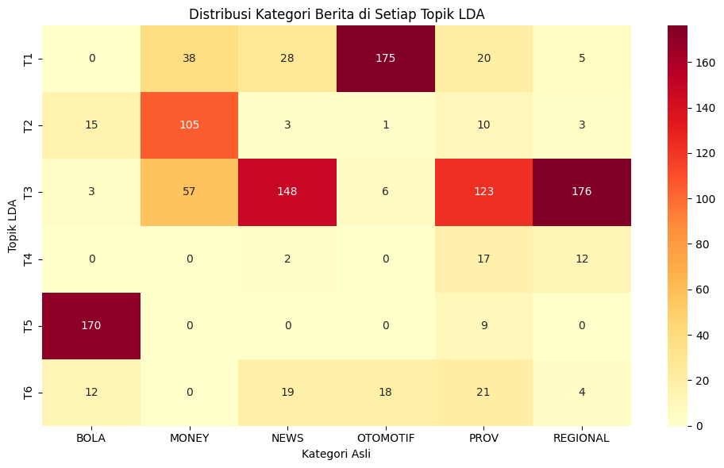

import warnings
warnings.filterwarnings('ignore') ## silent non-critical warnings
import pandas as pd
import numpy as np
import re
import nltk
import matplotlib.pyplot as plt
from sklearn.feature_extraction.text import CountVectorizer
from sklearn.decomposition import LatentDirichletAllocation
from sklearn.cluster import KMeans
from sklearn.model_selection import GridSearchCV
pd.options.display.max_colwidth = 100
# %matplotlib inline
# Load dataset
df = pd.read_csv('datasets/df_preprocessing.csv')
# Ambil kolom 'stemming_indo' sebagai corpus
corpus = np.array(df['stemming_indo'])
corpus_df = pd.DataFrame({'Document': corpus})
# Bersihkan kata 'kompas com' dan 'kompas.com'
corpus_df['Document'] = corpus_df['Document'].str.replace(r'\bkompas\s*\.?\s*com\b', '', regex=True, case=False)
# Hilangkan spasi ganda yang tersisa setelah penghapusan
corpus_df['Document'] = corpus_df['Document'].str.replace(r'\s+', ' ', regex=True).str.strip()
# Cek hasil
corpus_df.head()
| Document | |
|---|---|
| 0 | menteri pemuda olahraga erick thohir langsung gebrak minggu minggu jabat resmi cabut permenpora ... |
| 1 | manajer chelsea enzo maresca anggap sulit henti liverpool tahan gelar juara liga inggris musim i... |
| 2 | latih liverpool arne slot aku crystal palace milik kuat patut hitung liverpool racik slot tumban... |
| 3 | hasil baru pekan liga italia beda nasib juventus inter mil main allianz stadium turin sabtu mala... |
| 4 | menteri pemuda olahraga republik indonesia menpora ri erick thohir dukung dana ikut sea games th... |
# ANALISIS DATASET
print("=" * 60)
print("ANALISIS DATASET AWAL")
print("=" * 60)
print(f"\nJumlah dokumen: {len(df)}")
print(f"\nDistribusi kategori berita:")
print(df['Kategori Berita'].value_counts())
print(f"\nKolom yang tersedia:")
print(df.columns.tolist())
print(f"\nContoh data stemming_indo:")
print(df['stemming_indo'].head(3))
============================================================
ANALISIS DATASET AWAL
============================================================
Jumlah dokumen: 1200
Distribusi kategori berita:
Kategori Berita
BOLA 200
MONEY 200
NEWS 200
OTOMOTIF 200
PROV 200
REGIONAL 200
Name: count, dtype: int64
Kolom yang tersedia:
['Isi Berita', 'lwr_indo', 'clean_sw_indo', 'clean_stb_indo', 'clean_typo_indo', 'stemming_indo', 'tokenize_indo', 'Kategori Berita']
Contoh data stemming_indo:
0 kompas com menteri pemuda olahraga erick thohir langsung gebrak minggu minggu jabat resmi cabut ...
1 kompas com manajer chelsea enzo maresca anggap sulit henti liverpool tahan gelar juara liga ingg...
2 kompas com latih liverpool arne slot aku crystal palace milik kuat patut hitung liverpool racik ...
Name: stemming_indo, dtype: object
Preprocessing#
# Initialize tokenizer
wpt = nltk.WordPunctTokenizer()
# Fungsi normalisasi tanpa stopword dan tanpa stemming
def normalize_document(doc):
doc = re.sub(r'[^a-zA-Z\s]', '', doc, re.I | re.A) # Hapus simbol/punctuation
#Hapus "kompas com"
doc = re.sub(r'\bkompas\s*com\b', '', doc)
doc = re.sub(r'\bkompas\.com\b', '', doc)
doc = doc.lower().strip() # lowercase + hilangkan spasi depan/belakang
tokens = wpt.tokenize(doc) # tokenisasi kata
doc = ' '.join(tokens) # gabungkan lagi jadi satu string
return doc
# Vectorize function agar bisa diterapkan ke array / DataFrame
normalize_corpus = np.vectorize(normalize_document)
## proprocess corpus
norm_corpus = normalize_corpus(corpus)
norm_corpus
array(['menteri pemuda olahraga erick thohir langsung gebrak minggu minggu jabat resmi cabut permenpora no tuai polemik kalang laku olahraga menpora erick thohir deregulasi besar besar mangkas atur menteri maksimal atur langkah sambut positif pihak amat sepak bola nasional sit b handoyo sebab putus jalan ekspektasi publik olahraga baca juga erick thohir terobos menpora koni jatim apresiasi cabut permenpora bagus atur rancu standar kelola organisasi olahraga prestasi tumpang tindih pria sapa sit khawatir independensi cabang olahraga sirna campur tangan langsung perintah kalau cabut kabar cabang olahraga kritisi atur sebut ini terobos bagus minggu minggu pertama saja erick gebrak tunggu tunggu langsung laku putus tugas menpora imbuh sit nilai rencana sederhana permenpora no atur pasti dunia olahraga baca juga sosok fifa korban hoaks indonesia erick thohir seret lama atur tumpang tindih bingung masyarakat olahraga sisi boleh sisi atur larang atur sederhana bagus sit b handoyo fokus jelas laku cabang olahraga leluasa tenang jalan tugas organisasi bina sambung sementara erick thohir bijak deregulasi semangat reformasi birokrasi galak presiden ri prabowo subianto kita kerja efisien efektif birokrasi kemenpora sesuai ekspektasi presiden ayom layan tuju capai konferensi pers selasa salah terobos deregulasi atur menteri kurang mungkin mudah kerja stakeholder pemuda baca juga jabat fifa klarifikasi nyata palsu menpora tum pssi erick thohiria tambah putus cabut permenpora lahir masuk stakeholder olahraga diskusi pakar hukum nasional internasional sehingga deregulasi mangkas atur aspirasi laku olahraga benar benar akomodasi bijak bentuk pihak laku olahraga arti sinergi bangun prestasi sama pungkas erick thohir',
'manajer chelsea enzo maresca anggap sulit henti liverpool tahan gelar juara liga inggris musim ini enzo maresca blak blakan misi mustahil tim jegal langkah the reds kutip espn opini enzo maresca alas liverpool kokoh puncak klasemen rekor kali menang untun baca juga mohamed salah gagal raih ballon dor liverpool berkomentarsetelah hasil imbang brentford kalah manchester united chelsea tinggal tujuh poin liverpool maresca sulit chelsea kejar raih trofi liga inggris musim ini jika ini mustahil kejar mereka kami klub maresca enzo maresca puji siap liverpool tatap musim ini lebih skuad asuh arne slot rela gelontor dana bursa transfer musim panas liverpool sukses rekrut florian wirtz bayer leverkusen harga juta pound keluar juta pound alexander isak jelang bursa akhir baca juga reaksi girang lionel messi ousmane dembele raih ballon dor cara seluruh liverpool habis juta main baru mereka kerja fantastis lalu main beli niat klub saing liga primer liga champions jelas jelas padat laga ikut chelsea enzo maresca putar otak hindar lelah jelang hadap lincoln city piala liga inggris maresca coba main akademi chelsea senjang tim chelsea favorit kuat lolos babak lanjut baca juga liverpool vs southampton rotasi the reds piala liga inggrismeski begitu maresca nyaman main laga menghadapai tim asal kasta beda cara pribadi suka main lawan tim liga primer tim liga primer jenis tanding khawatir remeh lawan ini hindar laku tugas kami fokus liga primer lawan brighton sabtu jelas',
'latih liverpool arne slot aku crystal palace milik kuat patut hitung liverpool racik slot tumbang markas crystal palace skor hasil crystal palace vs liverpool laga pekan enam liga inggris gelar selhurst park london sabtu kalah liverpool liga inggris musim ini belum tim alias the reds arah arne slot sapu bersih pekan menang kumpul poin sementara itu menang palace liga inggris hasil angkat posisi total poin baca juga hasil crystal palace vs liverpool dramatis hujung laga sekali lagi kredit palace karena salah satu community shield kali kalah mereka adu penalti kami kali hadap menang sekali kali imbang menang penalti slot kutip laman resmi liverpool itu betapa sulit kami kami tim liga kalah mereka lihat ini sang latih belanda itu crystal palace buka skor menit sembilan gol ismaila sarr federico chiesa hasil sama duduk liverpool menit ke namun eddie nketiah menang tuan rumah gol menit ke baca juga liverpool bayar sisa kontrak ego jota arne slot puji peduli milik klubdalam tanding ini liverpool dominasi kuasa bola persen palace milik persen namun peluang palace unggul tujuh tembak gawang banding liverpool sangat sulit cipta peluang cipta banyak butuh cetak gol arne slot dan laku sisa batas main eks latih feyenoord sebut telah kalah ini liverpool tanding ikut rabu tandang markas galatasaray ajang liga champions',
...,
'tegal marak racun makan program makan gizi gratis mbg daerah perintah kota tegal jawa tengah ketat awas libat puskesmas ketua satgas laksana program mbg kota tegal sekda agus dwi sulistyanto puskesmas deteksi potensi masalah lapang meski kota tegal temu racun baik jadi ujar minggu baca juga rasional mbg benah bgnmenurut agus puskesmas peran sukses program mbg jaga komunikasi erat satu layan penuh gizi sppg dapur mbg wilayah masing masing tidak upaya tangan racun massal mitigasi risiko jadi ingin dukung sppg kata ia tekan edukasi anak anak sekolah terima manfaat program nali makan layak konsumsi agus arah menteri negeri tito karnavian ditindaklanjuti mendagri sebut tangan racun mbg tanggung perintah daerah baca juga jurnalis cabut kartu pers istana mbg mensesneg cari solusisejak bentuk juli satgas mbg kota tegal garda depan awal program awas bahan makan olah pihak baru baru gelar rapat koordinasi lintas sektor libat rumah sakit puskesmas sarjana gerak bangun indonesia sppi kota tegal respons antisipasi jadi ingin cegah meminimalisir potensi racun respon cepat insiden agus',
'solo perintah kota pemkot solo jawa tengah blokir akun media sosial medsos isi konten simpang seksual wali kota solo respati ardi rapat kait isu simpang seksual balai kota solo jumat rapat hadir kepala satpol pp didik anggono kepala kesbangpol agus santoso kepala dinas didik disdik dwi ariyatno kepala dpapkb kristiana hariyanti kita men takedown akun kait simpang seksual respati baca juga kecewa korban sopir taksi online laku leceh seksual hukum blokir akunia tambah blokir admin grup usia umur lima akun nama solo sukoharjo soloraya ada admin usia khawatir ujar respati ajak masyarakat peran aktif lapor temu akun grup medsos isi konten simpang seksual karena men takedown butuh partisipasi masyarakat deklarasi aja masyarakat mereport grup cenderung simpang seksual kata baca juga polda jateng pelotot akun medsos imbas teror bom molotov lokasilebih lanjut respati inspeksi dadak sidak inap indekos solo satpol pp dinas budaya pariwisata disbudpar turut informasi transaksi simpang seksual kos kosan satpol disbudpar keliling kait izin kos kosan solo respati',
'surabaya milik usaha onderdil ud sentoso seal jan hwa ana suami handy soenaryo vonis penjara rusa mobil milik paul stephanus sidang gelar adil negeri pn surabaya senin wib hakim ketua safruddin ana handy ruang sidang sari tim kuasa hukum keluarga wib baca juga jan hwa ana suami vonis rusa mobiljan hwa ana handy anggap bukti salah langgar tindak pidana rusa pasal ayat kuhp respons sebut ana handy timbang putus hakim pilih pikir pikir dahulu telah ana handy kena rompi tahan merah tulis tahan jaksa negeri surabaya tangan kiri handy tangan kanan ana borgol baca juga gudang ud sentoso seal bobol maling jan hwa ana tunggu tangan polda jatimkeduanya ruang sidang ana handy pilih tanggap putus pikir pikir sudah tanggap tadi ngomong sidang pikir pikir ana awak media senin sementara itu kuasa hukum ana handy elok dwi kadja diskus kait putus hakim kami pikir pikir dulu elok kasus rusa kerja kanopi pes dakwa handy paul stephanus nila rp juta saksi paul terima pesan dakwa handy agustus namun kerja batal dakwa oktober progres kerja capai persen telah batal handy tuntut kembali uang muka rp namun sepakat adu mulut ujung aksi rusa kendara lokasi saat paul lokasi ambil alat kerja riak maling lapor polsek dukuh pakis ban mobil sewa hironimus copot ban mobil yanto yanto aku turun lantai ban mobil gerinda rugi alami paul taksir rp juta nimus klaim mobil sewa jadi barang bukti'],
dtype='<U3898')
Bag of Words Model#
## CountVectorizer dengan parameter yang lebih baik untuk topic modeling
# min_df: hilangkan kata yang muncul di < 2 dokumen (terlalu jarang)
# max_df: hilangkan kata yang muncul di > 95% dokumen (terlalu umum, seperti stopword)
# max_features: batasi hanya 5000 kata paling penting (opsional)
cv = CountVectorizer(
min_df=2, # minimal muncul di 2 dokumen
max_df=0.95, # maksimal muncul di 95% dokumen
max_features=5000 # ambil 5000 kata teratas
)
cv_matrix = cv.fit_transform(norm_corpus)
print(f"Ukuran vocabulary setelah filtering: {len(cv.get_feature_names_out())}")
print(f"Shape matrix: {cv_matrix.shape}")
cv_matrix
Ukuran vocabulary setelah filtering: 5000
Shape matrix: (1200, 5000)
<1200x5000 sparse matrix of type '<class 'numpy.int64'>'
with 132688 stored elements in Compressed Sparse Row format>
## Inspect BOA matrix
## warning might give a memory error if data is too big
cv_matrix = cv_matrix.toarray()
cv_matrix
array([[0, 0, 0, ..., 0, 0, 0],
[0, 0, 0, ..., 0, 0, 0],
[0, 0, 0, ..., 0, 0, 0],
...,
[0, 0, 0, ..., 0, 0, 0],
[0, 0, 0, ..., 0, 0, 0],
[0, 0, 0, ..., 0, 0, 0]], dtype=int64)
## Check all lexical features
vocab = cv.get_feature_names_out()
## View BOA in df
pd.DataFrame(cv_matrix, columns=vocab)
| aan | abad | abadi | abai | abang | abdi | abdul | abdullah | abimanyu | abiyoso | ... | zenix | zero | zidane | zijlstra | zona | zoo | zulfikar | zulhas | zulkifli | zwolle | |
|---|---|---|---|---|---|---|---|---|---|---|---|---|---|---|---|---|---|---|---|---|---|
| 0 | 0 | 0 | 0 | 0 | 0 | 0 | 0 | 0 | 0 | 0 | ... | 0 | 0 | 0 | 0 | 0 | 0 | 0 | 0 | 0 | 0 |
| 1 | 0 | 0 | 0 | 0 | 0 | 0 | 0 | 0 | 0 | 0 | ... | 0 | 0 | 0 | 0 | 0 | 0 | 0 | 0 | 0 | 0 |
| 2 | 0 | 0 | 0 | 0 | 0 | 0 | 0 | 0 | 0 | 0 | ... | 0 | 0 | 0 | 0 | 0 | 0 | 0 | 0 | 0 | 0 |
| 3 | 0 | 0 | 0 | 0 | 0 | 0 | 0 | 0 | 0 | 0 | ... | 0 | 0 | 0 | 0 | 0 | 0 | 0 | 0 | 0 | 0 |
| 4 | 0 | 0 | 0 | 0 | 0 | 0 | 0 | 0 | 0 | 0 | ... | 0 | 0 | 0 | 0 | 0 | 0 | 0 | 0 | 0 | 0 |
| ... | ... | ... | ... | ... | ... | ... | ... | ... | ... | ... | ... | ... | ... | ... | ... | ... | ... | ... | ... | ... | ... |
| 1195 | 0 | 0 | 0 | 0 | 0 | 0 | 0 | 0 | 0 | 0 | ... | 0 | 0 | 0 | 0 | 0 | 0 | 0 | 0 | 0 | 0 |
| 1196 | 0 | 0 | 0 | 0 | 0 | 0 | 0 | 0 | 0 | 0 | ... | 0 | 0 | 0 | 0 | 0 | 0 | 0 | 0 | 0 | 0 |
| 1197 | 0 | 0 | 0 | 0 | 0 | 0 | 0 | 0 | 0 | 0 | ... | 0 | 0 | 0 | 0 | 0 | 0 | 0 | 0 | 0 | 0 |
| 1198 | 0 | 0 | 0 | 0 | 0 | 0 | 0 | 0 | 0 | 0 | ... | 0 | 0 | 0 | 0 | 0 | 0 | 0 | 0 | 0 | 0 |
| 1199 | 0 | 0 | 0 | 0 | 0 | 0 | 0 | 0 | 0 | 0 | ... | 0 | 0 | 0 | 0 | 0 | 0 | 0 | 0 | 0 | 0 |
1200 rows × 5000 columns
Intuition of LDA#
Building LDA Model#
## Building LDA Model dengan parameter yang lebih baik
lda = LatentDirichletAllocation(
n_components=6, # 6 topik sesuai 6 kategori
max_iter=50, # maksimal iterasi
learning_method='online', # lebih cepat untuk dataset besar
learning_offset=50.0, # kontrol learning rate
random_state=42, # reproducibility
n_jobs=-1 # gunakan semua CPU core
)
doc_topic_matrix = lda.fit_transform(cv_matrix)
print('LDA model trained!')
print(f'Number of iterations: {lda.n_iter_}')
LDA model trained!
Number of iterations: 50
Model Performance Metrics#
## log-likelihood
print(lda.score(cv_matrix))
## perplexity
print(lda.perplexity(cv_matrix))
-1668942.076244743
1483.8125125644879
1483.8125125644879
Interpretation#
print(doc_topic_matrix.shape) ## doc-by-topic matrix
print(lda.components_.shape) ## topic-by-word- matrix
(1200, 6)
(6, 5000)
Document-by-Topic Matrix#
## doc-topic matrix
doc_topic_df = pd.DataFrame(doc_topic_matrix, columns=['T1', 'T2', 'T3','T4', 'T5','T6'])
doc_topic_df
| T1 | T2 | T3 | T4 | T5 | T6 | |
|---|---|---|---|---|---|---|
| 0 | 0.000778 | 0.051443 | 0.585869 | 0.006936 | 0.051278 | 0.303696 |
| 1 | 0.000814 | 0.064979 | 0.000811 | 0.000809 | 0.931778 | 0.000809 |
| 2 | 0.000839 | 0.000844 | 0.000838 | 0.000836 | 0.995804 | 0.000839 |
| 3 | 0.000884 | 0.000885 | 0.000884 | 0.000884 | 0.995576 | 0.000887 |
| 4 | 0.000864 | 0.481746 | 0.062041 | 0.000863 | 0.177614 | 0.276872 |
| ... | ... | ... | ... | ... | ... | ... |
| 1195 | 0.001164 | 0.001162 | 0.994183 | 0.001169 | 0.001161 | 0.001161 |
| 1196 | 0.034928 | 0.000952 | 0.487077 | 0.263934 | 0.000952 | 0.212157 |
| 1197 | 0.001104 | 0.001105 | 0.994485 | 0.001102 | 0.001102 | 0.001103 |
| 1198 | 0.001225 | 0.001221 | 0.993886 | 0.001220 | 0.001221 | 0.001226 |
| 1199 | 0.000814 | 0.022317 | 0.291535 | 0.683714 | 0.000809 | 0.000810 |
1200 rows × 6 columns
Topic-by-Word Matrix#
topic_word_matrix = lda.components_
pd.DataFrame(topic_word_matrix, columns=vocab)
| aan | abad | abadi | abai | abang | abdi | abdul | abdullah | abimanyu | abiyoso | ... | zenix | zero | zidane | zijlstra | zona | zoo | zulfikar | zulhas | zulkifli | zwolle | |
|---|---|---|---|---|---|---|---|---|---|---|---|---|---|---|---|---|---|---|---|---|---|
| 0 | 0.169524 | 2.006003 | 2.086428 | 8.898724 | 0.170359 | 0.167064 | 14.254594 | 0.166798 | 0.166679 | 5.845760 | ... | 5.833982 | 0.170284 | 0.166675 | 0.166681 | 0.167455 | 0.166680 | 0.166828 | 0.166858 | 0.166711 | 0.166691 |
| 1 | 0.166864 | 0.166675 | 8.242061 | 2.152576 | 0.166809 | 0.167862 | 0.166920 | 0.167810 | 0.171281 | 0.166676 | ... | 0.166955 | 0.191965 | 0.171922 | 0.166677 | 10.083338 | 0.166675 | 0.167691 | 0.167051 | 0.167339 | 0.166714 |
| 2 | 8.579546 | 4.029760 | 0.168013 | 2.562114 | 8.598334 | 8.643291 | 42.856429 | 7.622055 | 9.579730 | 0.166679 | ... | 0.166681 | 7.612730 | 0.166677 | 0.166692 | 8.046586 | 1.444695 | 7.570986 | 22.039190 | 18.096101 | 0.166692 |
| 3 | 0.166676 | 0.166678 | 0.167684 | 1.092821 | 0.169968 | 8.430096 | 0.171749 | 0.166786 | 0.166680 | 0.166674 | ... | 0.166674 | 0.166795 | 0.166906 | 0.166675 | 2.811356 | 6.707929 | 0.166675 | 0.166677 | 0.166674 | 0.166676 |
| 4 | 0.166674 | 1.053705 | 1.056266 | 0.166693 | 0.166679 | 1.064210 | 0.167362 | 8.176628 | 0.166682 | 0.166677 | ... | 0.166675 | 0.166675 | 8.155086 | 5.521531 | 38.640228 | 0.166857 | 0.166676 | 0.166676 | 0.166676 | 6.375682 |
| 5 | 0.166675 | 0.167591 | 0.167450 | 0.166852 | 0.167801 | 0.182237 | 0.169143 | 1.729527 | 0.166675 | 0.166675 | ... | 0.166674 | 0.166676 | 0.167000 | 0.166675 | 0.167400 | 0.167618 | 0.166676 | 0.166676 | 0.166675 | 0.166848 |
6 rows × 5000 columns
pd.DataFrame(np.transpose(topic_word_matrix), index=vocab)
| 0 | 1 | 2 | 3 | 4 | 5 | |
|---|---|---|---|---|---|---|
| aan | 0.169524 | 0.166864 | 8.579546 | 0.166676 | 0.166674 | 0.166675 |
| abad | 2.006003 | 0.166675 | 4.029760 | 0.166678 | 1.053705 | 0.167591 |
| abadi | 2.086428 | 8.242061 | 0.168013 | 0.167684 | 1.056266 | 0.167450 |
| abai | 8.898724 | 2.152576 | 2.562114 | 1.092821 | 0.166693 | 0.166852 |
| abang | 0.170359 | 0.166809 | 8.598334 | 0.169968 | 0.166679 | 0.167801 |
| ... | ... | ... | ... | ... | ... | ... |
| zoo | 0.166680 | 0.166675 | 1.444695 | 6.707929 | 0.166857 | 0.167618 |
| zulfikar | 0.166828 | 0.167691 | 7.570986 | 0.166675 | 0.166676 | 0.166676 |
| zulhas | 0.166858 | 0.167051 | 22.039190 | 0.166677 | 0.166676 | 0.166676 |
| zulkifli | 0.166711 | 0.167339 | 18.096101 | 0.166674 | 0.166676 | 0.166675 |
| zwolle | 0.166691 | 0.166714 | 0.166692 | 0.166676 | 6.375682 | 0.166848 |
5000 rows × 6 columns
Interpreting the Meanings of Topics#
## customized function
def get_topics_meanings(tw_m,
vocab,
display_weights=False,
topn=5,
weight_cutoff=0.6):
"""
This function sorts the words importance under each topic and
allows selecting words based on ranks or a cutoff on weights.
Parameters:
- tw_m : array-like
Topic by Word matrix containing the weights of each word in each topic.
- vocab : list
List of words in the vocabulary.
- display_weights : bool, optional (default=False)
Flag to indicate whether to display words with their weights.
- topn : int, optional (default=5)
Number of top words to display for each topic if display_weights is False.
- weight_cutoff : float, optional (default=0.6)
Weight cutoff threshold for displaying words if display_weights is True.
"""
for i, topic_weights in enumerate(tw_m):
topic = [(token, np.round(weight, 2)) for token, weight in zip(vocab, topic_weights)]
topic = sorted(topic, key=lambda x: -x[1])
if display_weights:
topic = [item for item in topic if item[1] > weight_cutoff]
print(f"Topic #{i} :\n{topic}")
print("=" * 20)
else:
topic_topn = topic[:topn]
topic_topn = ' '.join([word for word, weight in topic_topn])
print(f"Topic #{i} :\n{topic_topn}")
print('=' * 20)
get_topics_meanings(topic_word_matrix,
vocab,
display_weights=True,
weight_cutoff=2)
Topic #0 :
[('mobil', 573.66), ('kendara', 559.2), ('listrik', 512.33), ('motor', 445.1), ('jalan', 443.75), ('jakarta', 390.68), ('rp', 331.8), ('milik', 303.16), ('indonesia', 288.61), ('harga', 287.89), ('bbm', 237.63), ('bakar', 218.46), ('mesin', 205.36), ('hadir', 197.18), ('guna', 191.44), ('resmi', 188.39), ('tol', 186.98), ('pertamina', 180.14), ('beli', 177.27), ('jual', 176.71), ('unit', 175.84), ('masyarakat', 173.52), ('spbu', 167.19), ('ini', 165.13), ('lintas', 162.87), ('honda', 160.13), ('bahan', 158.26), ('kai', 157.86), ('juta', 156.1), ('sesuai', 154.91), ('shell', 154.12), ('suzuki', 153.28), ('itu', 149.25), ('kota', 147.66), ('imos', 147.45), ('kondisi', 146.03), ('cepat', 136.47), ('alternator', 134.39), ('pakai', 133.96), ('konsumen', 129.95), ('september', 124.93), ('subsidi', 124.25), ('layan', 121.23), ('buka', 119.68), ('sedia', 116.16), ('salah', 115.33), ('pilih', 113.81), ('biaya', 113.69), ('tarif', 113.24), ('butuh', 111.07), ('kereta', 110.0), ('isi', 109.99), ('baik', 109.29), ('toyota', 108.79), ('macet', 107.5), ('lampu', 106.7), ('tambah', 106.5), ('pasar', 106.32), ('beda', 104.88), ('bekas', 103.44), ('api', 103.31), ('sampah', 102.55), ('daya', 101.81), ('persen', 99.96), ('pt', 99.75), ('baru', 99.71), ('daftar', 99.18), ('gerbang', 99.1), ('kompas', 97.27), ('kualitas', 96.16), ('laku', 94.84), ('kerja', 94.62), ('sistem', 94.07), ('tiket', 94.07), ('produk', 92.8), ('nyaman', 90.3), ('hari', 90.24), ('strobo', 89.47), ('luncur', 88.31), ('promo', 86.59), ('access', 86.48), ('lengkap', 85.48), ('langgan', 85.31), ('bus', 85.26), ('ban', 83.62), ('tenaga', 82.81), ('jadi', 82.73), ('oktober', 82.43), ('semanggi', 81.62), ('pln', 79.33), ('daihatsu', 79.27), ('tampil', 78.17), ('tutup', 77.92), ('gt', 76.54), ('rusak', 76.42), ('khusus', 76.13), ('kata', 75.09), ('perintah', 74.66), ('jaga', 72.91), ('kemudi', 72.86), ('model', 72.84), ('swasta', 72.66), ('utama', 71.89), ('baterai', 71.69), ('tarik', 71.58), ('langsung', 71.42), ('ganti', 70.33), ('sebut', 69.83), ('wuk', 69.78), ('tot', 69.74), ('vinfast', 69.66), ('jadwal', 69.56), ('alami', 68.72), ('selain', 68.12), ('yogyakarta', 67.79), ('minggu', 67.61), ('cek', 67.48), ('matik', 67.0), ('standar', 66.61), ('komponen', 66.54), ('posisi', 66.42), ('usaha', 66.36), ('lain', 66.18), ('hybrid', 66.12), ('jawa', 66.07), ('mudah', 65.99), ('desain', 65.53), ('turun', 65.49), ('modern', 65.23), ('bensin', 65.02), ('nilai', 64.18), ('sale', 63.85), ('padat', 63.48), ('dengan', 62.97), ('dukung', 62.85), ('hasil', 62.67), ('kenal', 62.42), ('modifikasi', 62.28), ('pamer', 62.28), ('otomotif', 61.89), ('sirene', 61.89), ('sebab', 61.83), ('catat', 61.65), ('fitur', 61.64), ('barat', 61.16), ('diskon', 61.15), ('namun', 60.88), ('aki', 60.61), ('ikut', 60.3), ('terang', 59.95), ('transportasi', 59.72), ('tingkat', 59.15), ('tinggi', 59.13), ('teknologi', 58.81), ('rute', 58.68), ('tahun', 58.1), ('aplikasi', 57.97), ('tawar', 57.92), ('kali', 57.67), ('id', 57.35), ('lowong', 56.79), ('alih', 56.57), ('jam', 56.19), ('solo', 55.97), ('flash', 55.55), ('arah', 55.38), ('gas', 55.37), ('syarat', 54.88), ('pajak', 54.77), ('ubah', 54.62), ('rabu', 54.25), ('suv', 53.85), ('bengkel', 53.82), ('liter', 53.66), ('kapasitas', 53.41), ('ilustrasi', 53.35), ('digital', 53.34), ('rekrutmen', 53.21), ('besar', 53.18), ('performa', 53.01), ('yamaha', 52.77), ('alam', 52.4), ('akses', 52.2), ('air', 51.81), ('energi', 51.52), ('banding', 51.5), ('tangerang', 51.31), ('capai', 50.93), ('muncul', 50.91), ('jenis', 50.82), ('lanjut', 50.49), ('wib', 50.38), ('operasi', 50.3), ('bawa', 50.28), ('tabung', 49.99), ('transjakarta', 49.34), ('masuk', 49.02), ('area', 48.96), ('untuk', 48.77), ('pabrik', 48.69), ('aman', 48.24), ('hut', 48.21), ('program', 47.88), ('sementara', 47.84), ('kaki', 47.27), ('sepeda', 47.26), ('pasang', 46.94), ('proses', 46.8), ('esdm', 46.62), ('meski', 46.52), ('jangkau', 45.97), ('penuh', 45.92), ('jalur', 45.69), ('kalau', 45.59), ('beras', 45.36), ('ganggu', 45.35), ('atur', 45.25), ('tni', 45.25), ('komitmen', 45.21), ('mogok', 45.18), ('rumah', 44.94), ('awat', 44.67), ('warna', 44.45), ('sport', 44.38), ('rusa', 44.17), ('jarak', 44.06), ('merek', 43.94), ('perhati', 43.88), ('raya', 43.85), ('turut', 43.69), ('awal', 43.52), ('lokasi', 42.79), ('tumpang', 42.76), ('angkut', 42.48), ('senin', 42.3), ('andal', 42.29), ('kwh', 42.29), ('new', 42.07), ('bp', 41.96), ('parkir', 41.77), ('langkah', 41.75), ('filter', 41.69), ('ayla', 41.66), ('minyak', 41.45), ('transmisi', 41.26), ('kembang', 41.03), ('tentu', 40.9), ('off', 40.87), ('fungsi', 40.8), ('kanan', 40.73), ('roda', 40.73), ('kurang', 40.61), ('marga', 40.43), ('udara', 40.33), ('bal', 40.28), ('industri', 40.15), ('ke', 40.1), ('hubung', 39.98), ('bca', 39.93), ('km', 39.67), ('tapera', 39.64), ('produksi', 39.43), ('agustus', 39.29), ('depan', 39.28), ('sama', 39.27), ('panjang', 38.93), ('percaya', 38.66), ('by', 38.59), ('com', 38.59), ('bisnis', 38.56), ('bagi', 38.53), ('total', 38.47), ('kilogram', 38.45), ('sim', 38.28), ('tinggal', 38.25), ('masalah', 38.18), ('nasional', 37.93), ('risiko', 37.86), ('lexus', 37.82), ('dalam', 37.78), ('harap', 37.76), ('temu', 37.75), ('gelar', 37.68), ('akibat', 37.52), ('informasi', 37.51), ('jelas', 37.42), ('jaring', 37.36), ('stasiun', 37.21), ('barang', 37.05), ('putar', 37.02), ('tipe', 36.89), ('pertamax', 36.86), ('orang', 36.79), ('slip', 36.52), ('kena', 36.46), ('cc', 36.43), ('dasar', 36.34), ('sisi', 36.31), ('unjung', 36.3), ('ujar', 36.2), ('jasa', 36.19), ('show', 35.89), ('normal', 35.88), ('setir', 35.68), ('bayar', 35.67), ('nyala', 35.58), ('tri', 35.42), ('segmen', 35.26), ('tanjak', 35.09), ('inovasi', 34.89), ('kawasan', 34.58), ('luas', 34.53), ('di', 34.52), ('benar', 34.36), ('bandung', 34.05), ('pasok', 34.04), ('ev', 34.01), ('fasilitas', 33.99), ('sulit', 33.85), ('token', 33.71), ('skema', 33.66), ('rdf', 33.42), ('led', 33.36), ('giias', 33.32), ('mg', 33.25), ('banyak', 33.15), ('akun', 33.14), ('kuat', 33.1), ('ice', 33.08), ('umum', 32.95), ('konsumsi', 32.9), ('selasa', 32.88), ('kolaborasi', 32.81), ('ulang', 32.69), ('angka', 32.53), ('habis', 32.35), ('batas', 32.21), ('dananjaya', 32.19), ('astra', 32.16), ('efisien', 32.02), ('ron', 31.96), ('tahan', 31.91), ('laman', 31.85), ('lalu', 31.82), ('satu', 31.82), ('dok', 31.72), ('jogja', 31.72), ('lama', 31.55), ('uji', 31.5), ('ruang', 31.47), ('mitsubishi', 31.46), ('praktis', 31.42), ('sempat', 31.36), ('keluh', 31.28), ('cross', 31.27), ('comdio', 31.26), ('varian', 31.25), ('suspensi', 31.2), ('non', 31.07), ('dia', 31.05), ('tugas', 31.0), ('ramai', 30.99), ('ringan', 30.84), ('cari', 30.67), ('mobilitas', 30.65), ('kb', 30.63), ('tempuh', 30.55), ('wilayah', 30.36), ('bsd', 30.33), ('pabrikan', 30.04), ('ajang', 30.03), ('optimal', 29.97), ('selamat', 29.97), ('madam', 29.96), ('ada', 29.9), ('online', 29.89), ('pribadi', 29.68), ('hasto', 29.66), ('saja', 29.66), ('potensi', 29.6), ('golong', 29.56), ('kami', 29.45), ('bagai', 29.42), ('skutik', 29.28), ('parah', 29.19), ('klasik', 29.13), ('alternatif', 28.99), ('vietnam', 28.94), ('lebih', 28.88), ('kilometer', 28.84), ('rorotan', 28.81), ('tangan', 28.75), ('niaga', 28.67), ('surabaya', 28.66), ('komunitas', 28.61), ('yaris', 28.5), ('ka', 28.46), ('bantu', 28.45), ('putus', 28.44), ('bentuk', 28.39), ('ya', 28.32), ('solusi', 28.31), ('semarang', 28.3), ('tanda', 28.3), ('lepas', 28.27), ('rendah', 28.21), ('coba', 28.2), ('bi', 28.13), ('distribusi', 27.89), ('stok', 27.86), ('murah', 27.78), ('rata', 27.77), ('jauh', 27.75), ('otomatis', 27.75), ('rem', 27.68), ('kiri', 27.5), ('hidup', 27.37), ('ukur', 27.1), ('director', 26.94), ('belum', 26.9), ('power', 26.73), ('kait', 26.61), ('oli', 26.58), ('gantung', 26.52), ('spesifikasi', 26.5), ('utara', 26.41), ('elektronik', 26.3), ('premium', 26.18), ('bebas', 26.16), ('saran', 26.03), ('timbul', 26.03), ('manfaat', 25.99), ('nama', 25.99), ('sumber', 25.92), ('dingin', 25.88), ('tekan', 25.82), ('dari', 25.81), ('bocor', 25.78), ('sosial', 25.74), ('dinamo', 25.68), ('bulog', 25.67), ('servis', 25.64), ('mati', 25.63), ('rotator', 25.63), ('hitung', 25.61), ('kopdes', 25.6), ('motorcycle', 25.57), ('fokus', 25.53), ('adv', 25.4), ('tambal', 25.26), ('tangga', 25.26), ('bijak', 25.09), ('dampak', 24.91), ('campur', 24.78), ('merah', 24.77), ('siap', 24.76), ('hindar', 24.75), ('kiagus', 24.68), ('life', 24.63), ('road', 24.6), ('pasti', 24.55), ('tuju', 24.5), ('perangkat', 24.48), ('berangkat', 24.38), ('pintu', 24.24), ('grand', 24.18), ('ingat', 24.18), ('lingkung', 24.17), ('hilang', 23.97), ('cahaya', 23.91), ('ramah', 23.77), ('diler', 23.76), ('hal', 23.76), ('kamis', 23.75), ('tx', 23.73), ('rush', 23.7), ('gaya', 23.67), ('gerak', 23.64), ('rasa', 23.63), ('tangki', 23.6), ('ruas', 23.57), ('tulis', 23.54), ('tengah', 23.53), ('aku', 23.5), ('kecil', 23.49), ('stabil', 23.41), ('mahal', 23.39), ('paksa', 23.38), ('lagi', 23.37), ('lokal', 23.32), ('berat', 23.31), ('ambil', 23.26), ('serta', 23.14), ('bangun', 23.13), ('kerap', 23.1), ('dorong', 23.01), ('arus', 22.88), ('nm', 22.88), ('rudy', 22.85), ('pusat', 22.82), ('meter', 22.73), ('stella', 22.73), ('nya', 22.7), ('celaka', 22.68), ('pengaruh', 22.59), ('juli', 22.53), ('kala', 22.52), ('instagram', 22.51), ('lancar', 22.36), ('kombinasi', 22.34), ('faktor', 22.19), ('lewat', 22.18), ('elpiji', 22.17), ('malam', 22.16), ('warga', 22.11), ('kg', 22.09), ('sendiri', 22.04), ('sorot', 22.01), ('alas', 21.98), ('efisiensi', 21.95), ('torsi', 21.84), ('car', 21.82), ('max', 21.75), ('pesawat', 21.72), ('mohon', 21.68), ('jimny', 21.66), ('direktur', 21.65), ('kelas', 21.57), ('imbas', 21.54), ('unggul', 21.46), ('hadap', 21.45), ('laju', 21.42), ('depok', 21.25), ('ia', 21.25), ('selesai', 21.17), ('pajero', 21.05), ('properti', 21.04), ('auto', 21.0), ('innova', 20.97), ('periksa', 20.97), ('potong', 20.94), ('chery', 20.93), ('day', 20.93), ('kupprum', 20.92), ('ac', 20.91), ('agung', 20.89), ('buzz', 20.86), ('upaya', 20.86), ('naik', 20.82), ('kerry', 20.81), ('pekan', 20.81), ('kelola', 20.72), ('klaim', 20.71), ('nomor', 20.64), ('olah', 20.64), ('cicil', 20.62), ('mampu', 20.53), ('kuningan', 20.48), ('aktivitas', 20.38), ('lihat', 20.36), ('kotor', 20.35), ('vs', 20.35), ('tepat', 20.31), ('mobile', 20.29), ('acu', 20.25), ('helm', 20.0), ('mm', 19.99), ('turbo', 19.99), ('alva', 19.97), ('jazz', 19.97), ('terap', 19.97), ('fronx', 19.95), ('motors', 19.95), ('sales', 19.95), ('akhir', 19.93), ('irit', 19.89), ('bikin', 19.87), ('pada', 19.87), ('filano', 19.83), ('sensor', 19.77), ('rancang', 19.73), ('publik', 19.71), ('periode', 19.68), ('lajur', 19.67), ('patra', 19.67), ('gabung', 19.61), ('gula', 19.6), ('begitu', 19.53), ('demikian', 19.53), ('giat', 19.5), ('generasi', 19.38), ('duduk', 19.34), ('signifikan', 19.25), ('pagi', 19.08), ('wuling', 19.07), ('lung', 19.04), ('lambat', 19.0), ('bidang', 18.96), ('booth', 18.96), ('mewah', 18.96), ('vw', 18.94), ('gejala', 18.92), ('dua', 18.91), ('padu', 18.9), ('mt', 18.87), ('oplos', 18.86), ('lemah', 18.84), ('kontribusi', 18.78), ('kursi', 18.75), ('alutsista', 18.72), ('asli', 18.7), ('tantang', 18.68), ('fuel', 18.66), ('usia', 18.66), ('halte', 18.65), ('data', 18.64), ('group', 18.64), ('cara', 18.63), ('populer', 18.58), ('ekosistem', 18.54), ('agam', 18.53), ('unggah', 18.49), ('tanah', 18.41), ('tanggung', 18.38), ('dki', 18.34), ('bukti', 18.31), ('bahaya', 18.25), ('deret', 18.22), ('panel', 18.18), ('tahap', 18.13), ('comdonny', 18.1), ('kabin', 18.07), ('tren', 18.07), ('curhat', 18.05), ('sentuh', 18.05), ('pedal', 18.04), ('teknik', 17.99), ('calon', 17.91), ('krl', 17.9), ('operasional', 17.9), ('suplai', 17.89), ('cawang', 17.85), ('tetap', 17.81), ('damkar', 17.8), ('indikator', 17.78), ('strategis', 17.75), ('president', 17.74), ('sederhana', 17.72), ('salur', 17.66), ('bas', 17.65), ('anggap', 17.63), ('tidak', 17.59), ('buat', 17.55), ('iring', 17.52), ('super', 17.49), ('media', 17.45), ('sphp', 17.43), ('stop', 17.35), ('kosong', 17.33), ('darurat', 17.3), ('timur', 17.27), ('aftermarket', 17.23), ('contoh', 17.22), ('kece', 17.19), ('terima', 17.15), ('atas', 17.14), ('odometer', 17.14), ('raize', 17.13), ('ahm', 17.12), ('hemat', 17.12), ('safety', 17.12), ('xiaomi', 17.11), ('baic', 17.1), ('comgilang', 17.1), ('vf', 17.04), ('bersih', 17.0), ('keluarga', 17.0), ('maksimal', 16.99), ('menteri', 16.99), ('djoko', 16.92), ('jika', 16.87), ('diesel', 16.84), ('biasa', 16.82), ('datang', 16.8), ('event', 16.8), ('main', 16.79), ('usung', 16.78), ('marketing', 16.72), ('banderol', 16.68), ('link', 16.62), ('selatan', 16.61), ('ekonomi', 16.55), ('infrastruktur', 16.46), ('buang', 16.42), ('tempat', 16.39), ('teknis', 16.38), ('iv', 16.3), ('karangasem', 16.27), ('sirine', 16.23), ('bekal', 16.21), ('kredit', 16.2), ('kijang', 16.19), ('bodi', 16.17), ('rocky', 16.17), ('panas', 16.15), ('mineral', 16.11), ('insentif', 16.09), ('pindah', 16.07), ('pipa', 16.07), ('kurniawan', 16.0), ('picu', 16.0), ('korlantas', 15.95), ('beban', 15.92), ('desember', 15.92), ('emisi', 15.9), ('ribu', 15.9), ('imbau', 15.86), ('cenderung', 15.83), ('persero', 15.8), ('lansir', 15.79), ('tilang', 15.75), ('impor', 15.73), ('lamar', 15.73), ('lulus', 15.71), ('antre', 15.7), ('layak', 15.68), ('sehat', 15.68), ('kuota', 15.67), ('kini', 15.64), ('medan', 15.63), ('staff', 15.61), ('sepenuh', 15.59), ('tipu', 15.58), ('kesan', 15.57), ('pantau', 15.57), ('spesial', 15.52), ('gigit', 15.51), ('pgn', 15.45), ('artikel', 15.42), ('untung', 15.42), ('video', 15.39), ('test', 15.36), ('audio', 15.27), ('pulau', 15.27), ('tiggo', 15.27), ('spesialis', 15.24), ('sisa', 15.23), ('cocok', 15.21), ('ganjil', 15.16), ('parsial', 15.11), ('terminal', 15.07), ('bogor', 15.06), ('nyata', 15.05), ('sabtu', 15.03), ('adapun', 15.0), ('ranjau', 14.99), ('situasi', 14.98), ('apar', 14.94), ('sembarang', 14.92), ('anne', 14.86), ('cakup', 14.84), ('rutin', 14.77), ('edukasi', 14.75), ('suara', 14.75), ('corporate', 14.7), ('amen', 14.69), ('limbah', 14.67), ('dekat', 14.63), ('rupa', 14.61), ('mata', 14.59), ('spesifik', 14.55), ('anti', 14.51), ('tangguh', 14.42), ('garansi', 14.39), ('manager', 14.38), ('tiga', 14.36), ('csh', 14.32), ('kasur', 14.32), ('comruly', 14.31), ('dishub', 14.31), ('fickry', 14.31), ('vehicle', 14.31), ('giorno', 14.29), ('mazda', 14.29), ('rekomendasi', 14.28), ('rx', 14.28), ('comadityo', 14.27), ('kirana', 14.27), ('abdul', 14.25), ('inci', 14.25), ('dimensi', 14.21), ('au', 14.19), ('genap', 14.19), ('byd', 14.18), ('city', 14.18), ('suku', 14.18), ('peran', 14.17), ('antisipasi', 14.16), ('kendala', 14.16), ('wujud', 14.1), ('konsep', 14.07), ('sudirman', 14.07), ('subang', 14.05), ('rangkai', 14.04), ('head', 13.99), ('lumas', 13.98), ('tempur', 13.97), ('kendali', 13.95), ('belakang', 13.87), ('triwulan', 13.87), ('prabayar', 13.8), ('liar', 13.79), ('penting', 13.76), ('suhu', 13.73), ('ton', 13.72), ('akselerasi', 13.71), ('hijau', 13.69), ('era', 13.66), ('https', 13.66), ('seleksi', 13.64), ('kayak', 13.59), ('karet', 13.55), ('sewa', 13.54), ('kur', 13.51), ('interior', 13.46), ('fenomena', 13.44), ('respons', 13.43), ('organik', 13.39), ('tvs', 13.39), ('touring', 13.37), ('banget', 13.36), ('apresiasi', 13.31), ('serius', 13.3), ('konvensional', 13.29), ('lebar', 13.26), ('pria', 13.26), ('kabel', 13.25), ('platform', 13.24), ('buruk', 13.22), ('komersial', 13.17), ('cipta', 13.09), ('nonsubsidi', 13.09), ('panjaitan', 13.09), ('sehingga', 13.09), ('simak', 13.08), ('kunjung', 13.04), ('responsif', 13.03), ('positif', 13.02), ('kunci', 13.01), ('ceo', 12.99), ('relevan', 12.97), ('rekor', 12.88), ('tapi', 12.86), ('sopir', 12.84), ('formasi', 12.78), ('rencana', 12.76), ('gigi', 12.69), ('karakter', 12.69), ('koordinasi', 12.69), ('hibur', 12.68), ('daop', 12.67), ('gratis', 12.66), ('lini', 12.66), ('wajib', 12.64), ('denda', 12.62), ('kutip', 12.6), ('rakit', 12.56), ('pertama', 12.53), ('transformasi', 12.48), ('part', 12.47), ('operator', 12.46), ('wisnu', 12.45), ('ampere', 12.44), ('canggih', 12.44), ('hyundai', 12.43), ('gran', 12.42), ('versys', 12.42), ('showroom', 12.39), ('waktu', 12.38), ('iwan', 12.37), ('makro', 12.36), ('rangka', 12.34), ('rekayasa', 12.33), ('halus', 12.3), ('tomang', 12.3), ('tubeless', 12.3), ('irc', 12.29), ('jpx', 12.28), ('prediksi', 12.28), ('detail', 12.26), ('birthday', 12.25), ('kode', 12.25), ('tualang', 12.25), ('roberth', 12.24), ('store', 12.23), ('error', 12.22), ('va', 12.21), ('variasi', 12.21), ('bilang', 12.2), ('nikmat', 12.19), ('thamrin', 12.19), ('base', 12.13), ('polisi', 12.13), ('cermin', 12.08), ('langka', 12.08), ('tak', 12.08), ('manual', 12.07), ('timbang', 12.04), ('sporty', 12.03), ('bagus', 12.02), ('injak', 12.02), ('paku', 11.99), ('versi', 11.99), ('besok', 11.98), ('cadang', 11.95), ('minimal', 11.95), ('maaf', 11.93), ('center', 11.87), ('target', 11.86), ('jaya', 11.83), ('sini', 11.78), ('satria', 11.77), ('ucap', 11.76), ('panik', 11.69), ('strategi', 11.67), ('ajak', 11.59), ('asal', 11.56), ('bapanas', 11.56), ('pacar', 11.55), ('akrab', 11.51), ('kisinger', 11.5), ('layar', 11.5), ('rico', 11.5), ('sony', 11.5), ('udin', 11.5), ('apparel', 11.49), ('belt', 11.48), ('hev', 11.48), ('rochmat', 11.48), ('bulan', 11.47), ('gl', 11.47), ('yuswidjajanto', 11.47), ('oktan', 11.46), ('skuter', 11.46), ('jiwa', 11.44), ('vivo', 11.43), ('aspek', 11.39), ('jasamarga', 11.36), ('retro', 11.36), ('cegah', 11.35), ('pupuk', 11.34), ('angsur', 11.28), ('palmerah', 11.27), ('transisi', 11.27), ('budaya', 11.25), ('vice', 11.25), ('bongkar', 11.24), ('smart', 11.23), ('balik', 11.21), ('sektor', 11.21), ('adu', 11.18), ('khas', 11.17), ('kompensasi', 11.17), ('khawatir', 11.15), ('bunyi', 11.12), ('of', 11.12), ('padam', 11.1), ('ratus', 11.1), ('tabel', 11.06), ('pascabayar', 11.05), ('puncak', 11.02), ('monas', 11.01), ('humas', 10.99), ('lega', 10.98), ('henti', 10.97), ('umkm', 10.93), ('dunia', 10.9), ('jeruk', 10.88), ('paham', 10.88), ('sapa', 10.86), ('sempurna', 10.86), ('shared', 10.85), ('denpasar', 10.82), ('viral', 10.82), ('instrumen', 10.75), ('regulasi', 10.74), ('kasih', 10.72), ('dokumen', 10.71), ('muat', 10.67), ('situs', 10.67), ('rekondisi', 10.65), ('tahu', 10.65), ('berkat', 10.64), ('mgoci', 10.62), ('ulas', 10.62), ('bisa', 10.59), ('tes', 10.59), ('lmpv', 10.58), ('silinder', 10.58), ('eksekutif', 10.57), ('free', 10.57), ('elektrifikasi', 10.56), ('mepet', 10.56), ('comnanda', 10.55), ('fakta', 10.55), ('gudang', 10.55), ('eksklusif', 10.54), ('ellya', 10.53), ('karawang', 10.53), ('go', 10.52), ('kawasaki', 10.52), ('cvt', 10.51), ('bobot', 10.5), ('setyo', 10.5), ('buru', 10.49), ('morbidelli', 10.49), ('vespa', 10.49), ('mitos', 10.48), ('kebon', 10.46), ('post', 10.46), ('mc', 10.43), ('roadsync', 10.43), ('segi', 10.42), ('tambur', 10.42), ('tire', 10.42), ('rafale', 10.41), ('up', 10.39), ('winarno', 10.36), ('ketenagalistrikan', 10.32), ('sore', 10.32), ('paket', 10.3), ('seluruh', 10.29), ('keluar', 10.28), ('arti', 10.27), ('biru', 10.27), ('international', 10.27), ('volume', 10.22), ('tema', 10.21), ('tembus', 10.21), ('kisar', 10.18), ('victoria', 10.18), ('sefas', 10.14), ('general', 10.13), ('semangat', 10.11), ('jumlah', 10.06), ('keliling', 10.06), ('belah', 10.03), ('nusantara', 10.03), ('hambat', 9.98), ('banjir', 9.95), ('jurus', 9.95), ('november', 9.88), ('maksimum', 9.86), ('the', 9.86), ('co', 9.83), ('bb', 9.77), ('kalang', 9.77), ('saya', 9.74), ('momentum', 9.72), ('selenggara', 9.72), ('titik', 9.71), ('samuel', 9.68), ('kemenhub', 9.67), ('karena', 9.64), ('ps', 9.63), ('telah', 9.63), ('avanza', 9.62), ('hs', 9.62), ('vital', 9.61), ('minat', 9.6), ('bev', 9.59), ('nomad', 9.59), ('rofi', 9.59), ('sis', 9.59), ('tmmin', 9.59), ('ioniq', 9.58), ('mx', 9.58), ('bj', 9.57), ('green', 9.57), ('kotak', 9.57), ('estimasi', 9.55), ('klaten', 9.55), ('pandang', 9.55), ('alat', 9.54), ('asap', 9.54), ('drive', 9.54), ('xmax', 9.54), ('mesan', 9.53), ('pluit', 9.53), ('murni', 9.52), ('boros', 9.51), ('lembata', 9.5), ('kir', 9.47), ('market', 9.47), ('nanjak', 9.47), ('didi', 9.46), ('pertalite', 9.46), ('sejak', 9.45), ('macam', 9.44), ('at', 9.42), ('tanggal', 9.4), ('relations', 9.39), ('to', 9.37), ('tari', 9.36), ('unik', 9.35), ('inklusi', 9.33), ('secretary', 9.29), ('tk', 9.29), ('perlu', 9.26), ('tanggap', 9.26), ('training', 9.24), ('jajar', 9.22), ('terus', 9.2), ('tenor', 9.19), ('daring', 9.18), ('cinta', 9.17), ('kalimantan', 9.15), ('tpa', 9.15), ('menit', 9.13), ('masing', 9.12), ('toko', 9.07), ('samping', 9.06), ('transaksi', 9.04), ('global', 9.01), ('btn', 8.98), ('darat', 8.98), ('ungkap', 8.98), ('finance', 8.97), ('full', 8.95), ('saat', 8.95), ('tumpuk', 8.95), ('abai', 8.9), ('and', 8.85), ('taban', 8.85), ('istimewa', 8.83), ('fan', 8.78), ('peluru', 8.78), ('lapang', 8.72), ('pompa', 8.72), ('step', 8.72), ('knalpot', 8.69), ('tipis', 8.69), ('gaikindo', 8.68), ('tesla', 8.67), ('riah', 8.66), ('asen', 8.65), ('ko', 8.65), ('libur', 8.65), ('miring', 8.65), ('solar', 8.65), ('driving', 8.64), ('ijazah', 8.64), ('jenderal', 8.64), ('bagasi', 8.63), ('etika', 8.63), ('rpm', 8.63), ('setiawan', 8.63), ('sinar', 8.63), ('mode', 8.62), ('battery', 8.61), ('control', 8.6), ('tollroad', 8.59), ('metropolitan', 8.57), ('emblem', 8.55), ('jmt', 8.55), ('apa', 8.54), ('generation', 8.54), ('arteri', 8.5), ('batam', 8.5), ('gebang', 8.49), ('plus', 8.48), ('usmanto', 8.47), ('isu', 8.45), ('pulih', 8.45), ('aktif', 8.43), ('keras', 8.42), ('favorit', 8.41), ('kualifikasi', 8.41), ('basis', 8.39), ('bri', 8.39), ('dulu', 8.38), ('kembali', 8.36), ('aus', 8.34), ('menkop', 8.34), ('asisten', 8.33), ('sasar', 8.33), ('stnk', 8.33), ('asep', 8.32), ('logo', 8.32), ('unduh', 8.32), ('jelang', 8.31), ('material', 8.31), ('kadang', 8.29), ('modus', 8.29), ('jamin', 8.27), ('mutih', 8.26), ('tunjuk', 8.26), ('ala', 8.23), ('produsen', 8.22), ('hadiah', 8.21), ('letak', 8.21), ('relatif', 8.21), ('maka', 8.18), ('biar', 8.17), ('papar', 8.16), ('erat', 8.06), ('martin', 8.05), ('malang', 8.04), ('sadar', 8.02), ('evaluasi', 8.0), ('angkot', 7.99), ('singkat', 7.95), ('bahkan', 7.93), ('kemarin', 7.91), ('kita', 7.86), ('fortuner', 7.85), ('ketua', 7.85), ('saing', 7.85), ('steel', 7.85), ('gambir', 7.84), ('misal', 7.82), ('silau', 7.78), ('agresif', 7.74), ('daerah', 7.74), ('kedap', 7.73), ('low', 7.73), ('management', 7.73), ('volt', 7.73), ('destinator', 7.72), ('ekspansi', 7.72), ('cakram', 7.71), ('comfathan', 7.71), ('embun', 7.71), ('gr', 7.71), ('hall', 7.71), ('libat', 7.71), ('ngelitik', 7.71), ('octavianus', 7.71), ('otr', 7.71), ('pelek', 7.71), ('purbaja', 7.71), ('ride', 7.71), ('sgx', 7.71), ('sigra', 7.71), ('tegang', 7.71), ('upgrade', 7.71), ('dadak', 7.7), ('indomobil', 7.7), ('kombi', 7.7), ('lcgc', 7.7), ('matano', 7.7), ('aditif', 7.69), ('ilhamkarimkompas', 7.69), ('tradisional', 7.68), ('prima', 7.67), ('sumatera', 7.67), ('bila', 7.66), ('jorr', 7.65), ('konstruksi', 7.65), ('sedan', 7.65), ('tech', 7.65), ('officer', 7.63), ('status', 7.63), ('anak', 7.62), ('livery', 7.61), ('nyoman', 7.61), ('signature', 7.6), ('itb', 7.59), ('jabodetabek', 7.59), ('ujung', 7.55), ('padahal', 7.54), ('tegas', 7.53), ('energy', 7.52), ('design', 7.51), ('chief', 7.5), ('perempuan', 7.5), ('aksi', 7.49), ('lapis', 7.47), ('on', 7.47), ('wajar', 7.47), ('realisasi', 7.46), ('nitro', 7.45), ('dlh', 7.43), ('ga', 7.43), ('gampang', 7.42), ('pejompongan', 7.41), ('tariff', 7.41), ('alir', 7.4), ('pungut', 7.4), ('miskin', 7.38), ('foto', 7.37), ('korsleting', 7.33), ('tajam', 7.33), ('pegawai', 7.32), ('tumbuh', 7.32), ('amat', 7.3), ('ikonik', 7.29), ('kirim', 7.28), ('senayan', 7.28), ('curi', 7.26), ('muka', 7.26), ('judul', 7.25), ('sepakat', 7.25), ('banking', 7.22), ('refleksi', 7.22), ('enam', 7.2), ('mandiri', 7.2), ('kompetisi', 7.19), ('rel', 7.18), ('dana', 7.17), ('mem', 7.16), ('dominasi', 7.15), ('mereka', 7.15), ('tunggu', 7.15), ('manajemen', 7.14), ('shuttle', 7.14), ('adil', 7.13), ('tayang', 7.13), ('kemudian', 7.12), ('cair', 7.08), ('imbang', 7.08), ('juluk', 7.04), ('sekarang', 7.03), ('pisah', 7.0), ('berani', 6.99), ('muda', 6.99), ('delapan', 6.97), ('tara', 6.97), ('jet', 6.95), ('pergi', 6.95), ('nasabah', 6.91), ('service', 6.91), ('depo', 6.9), ('emosi', 6.9), ('koridor', 6.9), ('senang', 6.89), ('batubara', 6.88), ('identitas', 6.88), ('sifat', 6.88), ('stainless', 6.88), ('malioboro', 6.86), ('wisata', 6.86), ('kumpul', 6.85), ('rambu', 6.85), ('vol', 6.85), ('xpander', 6.85), ('aisi', 6.81), ('ertiga', 6.81), ('marcell', 6.8), ('mild', 6.8), ('irnanto', 6.79), ('montir', 6.79), ('beat', 6.78), ('ekstra', 6.78), ('sari', 6.78), ('tim', 6.78), ('buyer', 6.77), ('first', 6.77), ('suparna', 6.77), ('teliti', 6.77), ('trans', 6.77), ('tss', 6.77), ('club', 6.76), ('volkswagen', 6.76), ('lelah', 6.75), ('mandau', 6.75), ('punggung', 6.75), ('kamal', 6.74), ('semat', 6.74), ('tft', 6.74), ('arogan', 6.73), ('danu', 6.73), ('purna', 6.73), ('panggil', 6.72), ('bukan', 6.71), ('dex', 6.71), ('institut', 6.71), ('madu', 6.71), ('taufiq', 6.71), ('www', 6.71), ('colok', 6.7), ('penasaran', 6.7), ('ramping', 6.7), ('widiyatmiko', 6.7), ('wardoyo', 6.69), ('beberapa', 6.68), ('sentimeter', 6.68), ('urai', 6.67), ('ksau', 6.66), ('pangsa', 6.65), ('rapi', 6.65), ('sendat', 6.65), ('nuansa', 6.64), ('parade', 6.64), ('sule', 6.64), ('bantar', 6.63), ('kemenkop', 6.63), ('sunter', 6.63), ('tidur', 6.63), ('adjustment', 6.62), ('mybca', 6.6), ('pk', 6.59), ('urus', 6.59), ('cerita', 6.58), ('pas', 6.58), ('tbk', 6.57), ('hba', 6.56), ('istirahat', 6.56), ('administrasi', 6.55), ('tier', 6.55), ('tonny', 6.53), ('fest', 6.52), ('geser', 6.5), ('ayu', 6.49), ('sempit', 6.49), ('suka', 6.49), ('ii', 6.47), ('umur', 6.46), ('armada', 6.43), ('bina', 6.43), ('sesi', 6.41), ('pun', 6.39), ('all', 6.38), ('review', 6.38), ('induk', 6.37), ('adopsi', 6.35), ('lantas', 6.35), ('buku', 6.34), ('modernisasi', 6.34), ('ciri', 6.33), ('jari', 6.32), ('setia', 6.32), ('landa', 6.3), ('kanal', 6.28), ('lisensi', 6.28), ('sigit', 6.28), ('white', 6.28), ('balap', 6.27), ('empat', 6.25), ('mula', 6.25), ('seperti', 6.25), ('tepi', 6.25), ('instalasi', 6.24), ('prosedur', 6.24), ('reza', 6.23), ('ecek', 6.22), ('ilegal', 6.19), ('efek', 6.18), ('bau', 6.17), ('update', 6.14), ('lrt', 6.13), ('pasuk', 6.13), ('putri', 6.12), ('komnas', 6.1), ('kartu', 6.08), ('gambar', 6.07), ('hatta', 6.07), ('sukses', 6.07), ('boleh', 6.06), ('internasional', 6.06), ('istilah', 6.05), ('manufacturing', 6.04), ('prasetyo', 6.03), ('inklusif', 6.02), ('jaket', 6.02), ('koperasi', 6.01), ('mas', 6.0), ('matang', 6.0), ('tiap', 6.0), ('order', 5.98), ('rider', 5.98), ('sekitar', 5.98), ('jukir', 5.97), ('hitam', 5.96), ('ketika', 5.96), ('bahas', 5.95), ('diri', 5.95), ('veteran', 5.95), ('kental', 5.94), ('minta', 5.94), ('pa', 5.92), ('palembang', 5.92), ('line', 5.91), ('multi', 5.91), ('senior', 5.91), ('festival', 5.89), ('pikir', 5.89), ('satpas', 5.89), ('dengung', 5.88), ('fungsional', 5.88), ('patok', 5.88), ('stress', 5.88), ('tulang', 5.88), ('fotokopi', 5.87), ('loman', 5.87), ('awet', 5.86), ('janlika', 5.86), ('mang', 5.86), ('mulus', 5.86), ('abiyoso', 5.85), ('interval', 5.85), ('spare', 5.85), ('ember', 5.84), ('weekend', 5.84), ('campervan', 5.83), ('dual', 5.83), ('engine', 5.83), ('legendaris', 5.83), ('marka', 5.83), ('mobility', 5.83), ('zenix', 5.83), ('comerwin', 5.82), ('cuv', 5.82), ('defensive', 5.82), ('electric', 5.82), ('facelift', 5.82), ('gd', 5.82), ('hanya', 5.82), ('jok', 5.82), ('kilang', 5.82), ('konfigurasi', 5.82), ('pikap', 5.82), ('starter', 5.82), ('wgn', 5.82), ('abs', 5.81), ('arm', 5.81), ('hanoi', 5.81), ('hardjosoemarto', 5.81), ('mpv', 5.81), ('royal', 5.81), ('setang', 5.81), ('adm', 5.8), ('asia', 5.8), ('comstanly', 5.8), ('helmet', 5.8), ('pacu', 5.8), ('purba', 5.8), ('ravel', 5.8), ('comridho', 5.79), ('iims', 5.79), ('ketidaknyamanan', 5.79), ('sumbat', 5.79), ('system', 5.79), ('tapak', 5.79), ('akr', 5.78), ('ekonomis', 5.78), ('kariyanto', 5.78), ('simbol', 5.77), ('ikon', 5.76), ('ktp', 5.76), ('lipat', 5.76), ('ragam', 5.76), ('taksi', 5.76), ('reader', 5.75), ('sumo', 5.75), ('dumatubun', 5.74), ('mv', 5.74), ('tagih', 5.74), ('asosiasi', 5.73), ('lanud', 5.73), ('yani', 5.73), ('crude', 5.72), ('rawat', 5.72), ('akal', 5.71), ('medium', 5.71), ('moda', 5.71), ('sebar', 5.71), ('hera', 5.69), ('hpm', 5.69), ('luxury', 5.69), ('kepala', 5.68), ('pinjam', 5.68), ('rembes', 5.68), ('ingrid', 5.67), ('pakar', 5.66), ('tampung', 5.66), ('finansial', 5.65), ('human', 5.65), ('kaget', 5.65), ('elegan', 5.64), ('regional', 5.64), ('parameter', 5.63), ('alert', 5.62), ('harus', 5.61), ('lpg', 5.61), ('sumbang', 5.61), ('susah', 5.6), ('ajar', 5.58), ('nanti', 5.58), ('van', 5.57), ('anda', 5.56), ('cfd', 5.56), ('prioritas', 5.55), ('reaksi', 5.55), ('brand', 5.54), ('februari', 5.54), ('banten', 5.53), ('vale', 5.52), ('wisatawan', 5.51), ('lampau', 5.49), ('antusiasme', 5.48), ('curang', 5.48), ('detik', 5.47), ('dokter', 5.47), ('integrasi', 5.44), ('putih', 5.44), ('polresta', 5.42), ('polrestabes', 5.42), ('bener', 5.41), ('otak', 5.41), ('bangkit', 5.39), ('bebek', 5.37), ('dan', 5.37), ('jangan', 5.36), ('fisik', 5.35), ('jembatan', 5.35), ('executive', 5.34), ('pendek', 5.33), ('kaca', 5.32), ('turkiye', 5.32), ('antara', 5.31), ('reguler', 5.31), ('dinding', 5.28), ('waspada', 5.27), ('dahulu', 5.25), ('sus', 5.25), ('rugi', 5.23), ('zaman', 5.23), ('negara', 5.22), ('aspal', 5.21), ('kecuali', 5.2), ('beku', 5.19), ('kejar', 5.19), ('sekali', 5.19), ('patut', 5.17), ('communication', 5.15), ('interaktif', 5.14), ('manuver', 5.14), ('pecah', 5.14), ('blue', 5.13), ('transfer', 5.13), ('ritel', 5.12), ('icp', 5.11), ('pkb', 5.1), ('sedikit', 5.09), ('sibuk', 5.09), ('konfirmasi', 5.07), ('loading', 5.07), ('tertib', 5.07), ('daun', 5.05), ('visual', 5.05), ('bunga', 5.03), ('baznas', 4.99), ('deteksi', 4.99), ('oleh', 4.99), ('iskandar', 4.98), ('eko', 4.97), ('pola', 4.97), ('rilis', 4.97), ('expo', 4.96), ('toba', 4.95), ('acara', 4.94), ('reproduksi', 4.94), ('kuartal', 4.93), ('mikro', 4.93), ('research', 4.93), ('china', 4.92), ('yudi', 4.92), ('berapa', 4.91), ('odp', 4.91), ('rawan', 4.91), ('gelombang', 4.9), ('batal', 4.89), ('isyarat', 4.89), ('ringkas', 4.89), ('bob', 4.88), ('filosofi', 4.88), ('gemar', 4.88), ('vario', 4.88), ('anyar', 4.87), ('business', 4.87), ('cirebon', 4.87), ('krisis', 4.87), ('recovery', 4.87), ('xl', 4.87), ('bawah', 4.86), ('curam', 4.86), ('mekanik', 4.85), ('panoramic', 4.85), ('tutur', 4.85), ('mayoritas', 4.84), ('presiden', 4.84), ('puluh', 4.84), ('qris', 4.84), ('tanya', 4.84), ('ambulans', 4.83), ('bara', 4.83), ('gera', 4.83), ('sekian', 4.83), ('tone', 4.83), ('address', 4.82), ('fleksibilitas', 4.81), ('kompetitif', 4.81), ('mil', 4.81), ('saldo', 4.79), ('spot', 4.79), ('jumat', 4.78), ('konsisten', 4.78), ('tiang', 4.76), ('pilar', 4.75), ('sih', 4.75), ('jangka', 4.74), ('kelompok', 4.73), ('plafon', 4.73), ('po', 4.73), ('sakit', 4.73), ('begini', 4.72), ('plt', 4.72), ('award', 4.71), ('kesiap', 4.65), ('kepul', 4.64), ('kantong', 4.63), ('samsat', 4.62), ('mini', 4.61), ('opsi', 4.61), ('partisipasi', 4.61), ('se', 4.61), ('bicara', 4.6), ('kulit', 4.6), ('segar', 4.6), ('demo', 4.59), ('karbon', 4.59), ('sedang', 4.58), ('tujuh', 4.58), ('rajin', 4.57), ('kadar', 4.56), ('memang', 4.56), ('inspirasi', 4.55), ('tekstur', 4.55), ('atm', 4.54), ('nada', 4.54), ('garap', 4.53), ('telepon', 4.53), ('lap', 4.52), ('ganda', 4.5), ('ledak', 4.5), ('toilet', 4.49), ('app', 4.48), ('jarang', 4.48), ('kuda', 4.47), ('limpah', 4.47), ('staf', 4.45), ('beri', 4.44), ('door', 4.44), ('agen', 4.43), ('bangga', 4.43), ('momen', 4.41), ('pandu', 4.4), ('mekanisme', 4.38), ('topang', 4.38), ('hati', 4.37), ('kedelai', 4.36), ('digitalisasi', 4.35), ('himbara', 4.35), ('kasar', 4.35), ('metode', 4.35), ('moga', 4.35), ('gen', 4.34), ('telinga', 4.33), ('badan', 4.32), ('lapor', 4.32), ('sana', 4.32), ('ayam', 4.31), ('bobby', 4.31), ('sayang', 4.31), ('ilmu', 4.28), ('akumulasi', 4.26), ('nostalgia', 4.24), ('peluang', 4.22), ('redam', 4.22), ('angin', 4.21), ('depresiasi', 4.21), ('street', 4.2), ('dekade', 4.19), ('menteng', 4.18), ('sma', 4.17), ('dirut', 4.16), ('iii', 4.16), ('jumpa', 4.16), ('pekanbaru', 4.16), ('dini', 4.12), ('interaksi', 4.12), ('via', 4.12), ('bahlil', 4.1), ('indikasi', 4.1), ('karya', 4.09), ('pasca', 4.09), ('pihak', 4.09), ('gunung', 4.08), ('gin', 4.07), ('indonesian', 4.07), ('kering', 4.07), ('soal', 4.06), ('baris', 4.02), ('public', 4.02), ('rs', 4.02), ('hujan', 4.01), ('rampung', 4.01), ('cukup', 4.0), ('development', 4.0), ('bayang', 3.99), ('buntu', 3.98), ('kue', 3.98), ('call', 3.97), ('maju', 3.97), ('telat', 3.96), ('adaptasi', 3.95), ('jajal', 3.95), ('saragih', 3.95), ('heru', 3.94), ('kmjam', 3.94), ('papan', 3.94), ('pes', 3.94), ('rentan', 3.92), ('alhasil', 3.91), ('dwi', 3.91), ('karakteristik', 3.91), ('pramuka', 3.91), ('sia', 3.91), ('yusuf', 3.91), ('akurat', 3.9), ('david', 3.9), ('lunas', 3.9), ('mulai', 3.9), ('bu', 3.89), ('ganjar', 3.89), ('rincian', 3.89), ('two', 3.89), ('visi', 3.89), ('kampung', 3.88), ('fleksibel', 3.87), ('info', 3.87), ('bareng', 3.86), ('dam', 3.86), ('negatif', 3.84), ('taruh', 3.84), ('polusi', 3.83), ('presisi', 3.83), ('kabupaten', 3.82), ('ahli', 3.81), ('korban', 3.8), ('genang', 3.78), ('mesti', 3.77), ('real', 3.77), ('tuas', 3.77), ('fatal', 3.76), ('arya', 3.75), ('komunikasi', 3.75), ('anggota', 3.74), ('basah', 3.74), ('manajer', 3.74), ('semata', 3.74), ('gelontor', 3.73), ('simpan', 3.73), ('adat', 3.71), ('yang', 3.71), ('eropa', 3.7), ('nakal', 3.7), ('oknum', 3.7), ('ricky', 3.7), ('tonjol', 3.7), ('adi', 3.69), ('mutu', 3.69), ('tunai', 3.69), ('daki', 3.68), ('drop', 3.68), ('tukar', 3.67), ('sosialisasi', 3.66), ('ragu', 3.65), ('siaga', 3.65), ('stres', 3.65), ('aura', 3.64), ('dapat', 3.64), ('mungkin', 3.64), ('bansos', 3.63), ('provinsi', 3.62), ('tetapi', 3.62), ('korps', 3.61), ('mayor', 3.61), ('victor', 3.61), ('gagah', 3.6), ('konsistensi', 3.6), ('nggak', 3.6), ('agus', 3.59), ('bincang', 3.59), ('kamboja', 3.59), ('chain', 3.58), ('ryan', 3.56), ('hingga', 3.55), ('perdana', 3.54), ('in', 3.52), ('lonjak', 3.52), ('level', 3.51), ('studi', 3.5), ('tangkap', 3.49), ('jatinegara', 3.48), ('inflasi', 3.47), ('tegak', 3.46), ('usul', 3.46), ('andi', 3.45), ('ekspor', 3.45), ('labuh', 3.45), ('mana', 3.45), ('diam', 3.44), ('michael', 3.44), ('januari', 3.43), ('kategori', 3.41), ('pesat', 3.4), ('karier', 3.39), ('ukm', 3.38), ('slogan', 3.37), ('heran', 3.34), ('mengatasnamakan', 3.34), ('waris', 3.34), ('impi', 3.33), ('konsentrasi', 3.33), ('reda', 3.33), ('kamera', 3.32), ('rombong', 3.32), ('endap', 3.31), ('pegang', 3.31), ('arief', 3.3), ('bintang', 3.3), ('hi', 3.3), ('grup', 3.28), ('nol', 3.28), ('pelosok', 3.28), ('boks', 3.27), ('cuat', 3.27), ('dprmpr', 3.27), ('ekstrem', 3.27), ('mundur', 3.27), ('sila', 3.27), ('tabrak', 3.27), ('semua', 3.26), ('absen', 3.25), ('tonggak', 3.25), ('saji', 3.24), ('standard', 3.24), ('wibowo', 3.23), ('kokoh', 3.22), ('konsekuensi', 3.22), ('lumayan', 3.22), ('tumpu', 3.22), ('pusing', 3.21), ('tuntas', 3.2), ('kargo', 3.18), ('benda', 3.17), ('ivan', 3.17), ('ketat', 3.17), ('warganet', 3.17), ('anggar', 3.16), ('mulut', 3.16), ('aris', 3.15), ('koneksi', 3.15), ('dirjen', 3.14), ('informal', 3.13), ('sulap', 3.13), ('tua', 3.12), ('wartawan', 3.12), ('mar', 3.11), ('home', 3.1), ('sarana', 3.1), ('lahadalia', 3.09), ('perwira', 3.09), ('utuh', 3.09), ('bidik', 3.08), ('duga', 3.07), ('gunawan', 3.07), ('identik', 3.07), ('metro', 3.06), ('jabat', 3.05), ('profesional', 3.05), ('minim', 3.03), ('panitia', 3.03), ('tebal', 3.03), ('kain', 3.02), ('mari', 3.02), ('nominal', 3.02), ('selisih', 3.02), ('tips', 3.01), ('buruh', 3.0), ('jago', 3.0), ('seragam', 3.0), ('sugiarto', 3.0), ('assist', 2.99), ('asumsi', 2.99), ('bahu', 2.99), ('maung', 2.99), ('riwayat', 2.99), ('ideal', 2.98), ('lincah', 2.98), ('suguh', 2.98), ('tom', 2.98), ('value', 2.98), ('bambu', 2.97), ('penyalahgunaan', 2.97), ('representasi', 2.97), ('seringkali', 2.96), ('tunjang', 2.96), ('damping', 2.95), ('rendam', 2.95), ('repot', 2.95), ('sinyal', 2.95), ('ahmad', 2.94), ('gang', 2.94), ('kendati', 2.94), ('lebaran', 2.94), ('official', 2.94), ('redaksi', 2.94), ('skala', 2.94), ('bundar', 2.93), ('het', 2.93), ('kritis', 2.93), ('web', 2.93), ('peta', 2.92), ('alarm', 2.91), ('ketidakjelasan', 2.9), ('danau', 2.89), ('hajat', 2.89), ('dody', 2.88), ('iya', 2.88), ('pandemi', 2.87), ('body', 2.86), ('cloud', 2.86), ('takluk', 2.86), ('yaitu', 2.86), ('sandang', 2.85), ('lupa', 2.83), ('start', 2.83), ('rio', 2.82), ('panggung', 2.8), ('run', 2.79), ('sedot', 2.78), ('garis', 2.77), ('simpul', 2.77), ('cantik', 2.76), ('monitor', 2.76), ('rahasia', 2.76), ('sirait', 2.76), ('lantar', 2.75), ('share', 2.75), ('udah', 2.75), ('eksternal', 2.74), ('laksana', 2.74), ('tajuk', 2.74), ('alias', 2.73), ('krom', 2.73), ('karyawan', 2.72), ('kios', 2.72), ('polis', 2.72), ('radio', 2.71), ('bos', 2.7), ('kontrol', 2.69), ('liput', 2.69), ('setop', 2.69), ('massa', 2.67), ('gandeng', 2.66), ('cuma', 2.65), ('kaya', 2.63), ('bingung', 2.62), ('dongkrak', 2.61), ('transparan', 2.61), ('universitas', 2.59), ('apalagi', 2.58), ('jejak', 2.58), ('copot', 2.57), ('logistik', 2.57), ('mentah', 2.57), ('palsu', 2.56), ('baju', 2.55), ('gulir', 2.54), ('gading', 2.53), ('joko', 2.53), ('phk', 2.53), ('proteksi', 2.52), ('herman', 2.51), ('nugraha', 2.51), ('buntut', 2.5), ('datar', 2.5), ('jawab', 2.5), ('mei', 2.5), ('dinas', 2.49), ('kayu', 2.49), ('tas', 2.49), ('stakeholder', 2.47), ('tunggal', 2.47), ('gelap', 2.46), ('nila', 2.46), ('twitter', 2.46), ('jalin', 2.45), ('bea', 2.44), ('gp', 2.44), ('taman', 2.43), ('yakin', 2.43), ('surat', 2.42), ('high', 2.41), ('abu', 2.39), ('kira', 2.39), ('lahir', 2.39), ('juanda', 2.38), ('barrel', 2.37), ('perang', 2.37), ('apabila', 2.36), ('massal', 2.36), ('psikologi', 2.35), ('serap', 2.35), ('batu', 2.34), ('sejati', 2.34), ('lelang', 2.33), ('gawai', 2.32), ('ketapang', 2.32), ('sulawesi', 2.32), ('yu', 2.32), ('dapur', 2.3), ('mabuk', 2.3), ('monitoring', 2.3), ('mungut', 2.3), ('besi', 2.28), ('sampai', 2.28), ('dosen', 2.26), ('rumus', 2.26), ('betul', 2.25), ('an', 2.24), ('kuliah', 2.24), ('merinci', 2.24), ('investigasi', 2.23), ('musim', 2.23), ('resah', 2.23), ('kemah', 2.22), ('senjata', 2.22), ('emang', 2.21), ('enggak', 2.21), ('korea', 2.21), ('outdoor', 2.21), ('jantung', 2.2), ('adalah', 2.19), ('perihal', 2.19), ('rusuh', 2.19), ('euro', 2.18), ('rawa', 2.18), ('ojek', 2.17), ('bahasa', 2.16), ('csr', 2.14), ('nah', 2.14), ('baur', 2.13), ('manipulasi', 2.13), ('optimalisasi', 2.13), ('whatsapp', 2.13), ('gemilang', 2.12), ('domestik', 2.11), ('hak', 2.1), ('rumit', 2.1), ('tegal', 2.1), ('abadi', 2.09), ('admin', 2.09), ('ferry', 2.09), ('galeri', 2.09), ('internal', 2.09), ('mahfud', 2.09), ('saudara', 2.09), ('sultan', 2.09), ('kopi', 2.08), ('mataram', 2.08), ('pro', 2.08), ('budi', 2.07), ('jojo', 2.07), ('kukuh', 2.07), ('pintar', 2.07), ('rekrut', 2.07), ('surya', 2.07), ('wadah', 2.07), ('cuti', 2.06), ('eks', 2.06), ('mumpuni', 2.06), ('rinci', 2.06), ('bayi', 2.05), ('delap', 2.05), ('libas', 2.05), ('rr', 2.05), ('tembaga', 2.05), ('gembira', 2.04), ('kandung', 2.04), ('tamu', 2.04), ('ix', 2.03), ('lahan', 2.02), ('tusuk', 2.02), ('abad', 2.01), ('minimarket', 2.01), ('nusa', 2.01)]
====================
Topic #1 :
[('rp', 512.31), ('indonesia', 444.88), ('persen', 371.98), ('harga', 336.59), ('emas', 332.04), ('usaha', 299.14), ('kerja', 248.47), ('bank', 243.63), ('as', 212.01), ('ekonomi', 186.22), ('pasar', 182.33), ('naik', 180.8), ('kuat', 173.88), ('triliun', 170.92), ('uang', 163.52), ('saham', 159.79), ('industri', 156.66), ('nilai', 143.18), ('tingkat', 141.81), ('negara', 138.39), ('perintah', 134.07), ('capai', 131.94), ('dollar', 130.03), ('pt', 129.84), ('jakarta', 128.66), ('tumbuh', 121.49), ('rupiah', 121.47), ('target', 120.31), ('ini', 116.27), ('gram', 112.72), ('sektor', 112.69), ('produk', 112.35), ('turun', 108.47), ('menteri', 106.25), ('tambah', 106.15), ('dagang', 105.51), ('jual', 103.17), ('itu', 102.95), ('dana', 101.31), ('miliar', 101.11), ('investasi', 99.08), ('antam', 97.25), ('global', 96.88), ('hasil', 93.95), ('juta', 92.2), ('level', 90.71), ('lemah', 88.45), ('bijak', 85.42), ('besar', 83.26), ('catat', 82.18), ('purbaya', 81.91), ('tabung', 80.16), ('produksi', 78.37), ('milik', 77.95), ('gadai', 77.64), ('kembang', 77.28), ('ballon', 75.94), ('beli', 75.04), ('september', 74.66), ('ojk', 73.19), ('dembele', 72.48), ('selasa', 71.71), ('korea', 70.26), ('or', 69.91), ('tekan', 69.19), ('tarif', 69.13), ('posisi', 67.81), ('tutup', 66.99), ('dorong', 66.1), ('open', 65.96), ('banding', 65.32), ('ekspor', 64.32), ('investor', 61.5), ('rencana', 59.05), ('dunia', 59.03), ('sebut', 58.96), ('tinggi', 58.14), ('baru', 57.32), ('tahun', 57.02), ('langkah', 56.97), ('data', 56.9), ('biaya', 56.31), ('resmi', 56.28), ('galeri', 55.91), ('belanja', 55.08), ('untung', 55.0), ('teknologi', 54.7), ('dukung', 54.66), ('modal', 54.6), ('utama', 54.47), ('asuransi', 54.22), ('amerika', 53.84), ('serikat', 53.51), ('internasional', 52.96), ('nasional', 52.65), ('direktur', 52.37), ('potensi', 52.02), ('negeri', 51.68), ('tahan', 51.41), ('rokok', 51.03), ('wakil', 50.11), ('ai', 50.04), ('bunga', 49.07), ('kurs', 48.75), ('pegang', 48.36), ('jangka', 48.14), ('syariah', 47.22), ('temu', 46.82), ('cukai', 46.55), ('buka', 46.36), ('presiden', 45.13), ('perban', 45.09), ('salah', 44.94), ('ousmane', 44.81), ('garuda', 44.7), ('energi', 44.59), ('laku', 44.29), ('lalu', 44.27), ('namun', 44.25), ('lanjut', 43.25), ('impor', 42.86), ('senin', 42.03), ('tbk', 41.95), ('daya', 41.81), ('ubs', 41.58), ('selain', 41.56), ('masuk', 40.83), ('kredit', 40.77), ('transaksi', 40.64), ('bisnis', 40.48), ('ton', 40.15), ('indeks', 40.09), ('harap', 39.88), ('saing', 39.61), ('tukar', 39.4), ('dampak', 39.2), ('ihsg', 39.0), ('dasar', 38.99), ('peluang', 38.85), ('rendah', 38.72), ('kamis', 37.85), ('lonjak', 37.85), ('china', 37.74), ('persero', 37.57), ('mangkas', 37.51), ('butuh', 37.32), ('pajak', 37.02), ('job', 36.91), ('strategi', 36.78), ('lain', 36.72), ('and', 36.69), ('visa', 36.47), ('umum', 36.33), ('putra', 36.21), ('luas', 36.12), ('jumat', 36.08), ('janji', 35.67), ('tantang', 35.65), ('tenaga', 35.6), ('alami', 35.57), ('angka', 35.49), ('langsung', 35.38), ('kata', 35.32), ('turut', 35.31), ('nasabah', 35.2), ('strategis', 34.73), ('dengan', 34.61), ('sesuai', 34.19), ('digital', 33.94), ('ceo', 33.92), ('putus', 33.92), ('rabu', 33.64), ('atur', 33.23), ('poin', 33.1), ('asing', 33.06), ('tuju', 32.93), ('risiko', 32.37), ('terima', 32.36), ('ubah', 32.02), ('hadap', 31.96), ('fiskal', 31.93), ('trump', 31.86), ('kurang', 31.64), ('tembus', 31.63), ('ikut', 31.59), ('sementara', 31.5), ('domestik', 31.42), ('fokus', 31.3), ('alwi', 31.26), ('kutip', 30.85), ('proyeksi', 30.67), ('belum', 30.44), ('pekan', 30.08), ('tunggal', 29.9), ('sepakat', 29.87), ('masyarakat', 29.64), ('anggar', 29.61), ('jaga', 29.43), ('gelar', 29.17), ('serap', 29.1), ('cepat', 28.99), ('mereka', 28.99), ('pilih', 28.95), ('of', 28.79), ('bursa', 27.43), ('asia', 27.33), ('terang', 27.19), ('nila', 26.92), ('di', 26.91), ('percaya', 26.8), ('acara', 26.79), ('chico', 26.27), ('inflasi', 26.14), ('minyak', 26.12), ('lepas', 26.08), ('kanada', 25.97), ('lindung', 25.9), ('pegawai', 25.78), ('freeport', 25.66), ('ri', 25.47), ('pers', 25.43), ('akhir', 25.39), ('menkeu', 25.3), ('bni', 25.27), ('demikian', 25.11), ('christie', 25.06), ('sadewa', 24.96), ('yudhi', 24.96), ('dapat', 24.89), ('logam', 24.87), ('tren', 24.86), ('bloomberg', 24.48), ('untuk', 24.46), ('upaya', 24.46), ('co', 24.39), ('pangan', 24.38), ('tulis', 24.25), ('apbn', 24.24), ('putri', 24.23), ('depan', 24.18), ('gim', 24.17), ('total', 24.12), ('semester', 23.95), ('realisasi', 23.75), ('google', 23.56), ('sumber', 23.56), ('bi', 23.48), ('hong', 23.42), ('baik', 23.3), ('pimpin', 23.2), ('final', 23.18), ('kali', 23.14), ('cetak', 23.04), ('nomor', 23.0), ('mulia', 22.98), ('pengaruh', 22.87), ('stabilitas', 22.86), ('gerai', 22.75), ('jepang', 22.72), ('sejahtera', 22.7), ('migas', 22.66), ('gerak', 22.54), ('beda', 22.47), ('batang', 22.39), ('jonatan', 22.36), ('paris', 22.22), ('pada', 22.2), ('ia', 22.11), ('mudah', 22.09), ('singapura', 22.07), ('suku', 22.06), ('adapun', 21.94), ('rekor', 21.93), ('aset', 21.86), ('cipta', 21.84), ('positif', 21.82), ('rugi', 21.81), ('topang', 21.81), ('nyata', 21.77), ('dia', 21.72), ('eropa', 21.6), ('fajarfikri', 21.5), ('lapor', 21.5), ('roti', 21.5), ('ilustrasi', 21.49), ('kena', 21.49), ('jelas', 21.36), ('rapat', 21.36), ('otoritas', 21.29), ('batas', 21.1), ('the', 20.97), ('starbucks', 20.95), ('tarik', 20.9), ('daftar', 20.85), ('tara', 20.77), ('bri', 20.74), ('lagi', 20.73), ('pasti', 20.6), ('mitra', 20.57), ('asosiasi', 20.49), ('raih', 20.31), ('lapang', 20.19), ('india', 20.1), ('tembakau', 20.07), ('jalan', 20.03), ('pesawat', 20.01), ('janice', 19.68), ('tjen', 19.68), ('acu', 19.63), ('yamal', 19.62), ('manfaat', 19.42), ('buyback', 19.41), ('inti', 19.37), ('pusat', 19.28), ('salur', 19.28), ('sisi', 19.16), ('kelola', 19.09), ('karier', 18.9), ('tambang', 18.86), ('farhan', 18.83), ('terbang', 18.81), ('periode', 18.67), ('infrastruktur', 18.58), ('dekat', 18.52), ('efek', 18.51), ('agustus', 18.43), ('cepa', 18.4), ('ekspansi', 18.37), ('kaya', 18.37), ('kita', 18.33), ('komoditas', 18.26), ('tempat', 18.17), ('panjang', 18.12), ('dari', 18.1), ('putih', 18.06), ('gabung', 18.05), ('lambat', 18.04), ('laman', 18.0), ('sama', 17.93), ('analisis', 17.78), ('dalam', 17.61), ('ginting', 17.53), ('iring', 17.49), ('tunda', 17.43), ('bagai', 17.36), ('bandara', 17.36), ('kuartal', 17.3), ('sekuritas', 17.29), ('turki', 17.24), ('mata', 17.23), ('minat', 17.2), ('kondisi', 17.19), ('pagi', 17.19), ('tani', 17.17), ('waktu', 17.16), ('nama', 17.06), ('desember', 17.05), ('siar', 16.99), ('generasi', 16.92), ('ukur', 16.89), ('kompetitif', 16.86), ('ekosistem', 16.85), ('phk', 16.85), ('produsen', 16.85), ('new', 16.81), ('optimistis', 16.75), ('all', 16.68), ('likuiditas', 16.67), ('mandiri', 16.65), ('layan', 16.54), ('phe', 16.52), ('pasang', 16.49), ('lamine', 16.44), ('kini', 16.33), ('bintang', 16.31), ('ganda', 16.31), ('bahlil', 16.29), ('picu', 16.24), ('signifikan', 16.17), ('langgan', 16.13), ('januari', 16.06), ('muda', 16.06), ('hulu', 16.02), ('lansir', 15.96), ('cakup', 15.92), ('oktober', 15.89), ('operasi', 15.87), ('barang', 15.79), ('kira', 15.64), ('malaysia', 15.62), ('merah', 15.58), ('terap', 15.57), ('pendek', 15.55), ('bei', 15.54), ('budi', 15.5), ('fair', 15.48), ('himbara', 15.42), ('khawatir', 15.42), ('rekening', 15.33), ('patok', 15.29), ('gera', 15.28), ('jenis', 15.28), ('juni', 15.2), ('konsumen', 15.12), ('gen', 15.04), ('kemenkeu', 14.95), ('terbit', 14.91), ('krom', 14.9), ('pph', 14.75), ('ruang', 14.75), ('kong', 14.64), ('wib', 14.63), ('ipo', 14.6), ('operasional', 14.58), ('faktor', 14.51), ('penuh', 14.51), ('ritel', 14.51), ('stabil', 14.32), ('pasok', 14.31), ('konsumsi', 14.23), ('rata', 14.18), ('jika', 14.17), ('byd', 14.14), ('papar', 14.14), ('pabrik', 14.11), ('potong', 14.11), ('trofi', 14.11), ('peran', 14.04), ('rantai', 14.01), ('free', 13.99), ('sulit', 13.96), ('fintech', 13.93), ('dwi', 13.89), ('spot', 13.89), ('pantau', 13.87), ('kontribusi', 13.86), ('dolar', 13.85), ('farmasi', 13.79), ('fed', 13.79), ('finansial', 13.77), ('buat', 13.73), ('wall', 13.73), ('gaji', 13.65), ('pulih', 13.62), ('us', 13.62), ('sebab', 13.6), ('business', 13.58), ('sistem', 13.58), ('momentum', 13.56), ('media', 13.48), ('ya', 13.48), ('bulan', 13.47), ('bilang', 13.43), ('tetap', 13.42), ('hal', 13.39), ('proyek', 13.38), ('semifinal', 13.36), ('bidang', 13.23), ('merdeka', 13.23), ('tipis', 13.19), ('arah', 13.18), ('kategori', 13.11), ('kami', 13.04), ('pensiun', 13.02), ('unggul', 13.0), ('tengah', 12.96), ('karyawan', 12.93), ('bps', 12.92), ('fajar', 12.91), ('orang', 12.91), ('manajemen', 12.9), ('cerdas', 12.89), ('suwon', 12.88), ('negosiasi', 12.87), ('defisit', 12.85), ('perdana', 12.85), ('on', 12.8), ('moneter', 12.79), ('hijau', 12.78), ('akibat', 12.75), ('chatelet', 12.68), ('du', 12.68), ('satu', 12.68), ('theatre', 12.68), ('jasa', 12.66), ('begitu', 12.65), ('aman', 12.61), ('timbang', 12.6), ('kemarin', 12.59), ('support', 12.54), ('siang', 12.52), ('tawar', 12.51), ('imbuh', 12.5), ('implementasi', 12.37), ('kenal', 12.37), ('cari', 12.36), ('tahap', 12.36), ('profil', 12.3), ('merek', 12.29), ('lebih', 12.22), ('lowong', 12.22), ('keluar', 12.19), ('laju', 12.18), ('bumn', 12.05), ('serta', 12.04), ('ekonom', 12.03), ('cht', 11.97), ('emiten', 11.96), ('sumbang', 11.96), ('ujar', 11.93), ('ii', 11.92), ('benar', 11.83), ('ketat', 11.81), ('wajib', 11.77), ('bersih', 11.74), ('street', 11.72), ('minggu', 11.71), ('non', 11.71), ('aksi', 11.68), ('bagi', 11.63), ('atas', 11.6), ('korporasi', 11.5), ('situs', 11.47), ('bas', 11.44), ('cenderung', 11.4), ('sentuh', 11.38), ('analis', 11.36), ('tiga', 11.3), ('ekspektasi', 11.27), ('minimum', 11.25), ('for', 11.21), ('sentimen', 11.14), ('xi', 11.13), ('oecd', 11.12), ('to', 11.12), ('laba', 11.07), ('sbn', 11.07), ('ilegal', 11.06), ('ucap', 11.06), ('tekstil', 11.02), ('kemudian', 10.99), ('resistance', 10.99), ('bangun', 10.97), ('chip', 10.97), ('hati', 10.96), ('konferensi', 10.93), ('tegas', 10.88), ('rilis', 10.86), ('shohibul', 10.85), ('minta', 10.75), ('pasuk', 10.75), ('hari', 10.59), ('bonds', 10.53), ('patriot', 10.52), ('sejarah', 10.42), ('arti', 10.39), ('karbon', 10.39), ('meta', 10.29), ('meski', 10.23), ('kapita', 10.21), ('ros', 10.21), ('gantung', 10.2), ('simak', 10.2), ('kontan', 10.19), ('npwp', 10.18), ('utang', 10.18), ('oleh', 10.17), ('pdb', 10.17), ('resources', 10.17), ('informasi', 10.16), ('premi', 10.16), ('trust', 10.16), ('likuidasi', 10.15), ('ragu', 10.14), ('obligasi', 10.13), ('volume', 10.13), ('gold', 10.08), ('zona', 10.08), ('pmk', 10.04), ('gambar', 10.01), ('kopa', 10.01), ('tentu', 9.99), ('gandeng', 9.97), ('gymnasium', 9.95), ('andal', 9.94), ('bentuk', 9.9), ('sambut', 9.87), ('blue', 9.86), ('filipina', 9.76), ('nasihat', 9.73), ('inovasi', 9.71), ('diri', 9.7), ('niaga', 9.7), ('konsisten', 9.69), ('imigrasi', 9.68), ('kecil', 9.68), ('anthony', 9.67), ('inggris', 9.66), ('ada', 9.64), ('dominasi', 9.63), ('donald', 9.62), ('prinsip', 9.61), ('krisis', 9.57), ('diskusi', 9.55), ('sorot', 9.54), ('murah', 9.5), ('sawit', 9.5), ('valas', 9.48), ('fikri', 9.46), ('talenta', 9.41), ('group', 9.4), ('koreksi', 9.4), ('aura', 9.39), ('saja', 9.37), ('uji', 9.37), ('uni', 9.35), ('cek', 9.34), ('stagnan', 9.34), ('dokter', 9.33), ('price', 9.31), ('arus', 9.28), ('cimb', 9.28), ('forum', 9.28), ('longgar', 9.28), ('sepenuh', 9.27), ('bosch', 9.24), ('ptfi', 9.23), ('kusuma', 9.22), ('penandatanganan', 9.22), ('rate', 9.21), ('niccol', 9.2), ('kg', 9.19), ('holding', 9.17), ('logistik', 9.15), ('interval', 9.1), ('wardoyo', 9.1), ('thomas', 9.08), ('alfianmuhammad', 9.07), ('rincian', 9.06), ('tangkis', 9.05), ('bulu', 9.04), ('himpun', 9.03), ('anjlok', 9.0), ('ketidakpastian', 9.0), ('lulus', 9.0), ('integrasi', 8.99), ('bos', 8.96), ('kantor', 8.96), ('kait', 8.9), ('perlu', 8.9), ('skala', 8.9), ('simpan', 8.89), ('prediksi', 8.82), ('sahabat', 8.82), ('ppn', 8.79), ('hapus', 8.78), ('instrumen', 8.78), ('muka', 8.78), ('cermin', 8.77), ('kisar', 8.74), ('susul', 8.62), ('esdm', 8.6), ('kopi', 8.6), ('jabat', 8.53), ('dor', 8.5), ('digitalisasi', 8.47), ('terampil', 8.45), ('produktivitas', 8.44), ('alokasi', 8.43), ('international', 8.43), ('juli', 8.43), ('ica', 8.41), ('deposito', 8.4), ('oracle', 8.4), ('komisioner', 8.39), ('permata', 8.39), ('dua', 8.37), ('ieu', 8.36), ('mineral', 8.35), ('jisdor', 8.33), ('selenggara', 8.33), ('sharing', 8.33), ('gak', 8.31), ('campur', 8.29), ('agenda', 8.27), ('contoh', 8.27), ('inisiatif', 8.27), ('lufthansa', 8.26), ('peringkat', 8.26), ('saya', 8.26), ('abadi', 8.24), ('leong', 8.22), ('seremoni', 8.22), ('sinisuka', 8.18), ('tenis', 8.15), ('daring', 8.13), ('imbal', 8.13), ('publik', 8.09), ('akselerasi', 8.04), ('rebut', 8.02), ('jenderal', 8.0), ('hubung', 7.95), ('riset', 7.94), ('taiwan', 7.93), ('cara', 7.91), ('bantu', 7.9), ('kabar', 7.87), ('sinyal', 7.87), ('anggap', 7.84), ('kunci', 7.8), ('coba', 7.79), ('adopsi', 7.78), ('kecuali', 7.78), ('subianto', 7.71), ('persentase', 7.69), ('disiplin', 7.68), ('sabtu', 7.65), ('april', 7.63), ('mou', 7.61), ('khusus', 7.6), ('psg', 7.6), ('tanggung', 7.6), ('efektif', 7.59), ('kompak', 7.55), ('esg', 7.54), ('investment', 7.5), ('federal', 7.48), ('corporate', 7.47), ('maskapai', 7.47), ('airlangga', 7.46), ('bruto', 7.46), ('partisipasi', 7.46), ('lama', 7.43), ('pojk', 7.43), ('swasembada', 7.42), ('win', 7.42), ('day', 7.39), ('fenomena', 7.37), ('revisi', 7.35), ('research', 7.34), ('kasih', 7.32), ('paham', 7.31), ('reuters', 7.3), ('anggur', 7.29), ('pbsi', 7.29), ('raksasa', 7.29), ('tanda', 7.27), ('bukti', 7.25), ('optimal', 7.25), ('saldo', 7.25), ('lengkap', 7.23), ('produktif', 7.22), ('raup', 7.22), ('kian', 7.21), ('development', 7.19), ('mula', 7.18), ('fase', 7.15), ('lebar', 7.14), ('profesional', 7.11), ('organisasi', 7.09), ('selisih', 7.08), ('tari', 7.07), ('banyak', 7.06), ('negatif', 7.05), ('kirim', 7.01), ('tunggu', 7.01), ('sedia', 7.0), ('amri', 6.96), ('ha', 6.96), ('social', 6.95), ('kelompok', 6.94), ('apresiasi', 6.92), ('prioritas', 6.92), ('rekrut', 6.92), ('ancam', 6.91), ('pasaribu', 6.91), ('opsi', 6.89), ('duduk', 6.87), ('muncul', 6.87), ('efisiensi', 6.85), ('germain', 6.85), ('saint', 6.85), ('cermat', 6.84), ('time', 6.84), ('surat', 6.83), ('lunak', 6.77), ('retail', 6.76), ('pertama', 6.75), ('rasa', 6.75), ('balik', 6.69), ('emisi', 6.66), ('konsistensi', 6.65), ('manis', 6.64), ('portofolio', 6.61), ('setor', 6.6), ('market', 6.58), ('timur', 6.58), ('ekuitas', 6.57), ('growth', 6.57), ('timah', 6.57), ('ganti', 6.56), ('swasta', 6.56), ('trade', 6.56), ('economic', 6.55), ('nvidia', 6.54), ('alir', 6.53), ('kemendag', 6.53), ('risk', 6.53), ('lingkung', 6.52), ('microsoft', 6.52), ('liput', 6.49), ('teknikal', 6.49), ('beban', 6.47), ('padahal', 6.47), ('kuasa', 6.46), ('prospek', 6.46), ('pedri', 6.45), ('york', 6.45), ('lok', 6.44), ('bangkal', 6.43), ('imbang', 6.43), ('jerman', 6.43), ('tayang', 6.43), ('kualitas', 6.41), ('wardani', 6.4), ('yakin', 6.4), ('mungut', 6.39), ('jojo', 6.38), ('amrinita', 6.37), ('jurnalis', 6.36), ('indikator', 6.34), ('isu', 6.34), ('jadi', 6.33), ('material', 6.33), ('dok', 6.32), ('lee', 6.28), ('pandang', 6.28), ('ambil', 6.23), ('kendali', 6.23), ('mimpi', 6.23), ('telah', 6.18), ('bangkit', 6.15), ('hias', 6.15), ('high', 6.15), ('senior', 6.14), ('struktural', 6.13), ('aplikasi', 6.12), ('bea', 6.11), ('financial', 6.11), ('kapasitas', 6.11), ('sesi', 6.09), ('rumah', 6.08), ('gudang', 6.05), ('sampai', 6.03), ('babak', 6.01), ('sehat', 6.01), ('sinergi', 6.01), ('mulai', 6.0), ('pikir', 5.94), ('berapa', 5.91), ('moratorium', 5.91), ('susu', 5.91), ('alias', 5.89), ('anugerah', 5.88), ('tan', 5.87), ('transparansi', 5.87), ('pangkas', 5.84), ('staf', 5.84), ('artikel', 5.83), ('lihat', 5.83), ('judul', 5.8), ('puncak', 5.79), ('nasib', 5.78), ('selatan', 5.77), ('tagih', 5.77), ('upacara', 5.77), ('mohammad', 5.73), ('super', 5.72), ('merosot', 5.71), ('susun', 5.71), ('perancis', 5.7), ('sisih', 5.7), ('aktivitas', 5.69), ('bangsa', 5.69), ('cadang', 5.69), ('hilang', 5.69), ('year', 5.68), ('nico', 5.67), ('vietnam', 5.67), ('dow', 5.64), ('jones', 5.64), ('graha', 5.62), ('roadmap', 5.62), ('tajam', 5.62), ('industrial', 5.61), ('buruk', 5.6), ('naikin', 5.6), ('national', 5.6), ('investindo', 5.59), ('pilarmas', 5.59), ('restrukturisasi', 5.59), ('composite', 5.58), ('gelombang', 5.58), ('asset', 5.57), ('habis', 5.57), ('enggak', 5.56), ('konsolidasi', 5.56), ('nya', 5.56), ('boeing', 5.55), ('last', 5.55), ('vp', 5.55), ('bumd', 5.54), ('relevan', 5.54), ('nominal', 5.53), ('rully', 5.53), ('kedai', 5.52), ('hao', 5.5), ('apriyani', 5.49), ('baek', 5.49), ('fadia', 5.49), ('hee', 5.49), ('nalee', 5.49), ('rahayusiti', 5.49), ('ramadhanti', 5.49), ('so', 5.49), ('iklim', 5.47), ('pinjam', 5.47), ('net', 5.46), ('relatif', 5.45), ('long', 5.44), ('kilogram', 5.43), ('expo', 5.42), ('optimalisasi', 5.4), ('yu', 5.39), ('direksi', 5.34), ('rekomendasi', 5.34), ('barrel', 5.31), ('pan', 5.31), ('pokok', 5.31), ('model', 5.3), ('aju', 5.29), ('obat', 5.29), ('rumit', 5.29), ('tujuh', 5.29), ('petinggi', 5.27), ('ungkap', 5.27), ('perang', 5.26), ('sehingga', 5.26), ('tang', 5.26), ('mei', 5.25), ('dirut', 5.24), ('akses', 5.22), ('buku', 5.22), ('maret', 5.22), ('aktif', 5.21), ('dinamika', 5.19), ('depok', 5.18), ('aku', 5.17), ('play', 5.11), ('sentral', 5.1), ('capital', 5.09), ('lesat', 5.09), ('amalia', 5.07), ('jadwal', 5.06), ('sarana', 5.06), ('public', 5.02), ('lipat', 5.0), ('hingga', 4.98), ('set', 4.96), ('baku', 4.95), ('geser', 4.95), ('porsi', 4.95), ('id', 4.93), ('kandidat', 4.93), ('sih', 4.93), ('ingat', 4.92), ('makmur', 4.92), ('dan', 4.91), ('kontrak', 4.91), ('manager', 4.91), ('agresif', 4.9), ('sederhana', 4.89), ('silva', 4.89), ('chief', 4.88), ('cikarang', 4.88), ('ernando', 4.88), ('tanggap', 4.88), ('sri', 4.87), ('yusuf', 4.86), ('suka', 4.85), ('basis', 4.83), ('ranking', 4.81), ('statistik', 4.8), ('bicara', 4.78), ('asi', 4.77), ('datang', 4.77), ('ketimbang', 4.77), ('bahas', 4.75), ('besok', 4.74), ('an', 4.72), ('asumsi', 4.71), ('dus', 4.69), ('kim', 4.69), ('value', 4.69), ('tembaga', 4.68), ('governance', 4.66), ('edar', 4.65), ('vitinha', 4.64), ('rupa', 4.63), ('trophy', 4.63), ('jafar', 4.6), ('euro', 4.59), ('gejolak', 4.59), ('out', 4.59), ('papua', 4.58), ('santoso', 4.58), ('optimisme', 4.56), ('rentan', 4.55), ('primer', 4.53), ('warna', 4.53), ('individu', 4.52), ('nada', 4.51), ('kombinasi', 4.5), ('sore', 4.5), ('sukses', 4.5), ('apalagi', 4.49), ('masa', 4.48), ('asal', 4.47), ('mentah', 4.47), ('berani', 4.46), ('asean', 4.41), ('institusi', 4.41), ('tangga', 4.41), ('solid', 4.4), ('suara', 4.4), ('perangkat', 4.39), ('republik', 4.38), ('kabinet', 4.35), ('intervensi', 4.34), ('jalur', 4.34), ('mesti', 4.33), ('kemenperin', 4.32), ('pribadi', 4.3), ('eksekusi', 4.28), ('thailand', 4.28), ('rang', 4.27), ('nanang', 4.25), ('kandung', 4.24), ('topan', 4.24), ('inspirasi', 4.22), ('mitigasi', 4.22), ('waspada', 4.22), ('antre', 4.21), ('executive', 4.21), ('klaim', 4.21), ('paruh', 4.2), ('eksternal', 4.19), ('yakni', 4.18), ('jam', 4.15), ('rajin', 4.15), ('rebound', 4.13), ('tak', 4.13), ('dekade', 4.12), ('kembali', 4.1), ('mesin', 4.09), ('tenor', 4.09), ('arwana', 4.08), ('mayoritas', 4.08), ('den', 4.07), ('variasi', 4.07), ('btn', 4.06), ('wujud', 4.05), ('minimal', 4.04), ('game', 4.0), ('wajar', 4.0), ('pesat', 3.96), ('divisi', 3.95), ('komprehensif', 3.95), ('ketenagakerjaan', 3.93), ('elite', 3.92), ('promosi', 3.9), ('survei', 3.9), ('minim', 3.89), ('mc', 3.85), ('awal', 3.83), ('alhamdulillah', 3.81), ('antony', 3.8), ('reli', 3.8), ('rating', 3.79), ('revolusi', 3.79), ('mind', 3.77), ('area', 3.76), ('nobat', 3.76), ('tesla', 3.76), ('zaki', 3.76), ('lampau', 3.75), ('officer', 3.72), ('baur', 3.71), ('garam', 3.71), ('konversi', 3.71), ('reaksi', 3.71), ('teken', 3.69), ('lahadalia', 3.66), ('rights', 3.66), ('blok', 3.65), ('biru', 3.63), ('relationship', 3.63), ('hak', 3.62), ('tidak', 3.62), ('technology', 3.6), ('tangguh', 3.58), ('mulyani', 3.57), ('serah', 3.57), ('kejar', 3.56), ('depresiasi', 3.53), ('bbc', 3.52), ('hemat', 3.48), ('bca', 3.46), ('interaksi', 3.45), ('serius', 3.45), ('selaras', 3.44), ('voting', 3.44), ('ponorogo', 3.42), ('ribut', 3.42), ('simbol', 3.42), ('gerus', 3.41), ('puas', 3.4), ('titik', 3.4), ('berantas', 3.39), ('nota', 3.35), ('struktur', 3.35), ('fitur', 3.33), ('sosial', 3.33), ('bebas', 3.32), ('tutur', 3.31), ('pasca', 3.3), ('sifat', 3.28), ('jejak', 3.27), ('komputer', 3.26), ('adik', 3.25), ('usia', 3.23), ('rusia', 3.22), ('sikap', 3.22), ('lahir', 3.21), ('mahal', 3.2), ('bayar', 3.19), ('edisi', 3.19), ('taruh', 3.17), ('bahan', 3.15), ('empat', 3.15), ('head', 3.15), ('motivasi', 3.15), ('pek', 3.15), ('studio', 3.14), ('tanjak', 3.14), ('tinjau', 3.14), ('darmawan', 3.11), ('nyoman', 3.11), ('fraksi', 3.09), ('adaptasi', 3.07), ('awak', 3.06), ('com', 3.06), ('indikasi', 3.04), ('ke', 3.03), ('les', 2.98), ('copa', 2.97), ('hitung', 2.97), ('delapan', 2.96), ('komentar', 2.96), ('lah', 2.96), ('ledak', 2.96), ('tangis', 2.96), ('ka', 2.95), ('masing', 2.95), ('kelas', 2.92), ('heru', 2.91), ('panas', 2.91), ('transportasi', 2.91), ('berkat', 2.9), ('ganggu', 2.9), ('baja', 2.89), ('lukman', 2.88), ('pidato', 2.88), ('tiktok', 2.88), ('revitalisasi', 2.87), ('urut', 2.87), ('center', 2.86), ('dipta', 2.86), ('junior', 2.86), ('lm', 2.86), ('pro', 2.85), ('departemen', 2.84), ('po', 2.83), ('pukul', 2.83), ('sekitar', 2.83), ('tunggak', 2.83), ('ingin', 2.81), ('benny', 2.8), ('incar', 2.8), ('nggak', 2.8), ('sekaligus', 2.79), ('gitu', 2.76), ('dodi', 2.75), ('dulu', 2.75), ('rangkai', 2.74), ('regulator', 2.73), ('manufacturing', 2.71), ('sasar', 2.71), ('heran', 2.7), ('amat', 2.69), ('makro', 2.68), ('tekad', 2.68), ('tepat', 2.68), ('ulas', 2.68), ('tiket', 2.67), ('indonesian', 2.66), ('mathias', 2.66), ('alih', 2.65), ('misal', 2.64), ('syukur', 2.64), ('youtube', 2.64), ('aja', 2.6), ('lumayan', 2.58), ('olah', 2.58), ('pmi', 2.58), ('progres', 2.57), ('tajuk', 2.56), ('tunjang', 2.55), ('grup', 2.51), ('sembunyi', 2.49), ('teori', 2.49), ('gagal', 2.48), ('tinggal', 2.48), ('kontrol', 2.47), ('redam', 2.46), ('antara', 2.45), ('bangkok', 2.43), ('hindar', 2.43), ('kawasan', 2.43), ('milenial', 2.43), ('deret', 2.42), ('ribu', 2.42), ('sanksi', 2.42), ('proteksi', 2.41), ('block', 2.37), ('direktorat', 2.36), ('bocor', 2.35), ('gadang', 2.35), ('jelang', 2.35), ('sempit', 2.35), ('partai', 2.34), ('haru', 2.33), ('michael', 2.32), ('musim', 2.3), ('bantah', 2.27), ('monitor', 2.27), ('padi', 2.27), ('gulir', 2.25), ('institute', 2.25), ('maka', 2.25), ('cloud', 2.23), ('start', 2.23), ('lang', 2.22), ('chain', 2.21), ('bahkan', 2.2), ('lantai', 2.2), ('reporter', 2.19), ('update', 2.19), ('enak', 2.18), ('impi', 2.18), ('kode', 2.18), ('world', 2.18), ('bahasa', 2.16), ('layar', 2.16), ('abai', 2.15), ('mikir', 2.15), ('alam', 2.14), ('dominan', 2.14), ('panggung', 2.14), ('sudah', 2.13), ('fisik', 2.12), ('pria', 2.12), ('eko', 2.11), ('stasiun', 2.11), ('hampir', 2.07), ('gencar', 2.06), ('bikin', 2.05), ('sekarang', 2.05), ('tadi', 2.05), ('manusia', 2.04), ('massal', 2.04), ('psikologis', 2.04), ('thohir', 2.04), ('helm', 2.03), ('kalau', 2.03), ('kejut', 2.03), ('tegang', 2.03), ('hs', 2.02)]
====================
Topic #2 :
[('mbg', 790.89), ('korban', 654.05), ('anak', 584.4), ('makan', 582.61), ('rumah', 531.73), ('sebut', 523.89), ('jalan', 522.6), ('itu', 521.36), ('jakarta', 507.27), ('siswa', 502.99), ('racun', 488.35), ('orang', 486.67), ('program', 485.9), ('perintah', 484.08), ('warga', 449.46), ('menteri', 448.82), ('masyarakat', 447.37), ('kepala', 419.28), ('kabupaten', 404.65), ('sekolah', 397.39), ('bangun', 396.14), ('laku', 391.56), ('terima', 389.19), ('jadi', 387.37), ('kota', 367.96), ('kait', 358.03), ('duga', 350.06), ('kerja', 349.47), ('ini', 344.89), ('daerah', 341.26), ('polisi', 333.82), ('hukum', 325.26), ('senin', 323.53), ('desa', 320.97), ('temu', 317.66), ('gizi', 316.87), ('hasil', 316.82), ('rp', 315.62), ('lapor', 314.04), ('milik', 305.8), ('proses', 297.6), ('dia', 296.02), ('jawa', 289.03), ('sangka', 285.32), ('langsung', 270.62), ('barat', 260.65), ('atur', 256.03), ('undang', 250.98), ('camat', 248.79), ('nasional', 248.13), ('jelas', 245.82), ('lanjut', 245.7), ('ketua', 240.39), ('kata', 240.19), ('selasa', 238.85), ('salah', 238.07), ('badan', 237.29), ('dapur', 235.42), ('tambah', 235.08), ('tugas', 226.85), ('masuk', 226.75), ('baik', 221.39), ('sehat', 221.27), ('ia', 220.92), ('tangan', 214.17), ('negara', 210.62), ('usaha', 210.53), ('penuh', 209.71), ('bantu', 208.89), ('turut', 206.94), ('prabowo', 206.09), ('dalam', 205.88), ('harap', 205.3), ('tim', 202.79), ('bentuk', 202.59), ('sppg', 201.52), ('polri', 201.36), ('tindak', 198.37), ('tetap', 197.86), ('kami', 196.15), ('alami', 195.75), ('menu', 195.38), ('kondisi', 194.9), ('didik', 194.73), ('ajar', 194.39), ('aman', 194.03), ('uang', 192.06), ('nomor', 191.83), ('laksana', 190.49), ('lokasi', 189.25), ('dpr', 189.1), ('tani', 188.51), ('anggota', 188.2), ('juta', 187.25), ('presiden', 186.48), ('dasar', 185.11), ('satu', 184.71), ('sosial', 184.04), ('ri', 183.84), ('sesuai', 183.19), ('keluarga', 183.02), ('sakit', 181.97), ('dinas', 180.53), ('al', 177.4), ('terang', 174.62), ('wilayah', 174.3), ('bandung', 174.1), ('nilai', 173.8), ('gubernur', 173.59), ('namun', 172.03), ('provinsi', 170.64), ('tinggal', 170.48), ('ada', 169.94), ('periksa', 169.6), ('pasal', 169.21), ('jabat', 169.0), ('langkah', 167.52), ('pusat', 167.23), ('dprd', 166.71), ('pimpin', 165.81), ('kantor', 163.33), ('wakil', 163.22), ('libat', 162.69), ('bgn', 161.37), ('negeri', 160.86), ('putus', 158.09), ('polda', 157.28), ('bumn', 156.13), ('september', 154.87), ('buka', 154.4), ('sebab', 153.92), ('nama', 153.33), ('selamat', 153.33), ('aku', 153.08), ('data', 152.09), ('akibat', 151.06), ('hari', 150.87), ('layan', 150.23), ('kawasan', 150.14), ('timur', 150.03), ('gratis', 149.87), ('indonesia', 147.39), ('ambil', 147.1), ('ungkap', 146.91), ('tegas', 146.44), ('peristiwa', 144.51), ('ponpes', 142.06), ('publik', 140.48), ('ujar', 138.87), ('khoziny', 138.24), ('rabu', 137.74), ('henti', 137.7), ('tutup', 137.66), ('wajib', 137.15), ('malam', 134.75), ('informasi', 134.23), ('anggar', 134.22), ('operasi', 133.2), ('hubung', 132.86), ('tanah', 132.42), ('belum', 132.37), ('guru', 131.06), ('lain', 130.68), ('polres', 129.5), ('tingkat', 129.41), ('evaluasi', 129.11), ('bawa', 129.06), ('wib', 128.1), ('air', 127.58), ('santri', 126.71), ('rencana', 126.53), ('ya', 126.37), ('bupati', 124.66), ('benar', 124.52), ('resmi', 124.34), ('jumat', 124.31), ('sidoarjo', 124.03), ('aksi', 123.98), ('tahan', 122.65), ('awas', 122.37), ('dana', 121.85), ('bukti', 121.33), ('butuh', 120.86), ('total', 120.78), ('dukung', 119.81), ('video', 119.32), ('tni', 118.49), ('pidana', 117.48), ('selesai', 115.67), ('cari', 115.54), ('tekan', 115.03), ('rakyat', 114.26), ('giat', 113.55), ('surat', 113.3), ('ruang', 112.87), ('kamis', 112.81), ('dedi', 111.67), ('daftar', 111.03), ('dampak', 111.03), ('jam', 110.85), ('manfaat', 110.14), ('hak', 109.99), ('capai', 109.94), ('tangkap', 109.1), ('minggu', 109.08), ('agus', 108.52), ('saya', 108.24), ('nyata', 108.19), ('status', 107.95), ('sedia', 107.88), ('evakuasi', 107.3), ('suara', 105.82), ('insiden', 105.58), ('rugi', 104.31), ('arah', 103.5), ('rapat', 103.19), ('koordinasi', 103.02), ('khusus', 102.76), ('dewan', 102.67), ('ambruk', 102.09), ('pindah', 101.89), ('pulang', 101.64), ('turun', 101.54), ('kita', 101.19), ('miliar', 100.89), ('utama', 100.63), ('bidang', 100.4), ('kelola', 99.83), ('rawat', 99.5), ('luka', 99.0), ('hal', 98.98), ('diri', 98.74), ('massal', 97.7), ('hidup', 97.17), ('komunikasi', 97.1), ('inisial', 96.97), ('partai', 96.94), ('barang', 96.84), ('ubah', 96.51), ('tengah', 96.39), ('pangan', 96.34), ('keras', 95.45), ('mereka', 95.31), ('komisi', 94.9), ('selatan', 94.78), ('janji', 94.53), ('hadir', 94.26), ('gedung', 94.12), ('bagi', 94.08), ('kali', 93.86), ('korupsi', 92.96), ('gaji', 92.64), ('jamin', 92.04), ('selain', 91.99), ('saksi', 91.51), ('bijak', 91.44), ('bayar', 90.98), ('ribu', 90.5), ('tambang', 90.36), ('karyawan', 89.95), ('tanggung', 89.94), ('haji', 89.87), ('di', 89.6), ('tahap', 89.42), ('tahun', 89.13), ('tuntut', 89.08), ('kembali', 88.6), ('kelas', 87.93), ('tunjang', 87.75), ('puskesmas', 87.7), ('tuju', 87.42), ('alat', 87.0), ('bahas', 86.84), ('upaya', 86.66), ('operasional', 86.64), ('bogor', 86.43), ('angkat', 86.4), ('biaya', 86.22), ('siap', 85.81), ('reformasi', 85.77), ('uu', 85.57), ('lalu', 85.51), ('pers', 85.33), ('dengar', 84.7), ('kalau', 84.32), ('lindung', 84.25), ('sementara', 84.17), ('lembaga', 83.77), ('mudah', 83.64), ('lampung', 83.36), ('tidak', 83.25), ('asn', 83.09), ('rsud', 82.69), ('ruu', 82.45), ('jaga', 82.37), ('utara', 82.12), ('awal', 82.04), ('langgar', 81.82), ('batas', 81.08), ('prioritas', 81.04), ('saat', 81.0), ('media', 80.95), ('truk', 80.85), ('catat', 80.76), ('sd', 80.42), ('tempat', 80.07), ('lingkung', 80.05), ('lahan', 79.7), ('cepat', 79.6), ('luas', 79.51), ('keluar', 78.89), ('layak', 78.28), ('tata', 77.44), ('izin', 77.38), ('bansos', 77.27), ('serta', 77.09), ('ganti', 76.41), ('adil', 76.24), ('tiga', 76.11), ('puluh', 76.03), ('tahu', 75.86), ('perkara', 75.71), ('surabaya', 75.66), ('ahli', 75.28), ('masak', 75.26), ('buruh', 75.15), ('pramono', 75.14), ('ulang', 74.7), ('tulis', 74.47), ('timbul', 73.88), ('hilang', 73.54), ('jatim', 73.42), ('uji', 73.33), ('khawatir', 73.1), ('besar', 72.86), ('calon', 72.68), ('baru', 72.52), ('teman', 72.35), ('lari', 72.15), ('jenderal', 71.56), ('runtuh', 71.55), ('dari', 71.17), ('tunggu', 71.08), ('wali', 70.99), ('sorot', 70.95), ('dapat', 70.72), ('bengkulu', 70.52), ('ancam', 70.47), ('akses', 70.46), ('kembang', 70.39), ('politik', 70.26), ('santap', 70.06), ('fasilitas', 70.04), ('kasus', 69.92), ('kendara', 69.79), ('sama', 69.3), ('pantau', 69.27), ('ayam', 69.18), ('sita', 69.11), ('urus', 69.08), ('untuk', 68.96), ('damping', 68.69), ('konsumsi', 68.32), ('online', 68.22), ('sidik', 68.22), ('lagi', 68.03), ('salur', 67.95), ('berat', 67.92), ('gelar', 67.87), ('tentu', 67.57), ('masalah', 67.25), ('pihak', 66.92), ('komitmen', 66.52), ('mulyadi', 66.47), ('ucap', 66.44), ('id', 66.38), ('bahan', 66.22), ('bank', 66.19), ('distribusi', 66.11), ('muntah', 66.11), ('cek', 66.1), ('saji', 66.07), ('kualitas', 65.64), ('lapang', 65.61), ('ikut', 65.57), ('standar', 65.32), ('usul', 65.22), ('kuat', 65.21), ('ilegal', 64.96), ('peran', 64.92), ('mantan', 64.79), ('raya', 64.76), ('tua', 64.6), ('beda', 64.03), ('anggap', 63.95), ('ayat', 63.74), ('edar', 63.56), ('isu', 63.48), ('metro', 63.32), ('tolak', 63.22), ('pilih', 62.98), ('lebih', 62.8), ('serah', 62.71), ('eks', 62.69), ('judul', 62.59), ('rt', 62.54), ('hutan', 62.47), ('dunia', 61.98), ('tayang', 61.88), ('tanda', 61.79), ('jaya', 61.53), ('bersih', 61.39), ('muncul', 61.11), ('pajak', 60.71), ('muhammad', 60.58), ('cabang', 60.36), ('komite', 60.29), ('alih', 60.26), ('dua', 60.23), ('asal', 60.16), ('kpk', 59.91), ('apa', 59.88), ('gabung', 59.73), ('telah', 59.52), ('pukul', 59.47), ('proyek', 59.41), ('banyak', 59.21), ('pemprov', 58.94), ('keluh', 58.9), ('siang', 58.87), ('sistem', 58.62), ('pesantren', 58.54), ('jalur', 58.45), ('ikan', 58.42), ('nanik', 57.81), ('ganggu', 57.54), ('jebak', 57.4), ('awat', 57.39), ('penting', 57.39), ('direktur', 57.24), ('gera', 57.21), ('paham', 56.96), ('subianto', 56.82), ('satgas', 56.8), ('titik', 56.7), ('ingat', 56.36), ('pasti', 56.35), ('intensif', 56.03), ('pulau', 56.0), ('aktivitas', 55.89), ('depan', 55.87), ('buat', 55.82), ('sebar', 55.82), ('murid', 55.73), ('sampel', 55.61), ('konfirmasi', 55.49), ('rekening', 55.24), ('budaya', 55.11), ('karena', 54.97), ('jaksa', 54.88), ('aceh', 54.77), ('perhati', 54.71), ('duduk', 54.65), ('daya', 54.61), ('tujuh', 54.48), ('artikel', 54.39), ('potensi', 54.36), ('aktif', 54.31), ('kebun', 54.09), ('kalteng', 53.91), ('pondok', 53.81), ('aniaya', 53.68), ('sore', 53.63), ('ratus', 53.39), ('aju', 52.85), ('lidi', 52.85), ('lansia', 52.8), ('kejar', 52.76), ('pagi', 52.76), ('lintas', 52.66), ('obat', 52.65), ('alas', 52.59), ('sumber', 52.47), ('berita', 52.43), ('ii', 52.38), ('tutur', 52.13), ('tan', 52.04), ('panggil', 51.84), ('pegawai', 51.72), ('medis', 51.68), ('jembatan', 51.57), ('lumajang', 51.57), ('mohon', 51.4), ('bangka', 51.36), ('dokumen', 51.29), ('pakai', 51.22), ('oleh', 51.16), ('revisi', 50.88), ('oknum', 50.87), ('timpa', 50.86), ('mahasiswa', 50.8), ('agustus', 50.78), ('koordinator', 50.75), ('dr', 50.69), ('isi', 50.69), ('persen', 50.64), ('istana', 50.35), ('solo', 50.07), ('tewas', 50.01), ('sipil', 49.87), ('bulan', 49.67), ('larang', 49.54), ('serius', 49.13), ('kemudian', 49.03), ('dokter', 48.98), ('lama', 48.89), ('bicara', 48.86), ('brebes', 48.73), ('tanggal', 48.61), ('akun', 48.4), ('bas', 48.34), ('imbau', 48.34), ('buku', 48.29), ('pada', 48.28), ('klaim', 48.0), ('imbuh', 47.9), ('konflik', 47.87), ('bunuh', 47.8), ('riau', 47.75), ('lantai', 47.68), ('jateng', 47.55), ('usia', 47.52), ('paksa', 47.47), ('bilang', 47.23), ('malang', 47.16), ('smp', 47.14), ('solusi', 47.12), ('aparat', 47.1), ('tenaga', 47.0), ('wenang', 46.98), ('tolong', 46.84), ('lengkap', 46.78), ('laboratorium', 46.53), ('pelat', 46.47), ('alam', 46.27), ('sabtu', 46.19), ('maksimal', 46.13), ('hati', 46.04), ('mata', 46.02), ('acara', 45.89), ('unit', 45.79), ('pt', 45.67), ('cegah', 45.66), ('insentif', 45.6), ('pemkot', 45.6), ('saja', 45.49), ('nanti', 45.33), ('jabar', 45.01), ('gejala', 44.89), ('orangtua', 44.82), ('kabar', 44.66), ('semarang', 44.65), ('ekonomi', 44.61), ('bencana', 44.56), ('target', 44.45), ('pol', 44.41), ('kemarin', 44.31), ('mushala', 44.3), ('paket', 44.22), ('aset', 44.16), ('sepakat', 44.12), ('kuota', 44.1), ('bangsa', 44.02), ('sejahtera', 43.76), ('picu', 43.75), ('lurah', 43.6), ('ahmad', 43.52), ('tanggap', 43.5), ('lahir', 43.43), ('pkh', 43.42), ('maaf', 43.33), ('bahaya', 43.3), ('celaka', 43.3), ('masing', 43.25), ('lihat', 43.22), ('transformasi', 43.14), ('susu', 43.12), ('desak', 43.11), ('agung', 43.01), ('fokus', 42.92), ('meski', 42.89), ('abdul', 42.86), ('banyumas', 42.69), ('malu', 42.67), ('merah', 42.63), ('mekanisme', 42.42), ('praktik', 42.33), ('sdn', 42.3), ('naik', 42.24), ('manusia', 42.15), ('beli', 42.12), ('sar', 42.04), ('enam', 41.97), ('rasa', 41.96), ('rusak', 41.96), ('porsi', 41.88), ('indah', 41.85), ('kumpul', 41.79), ('putih', 41.42), ('motor', 41.28), ('sampai', 41.22), ('biasa', 41.15), ('terbit', 41.12), ('kelompok', 41.11), ('tangsel', 41.09), ('sekretaris', 41.06), ('wartawan', 40.99), ('kaji', 40.86), ('dekat', 40.82), ('unggah', 40.79), ('bayi', 40.6), ('sendiri', 40.49), ('komisaris', 40.44), ('sumatera', 40.34), ('viral', 40.28), ('darurat', 40.18), ('teknis', 40.12), ('bakar', 40.06), ('belitung', 40.06), ('atas', 40.03), ('cair', 39.99), ('mahfud', 39.89), ('sejarah', 39.83), ('taman', 39.71), ('percaya', 39.62), ('investree', 39.6), ('pungkas', 39.54), ('lokal', 39.49), ('mitra', 39.46), ('kurang', 39.41), ('guna', 39.39), ('kenal', 39.36), ('syarat', 39.3), ('jenazah', 39.29), ('mual', 39.25), ('dorong', 39.11), ('banten', 39.09), ('sekitar', 38.89), ('rujuk', 38.8), ('demikian', 38.73), ('lantik', 38.7), ('latih', 38.64), ('cipongkor', 38.4), ('jerat', 38.33), ('humas', 38.25), ('kirim', 38.23), ('oktober', 38.21), ('fungsi', 38.2), ('olah', 38.15), ('situ', 38.15), ('kompleks', 38.07), ('hormat', 38.05), ('begitu', 37.99), ('tertib', 37.89), ('tes', 37.88), ('sertifikat', 37.86), ('kalimantan', 37.84), ('judi', 37.69), ('dad', 37.64), ('pokok', 37.61), ('internal', 37.56), ('hiu', 37.53), ('goreng', 37.33), ('sma', 37.33), ('datang', 37.28), ('hitung', 37.22), ('bal', 37.16), ('dwi', 37.11), ('dengan', 37.05), ('pribadi', 36.96), ('investigasi', 36.92), ('kerap', 36.78), ('kuasa', 36.7), ('sidi', 36.56), ('cabut', 36.54), ('adrian', 36.52), ('universitas', 36.5), ('pppk', 36.48), ('bagai', 36.44), ('kritik', 36.42), ('milu', 36.14), ('roboh', 35.93), ('sulit', 35.85), ('dki', 35.84), ('kapolri', 35.75), ('pemkab', 35.69), ('danantara', 35.68), ('prinsip', 35.47), ('area', 35.44), ('kampung', 35.35), ('bobol', 35.33), ('seksual', 35.27), ('selenggara', 35.25), ('bina', 34.95), ('juang', 34.95), ('jaring', 34.9), ('penjara', 34.9), ('tabrak', 34.79), ('susun', 34.77), ('sifat', 34.72), ('kartu', 34.69), ('agraria', 34.67), ('kombes', 34.65), ('sempat', 34.62), ('jiwa', 34.51), ('pohon', 34.38), ('banjir', 34.32), ('lelang', 34.21), ('hadap', 34.17), ('beban', 34.14), ('rawan', 34.13), ('fenomena', 34.09), ('beri', 34.02), ('gibran', 33.91), ('respons', 33.89), ('jasa', 33.76), ('apresiasi', 33.72), ('struktur', 33.7), ('batal', 33.67), ('resah', 33.59), ('ketat', 33.57), ('organisasi', 33.53), ('bobby', 33.52), ('gatot', 33.51), ('panjang', 33.46), ('sambung', 33.46), ('dinkes', 33.45), ('tubuh', 33.33), ('protes', 33.28), ('infrastruktur', 33.27), ('regulasi', 33.21), ('rusuh', 33.14), ('aspirasi', 33.01), ('sayur', 32.99), ('konferensi', 32.83), ('semua', 32.82), ('prasetyo', 32.7), ('tragedi', 32.66), ('sabu', 32.64), ('verifikasi', 32.64), ('mukim', 32.59), ('tangerang', 32.59), ('bau', 32.58), ('hasan', 32.55), ('yogyakarta', 32.36), ('akhir', 32.35), ('angka', 32.33), ('nasi', 32.3), ('jajar', 32.29), ('kontaminasi', 32.28), ('mampu', 32.28), ('gunung', 32.27), ('bareskrim', 32.24), ('jual', 32.22), ('juru', 32.18), ('kandung', 32.01), ('staf', 32.0), ('jagung', 31.95), ('odol', 31.95), ('perut', 31.91), ('sisi', 31.87), ('sisa', 31.73), ('sukawangi', 31.64), ('huni', 31.61), ('lps', 31.57), ('udang', 31.55), ('buleleng', 31.45), ('bpbd', 31.41), ('yang', 31.4), ('sah', 31.37), ('sidang', 31.32), ('prosedur', 31.29), ('sanksi', 31.23), ('jambi', 31.06), ('smk', 31.02), ('istri', 30.98), ('parah', 30.95), ('beliau', 30.85), ('generasi', 30.8), ('minum', 30.78), ('pres', 30.77), ('saudara', 30.71), ('timbang', 30.68), ('teliti', 30.59), ('kendala', 30.52), ('pemda', 30.49), ('rw', 30.47), ('curi', 30.38), ('mana', 30.18), ('contoh', 30.16), ('umum', 30.11), ('gagal', 30.09), ('siti', 30.05), ('sleman', 29.89), ('direktorat', 29.87), ('rangkap', 29.85), ('subroto', 29.8), ('parlemen', 29.76), ('ajak', 29.69), ('rancang', 29.64), ('ad', 29.59), ('dulu', 29.5), ('sudah', 29.5), ('sman', 29.4), ('iptu', 29.33), ('transaksi', 29.33), ('perempuan', 29.21), ('gerak', 29.16), ('cerita', 29.14), ('pp', 29.05), ('situs', 29.0), ('angga', 28.89), ('ke', 28.87), ('pemuda', 28.87), ('sosialisasi', 28.8), ('buah', 28.74), ('hindar', 28.69), ('papar', 28.69), ('tampung', 28.65), ('kuhp', 28.56), ('nyawa', 28.56), ('sembilan', 28.56), ('kalbar', 28.52), ('arif', 28.44), ('demonstrasi', 28.41), ('waktu', 28.4), ('antara', 28.38), ('antisipasi', 28.36), ('atap', 28.36), ('lepas', 28.27), ('hapus', 28.26), ('liput', 28.24), ('simpang', 28.19), ('sri', 28.16), ('telusur', 28.14), ('hingga', 28.08), ('slhs', 28.07), ('qodari', 28.06), ('prolegnas', 28.03), ('puan', 28.03), ('papua', 27.9), ('senayan', 27.88), ('pasang', 27.82), ('minta', 27.75), ('marak', 27.71), ('miskin', 27.7), ('allah', 27.68), ('teguh', 27.65), ('kena', 27.61), ('ayah', 27.53), ('sopir', 27.5), ('tarik', 27.5), ('diskusi', 27.44), ('panti', 27.42), ('lubang', 27.38), ('biar', 27.35), ('jumlah', 27.33), ('rs', 27.24), ('sini', 27.22), ('mati', 27.18), ('napas', 27.18), ('kriminal', 27.13), ('ketenagakerjaan', 27.01), ('wujud', 26.94), ('antar', 26.88), ('regional', 26.87), ('demo', 26.83), ('pesan', 26.83), ('telur', 26.82), ('trauma', 26.77), ('untung', 26.71), ('jokowi', 26.7), ('reserse', 26.63), ('adu', 26.6), ('aliansi', 26.48), ('yayasan', 26.47), ('budi', 26.46), ('tunjuk', 26.39), ('sumut', 26.34), ('kos', 26.31), ('pisah', 26.31), ('terap', 26.23), ('muda', 26.2), ('serikat', 26.19), ('baku', 26.17), ('panik', 26.0), ('bangkal', 25.99), ('kapolres', 25.98), ('transfer', 25.93), ('labuh', 25.9), ('aspek', 25.88), ('identitas', 25.82), ('gugat', 25.79), ('para', 25.79), ('agama', 25.77), ('jauh', 25.76), ('semangat', 25.76), ('fakta', 25.72), ('macet', 25.7), ('unsur', 25.69), ('longsor', 25.64), ('cakup', 25.62), ('gunadi', 25.62), ('tawar', 25.62), ('biro', 25.54), ('boleh', 25.54), ('tokoh', 25.53), ('administrasi', 25.52), ('probolinggo', 25.43), ('budur', 25.42), ('pria', 25.4), ('coba', 25.37), ('leceh', 25.37), ('seluruh', 25.36), ('hotel', 25.34), ('lawan', 25.33), ('arief', 25.21), ('kau', 25.21), ('panitia', 25.19), ('tapi', 25.1), ('tega', 25.08), ('alir', 25.05), ('pintu', 25.02), ('kompas', 25.0), ('sekali', 24.97), ('massa', 24.94), ('rekam', 24.94), ('susul', 24.82), ('kemensos', 24.79), ('pelindo', 24.77), ('betul', 24.75), ('batu', 24.7), ('buang', 24.69), ('risiko', 24.61), ('takut', 24.59), ('kreatif', 24.58), ('lantar', 24.57), ('aja', 24.47), ('nadiem', 24.47), ('tuban', 24.43), ('brin', 24.38), ('bumi', 24.36), ('klb', 24.33), ('lalai', 24.29), ('bingung', 24.27), ('mas', 24.16), ('seleksi', 24.14), ('patuh', 24.13), ('sadar', 24.13), ('nila', 24.1), ('vi', 24.1), ('ojol', 24.05), ('blokir', 23.93), ('gs', 23.93), ('juli', 23.89), ('panen', 23.89), ('republik', 23.84), ('klarifikasi', 23.79), ('imbas', 23.73), ('relokasi', 23.7), ('tuduh', 23.7), ('era', 23.68), ('empat', 23.67), ('cak', 23.59), ('muat', 23.54), ('aparatur', 23.5), ('bekas', 23.5), ('cemar', 23.5), ('hektar', 23.42), ('tumpang', 23.32), ('joko', 23.31), ('suami', 23.31), ('sesak', 23.24), ('magelang', 23.23), ('klien', 23.18), ('iv', 23.15), ('alokasi', 23.13), ('prestasi', 23.1), ('manajemen', 23.08), ('pasien', 23.0), ('tempuh', 22.98), ('periode', 22.95), ('jatuh', 22.89), ('alhamdulillah', 22.88), ('akp', 22.83), ('bongkar', 22.83), ('misal', 22.83), ('tanjung', 22.82), ('basarnas', 22.79), ('palsu', 22.78), ('jurist', 22.75), ('anggito', 22.74), ('kendali', 22.7), ('musala', 22.66), ('moga', 22.61), ('palang', 22.61), ('selidik', 22.61), ('film', 22.57), ('mandiri', 22.54), ('notopuro', 22.5), ('ambulans', 22.47), ('ugm', 22.46), ('pks', 22.44), ('tegur', 22.39), ('narkoba', 22.23), ('ikn', 22.22), ('reskrim', 22.21), ('halaman', 22.16), ('potong', 22.15), ('triliun', 22.15), ('alias', 22.1), ('buru', 22.06), ('zulhas', 22.04), ('wahid', 21.99), ('polsek', 21.97), ('saran', 21.88), ('paruh', 21.85), ('surya', 21.83), ('md', 21.81), ('padahal', 21.81), ('demak', 21.8), ('rupa', 21.8), ('iya', 21.77), ('perwira', 21.75), ('pontianak', 21.73), ('rutin', 21.71), ('jika', 21.69), ('kutip', 21.69), ('optimal', 21.69), ('sulawesi', 21.68), ('konstruksi', 21.65), ('kapal', 21.63), ('bp', 21.57), ('permanen', 21.55), ('mk', 21.48), ('geledah', 21.46), ('cholil', 21.41), ('beton', 21.4), ('atm', 21.37), ('aplikasi', 21.32), ('pancasila', 21.31), ('beku', 21.29), ('posko', 21.28), ('inti', 21.26), ('sop', 21.18), ('curiga', 21.16), ('meter', 21.14), ('basi', 21.1), ('kades', 21.09), ('lulus', 21.09), ('pikir', 21.09), ('helfi', 20.97), ('gali', 20.93), ('kemas', 20.92), ('putra', 20.92), ('yusril', 20.92), ('bambang', 20.9), ('ibu', 20.9), ('poin', 20.88), ('sukamulya', 20.86), ('tuang', 20.86), ('januari', 20.84), ('cita', 20.8), ('teknologi', 20.8), ('subsidi', 20.79), ('tiap', 20.75), ('mahkamah', 20.74), ('minimal', 20.71), ('serang', 20.7), ('balai', 20.68), ('imin', 20.67), ('arti', 20.66), ('bebas', 20.63), ('kubu', 20.6), ('simpan', 20.6), ('hilir', 20.53), ('inap', 20.53), ('food', 20.51), ('sasar', 20.51), ('cukup', 20.47), ('tanam', 20.47), ('mutasi', 20.46), ('pos', 20.46), ('ketapang', 20.45), ('ringan', 20.44), ('tinggi', 20.43), ('akbp', 20.38), ('sk', 20.36), ('pakat', 20.35), ('sektor', 20.3), ('habis', 20.29), ('koperasi', 20.28), ('berangkat', 20.27), ('cicip', 20.22), ('kronologi', 20.22), ('pusing', 20.2), ('palangka', 20.18), ('cuat', 20.15), ('jenis', 20.13), ('teras', 20.09), ('telepon', 20.06), ('rusa', 20.0), ('bpnt', 19.99), ('terus', 19.99), ('nanang', 19.95), ('skema', 19.95), ('patroli', 19.93), ('umrah', 19.93), ('beras', 19.92), ('hakim', 19.92), ('sukaharja', 19.87), ('cantum', 19.85), ('kc', 19.8), ('roti', 19.77), ('diy', 19.72), ('rano', 19.72), ('pasok', 19.69), ('ptpn', 19.6), ('nya', 19.59), ('pekan', 19.59), ('pertama', 19.57), ('situasi', 19.57), ('se', 19.53), ('direksi', 19.51), ('sigit', 19.51), ('prihatin', 19.49), ('berantas', 19.45), ('cor', 19.41), ('sni', 19.37), ('kunjung', 19.34), ('pagar', 19.33), ('tv', 19.33), ('kejut', 19.32), ('surakarta', 19.23), ('sawah', 19.19), ('andi', 19.15), ('labkesda', 19.15), ('sindikat', 19.15), ('pariwisata', 19.11), ('gantung', 19.1), ('pki', 19.0), ('beberapa', 18.99), ('paku', 18.96), ('cs', 18.94), ('makam', 18.94), ('selang', 18.86), ('plt', 18.85), ('kemudi', 18.84), ('simbol', 18.84), ('tkp', 18.82), ('enggan', 18.81), ('komarudin', 18.72), ('transportasi', 18.72), ('kpu', 18.69), ('grup', 18.67), ('iii', 18.61), ('kemenko', 18.6), ('non', 18.6), ('transmigrasi', 18.59), ('kasat', 18.58), ('wonosobo', 18.55), ('bakteri', 18.53), ('umur', 18.52), ('hindayana', 18.51), ('instagram', 18.43), ('benah', 18.41), ('bahkan', 18.4), ('pak', 18.4), ('timbun', 18.36), ('sakti', 18.35), ('cuci', 18.32), ('irjen', 18.31), ('jenjang', 18.3), ('prof', 18.3), ('buruk', 18.26), ('himpun', 18.26), ('karya', 18.26), ('radioaktif', 18.22), ('ham', 18.21), ('personel', 18.21), ('kk', 18.2), ('indikasi', 18.19), ('kadang', 18.18), ('remaja', 18.16), ('sosok', 18.16), ('bendera', 18.15), ('brigjen', 18.12), ('daulat', 18.11), ('zulkifli', 18.1), ('kasih', 18.05), ('sang', 18.05), ('rincian', 18.02), ('ampas', 18.01), ('kan', 17.97), ('kimia', 17.97), ('bpn', 17.94), ('menindaklanjuti', 17.91), ('studi', 17.9), ('restoran', 17.88), ('bapenda', 17.8), ('drone', 17.8), ('boy', 17.77), ('tepat', 17.76), ('unjung', 17.76), ('paripurna', 17.73), ('red', 17.73), ('office', 17.72), ('kaki', 17.71), ('literasi', 17.7), ('jember', 17.69), ('musyawarah', 17.65), ('cikande', 17.6), ('magang', 17.6), ('instruksi', 17.56), ('diam', 17.52), ('eksekusi', 17.44), ('musibah', 17.44), ('mei', 17.41), ('kerah', 17.4), ('pinjam', 17.4), ('suparmanto', 17.4), ('disiplin', 17.35), ('nur', 17.35), ('sepi', 17.34), ('institusi', 17.32), ('kini', 17.29), ('blbi', 17.22), ('shalat', 17.22), ('instansi', 17.21), ('halal', 17.2), ('sungai', 17.2), ('akad', 17.19), ('implementasi', 17.15), ('iqbal', 17.1), ('jarak', 17.1), ('pinggir', 17.08), ('penyalahgunaan', 17.05), ('bikin', 17.03), ('tetangga', 17.0), ('sambut', 16.97), ('cipayung', 16.95), ('jombang', 16.95), ('tumbang', 16.92), ('konstitusi', 16.89), ('munas', 16.88), ('menko', 16.82), ('daging', 16.8), ('wacana', 16.8), ('tari', 16.77), ('puu', 16.76), ('fakultas', 16.74), ('lancar', 16.69), ('pulih', 16.66), ('materi', 16.65), ('konkret', 16.64), ('beber', 16.63), ('bagaimana', 16.62), ('niat', 16.62), ('brimob', 16.61), ('gus', 16.6), ('maju', 16.6), ('kategori', 16.59), ('tagih', 16.58), ('jarah', 16.57), ('ciamis', 16.54), ('tito', 16.5), ('kawan', 16.49), ('sanitasi', 16.47), ('rahasia', 16.45), ('sultan', 16.45), ('kayu', 16.42), ('fraksi', 16.38), ('kisah', 16.37), ('produksi', 16.37), ('angkut', 16.35), ('bnpb', 16.34), ('sana', 16.31), ('tadi', 16.29), ('smpn', 16.27), ('deteksi', 16.26), ('kapolsek', 16.25), ('deyang', 16.21), ('ktp', 16.21), ('tak', 16.2), ('gugur', 16.18), ('peta', 16.14), ('sehingga', 16.14), ('soal', 16.14), ('karno', 16.11), ('hidayat', 16.09), ('qatar', 16.08), ('raja', 16.08), ('pasuk', 16.07), ('said', 16.07), ('festival', 16.05), ('november', 16.05), ('vendor', 16.05), ('dagang', 16.02), ('hcl', 16.0), ('tegal', 16.0), ('subhan', 15.99), ('transparansi', 15.95), ('kuliah', 15.93), ('sengaja', 15.93), ('sejak', 15.9), ('kanit', 15.86), ('kelapa', 15.86), ('kabupatenkota', 15.84), ('sekarang', 15.84), ('notice', 15.83), ('ujung', 15.83), ('an', 15.81), ('xxiii', 15.79), ('agenda', 15.77), ('polis', 15.77), ('apbd', 15.74), ('tiang', 15.72), ('tegak', 15.71), ('audiensi', 15.69), ('balik', 15.69), ('ojek', 15.69), ('pkb', 15.69), ('bekal', 15.67), ('panja', 15.63), ('adat', 15.61), ('bpk', 15.61), ('pandeglang', 15.61), ('tunai', 15.6), ('tanya', 15.59), ('pergi', 15.58), ('khofifah', 15.57), ('medsos', 15.55), ('zat', 15.55), ('rizki', 15.54), ('forum', 15.52), ('sala', 15.49), ('sepenuh', 15.48), ('bising', 15.47), ('fisik', 15.47), ('mi', 15.47), ('suasana', 15.47), ('setop', 15.45), ('hujan', 15.43), ('mau', 15.43), ('identifikasi', 15.42), ('rekan', 15.42), ('inspeksi', 15.41), ('kemendagri', 15.4), ('kurir', 15.39), ('cianjur', 15.37), ('seksi', 15.36), ('trunoyudo', 15.34), ('sritex', 15.32), ('kolaborasi', 15.3), ('sarana', 15.29), ('sawit', 15.29), ('umkm', 15.28), ('belanja', 15.25), ('darah', 15.23), ('chromebook', 15.22), ('tinjau', 15.21), ('bunyi', 15.19), ('kontrak', 15.19), ('listyo', 15.18), ('pas', 15.18), ('nusantara', 15.17), ('huruf', 15.15), ('tetapi', 15.15), ('kayong', 15.14), ('anjing', 15.13), ('makna', 15.13), ('kecil', 15.1), ('sekretariat', 15.1), ('transparan', 15.09), ('pakar', 15.08), ('administratif', 15.07), ('ashar', 15.06), ('nonaktif', 15.06), ('nada', 15.05), ('berani', 15.01), ('hoaks', 15.0), ('deputi', 14.98), ('delapan', 14.97), ('singgung', 14.96), ('pm', 14.94), ('hulu', 14.93), ('polemik', 14.93), ('rata', 14.93), ('akademisi', 14.92), ('landas', 14.9), ('nugroho', 14.86), ('unjuk', 14.85), ('besi', 14.8), ('sinergi', 14.78), ('dewasa', 14.76), ('faktor', 14.76), ('tenang', 14.76), ('dinamika', 14.74), ('sengketa', 14.74), ('audit', 14.73), ('satpol', 14.72), ('bandar', 14.68), ('kilogram', 14.65), ('geng', 14.63), ('nggak', 14.62), ('plus', 14.59), ('parung', 14.56), ('juni', 14.54), ('dormant', 14.51), ('sumbawa', 14.49), ('awak', 14.48), ('kalang', 14.48), ('panglima', 14.47), ('dusun', 14.44), ('komar', 14.44), ('kompol', 14.42), ('lee', 14.39), ('hektare', 14.38), ('doa', 14.36), ('cililin', 14.34), ('serap', 14.33), ('cipta', 14.32), ('tanggulang', 14.31), ('angin', 14.29), ('cnn', 14.28), ('ecek', 14.28), ('respati', 14.28), ('co', 14.25), ('bandara', 14.24), ('kesiap', 14.24), ('perdata', 14.23), ('posisi', 14.22), ('ditindaklanjuti', 14.21), ('makarim', 14.21), ('ton', 14.21), ('kapolda', 14.2), ('ditandatangani', 14.17), ('lantas', 14.16), ('nah', 14.16), ('jatah', 14.15), ('mensesneg', 14.13), ('belakang', 14.12), ('go', 14.12), ('over', 14.12), ('dk', 14.11), ('fondasi', 14.09), ('waspada', 14.09), ('letjen', 14.08), ('pupuk', 14.06), ('rehabilitasi', 14.06), ('tidur', 14.06), ('cihampelas', 14.05), ('insya', 14.02), ('enak', 14.01), ('laik', 14.01), ('politikus', 14.0), ('putri', 13.99), ('sih', 13.99), ('anung', 13.98), ('material', 13.98), ('integrasi', 13.97), ('kampus', 13.97), ('ramai', 13.97), ('supratman', 13.96), ('irigasi', 13.94), ('nikmat', 13.91), ('dirjen', 13.88), ('sarjana', 13.88), ('menit', 13.85), ('andra', 13.83), ('sedang', 13.81), ('eksekutif', 13.78), ('usut', 13.77), ('hugging', 13.76), ('mapolres', 13.74), ('wita', 13.73), ('komunis', 13.71), ('waris', 13.66), ('anggah', 13.65), ('jurnalis', 13.64), ('asep', 13.63), ('no', 13.62), ('strategis', 13.61), ('gelap', 13.6), ('analisis', 13.57), ('terbang', 13.57), ('adapun', 13.56), ('blitar', 13.56), ('paulus', 13.53), ('asam', 13.5), ('kertas', 13.5), ('detik', 13.48), ('lolos', 13.46), ('had', 13.45), ('riset', 13.45), ('marah', 13.44), ('salat', 13.39), ('sabar', 13.38), ('ppatk', 13.37), ('hidang', 13.36), ('bangga', 13.34), ('palembang', 13.32), ('produk', 13.32), ('juncto', 13.31), ('konten', 13.3), ('leony', 13.27), ('agun', 13.23), ('ketika', 13.23), ('pabrik', 13.23), ('hap', 13.22), ('tipu', 13.21), ('batang', 13.2), ('damai', 13.2), ('benua', 13.18), ('sekda', 13.18), ('ponsel', 13.17), ('iur', 13.15), ('pdi', 13.15), ('kecewa', 13.14), ('transmigran', 13.14), ('demokrasi', 13.13), ('amanat', 13.09), ('ksp', 13.09), ('keponakan', 13.08), ('pensiun', 13.07), ('padat', 13.06), ('coret', 13.05), ('ilmu', 13.05), ('tk', 13.04), ('rini', 12.99), ('mobil', 12.98), ('sertifikasi', 12.97), ('suka', 12.97), ('tesso', 12.97), ('nilo', 12.96), ('tuntas', 12.96), ('kaya', 12.95), ('segera', 12.92), ('spm', 12.89), ('duka', 12.88), ('siswi', 12.84), ('mimik', 12.83), ('nunukan', 12.82), ('kunci', 12.81), ('daki', 12.8), ('wabup', 12.8), ('subandi', 12.79), ('jeruk', 12.78), ('pelihara', 12.78), ('maruarar', 12.72), ('cucu', 12.7), ('ditreskrimum', 12.67), ('gresik', 12.67), ('ka', 12.66), ('keraton', 12.65), ('bangkit', 12.63), ('gitu', 12.62), ('tangga', 12.59), ('segar', 12.57), ('prajurit', 12.55), ('kece', 12.54), ('ricuh', 12.54), ('susanto', 12.54), ('cumulonimbus', 12.52), ('ternak', 12.52), ('wahyudin', 12.51), ('platform', 12.5), ('rekomendasi', 12.48), ('parkir', 12.46), ('soekarno', 12.45), ('letak', 12.42), ('syukur', 12.42), ('mesti', 12.39), ('dadak', 12.38), ('jahat', 12.35), ('gardu', 12.33), ('yusuf', 12.32), ('lestari', 12.29), ('harga', 12.28), ('perangkat', 12.24), ('wajah', 12.22), ('herman', 12.21), ('jamaah', 12.2), ('pola', 12.2), ('materiil', 12.19), ('lah', 12.18), ('widodo', 12.16), ('parman', 12.14), ('golong', 12.13), ('kontribusi', 12.13), ('kritis', 12.13), ('sukabumi', 12.13), ('test', 12.13), ('jangka', 12.12), ('istilah', 12.11), ('pintar', 12.11), ('mental', 12.09), ('hambat', 12.08), ('asing', 12.04), ('stabil', 12.04), ('wahyu', 12.04), ('deklarasi', 12.03), ('kanal', 12.01), ('keliling', 12.0), ('golkar', 11.96), ('jadwal', 11.95), ('iwk', 11.9), ('bl', 11.89), ('kriteria', 11.87), ('mualem', 11.86), ('purworejo', 11.86), ('subdit', 11.86), ('medan', 11.85), ('bk', 11.84), ('ribut', 11.82), ('sikap', 11.81), ('driver', 11.8), ('com', 11.78), ('karanglewas', 11.78), ('agam', 11.76), ('banking', 11.76), ('buntut', 11.75), ('edukasi', 11.75), ('intervensi', 11.75), ('rampung', 11.75), ('rangkai', 11.75), ('februari', 11.72), ('foto', 11.68), ('kurniawan', 11.63), ('mou', 11.63), ('momen', 11.61), ('jarang', 11.6), ('singkat', 11.56), ('zainal', 11.56), ('kibar', 11.55), ('tot', 11.54), ('asrama', 11.53), ('hamil', 11.53), ('juanda', 11.51), ('andre', 11.49), ('pasca', 11.48), ('tipikor', 11.47), ('mapolda', 11.46), ('lerai', 11.45), ('berkas', 11.44), ('siapa', 11.44), ('wuk', 11.43), ('dinsos', 11.41), ('konteks', 11.41), ('bale', 11.37), ('sangkut', 11.37), ('fit', 11.36), ('nuklir', 11.35), ('garut', 11.34), ('kesah', 11.34), ('satreskrim', 11.34), ('rangka', 11.32), ('mirza', 11.31), ('grogol', 11.3), ('kenapa', 11.3), ('ide', 11.28), ('hewan', 11.26), ('dpp', 11.25), ('higiene', 11.25), ('logistik', 11.24), ('ingin', 11.22), ('rb', 11.22), ('iring', 11.21), ('sekber', 11.21), ('sukamakmur', 11.2), ('april', 11.16), ('banding', 11.13), ('negatif', 11.11), ('liar', 11.09), ('bantah', 11.08), ('pati', 11.08), ('loh', 11.04), ('dosen', 11.03), ('bagus', 11.01), ('dropzone', 11.01), ('kpt', 11.01), ('economy', 11.0), ('kriminalisasi', 10.96), ('larut', 10.95), ('kemenag', 10.91), ('modus', 10.9), ('simpul', 10.89), ('udah', 10.88), ('pasu', 10.87), ('kawal', 10.86), ('kpr', 10.83), ('yuyun', 10.83), ('novel', 10.81), ('eri', 10.8), ('nasib', 10.79), ('tampar', 10.79), ('statistik', 10.78), ('gambar', 10.77), ('jeje', 10.76), ('muhari', 10.74), ('pamarican', 10.74), ('layang', 10.73), ('ilham', 10.72), ('minimarket', 10.72), ('warna', 10.68), ('kencang', 10.67), ('profesionalisme', 10.64), ('dahnil', 10.61), ('maulana', 10.6), ('bela', 10.59), ('lewotobi', 10.57), ('ade', 10.56), ('terna', 10.55), ('saus', 10.53), ('sony', 10.52), ('cekcok', 10.49), ('elemen', 10.49), ('motif', 10.47), ('jemaah', 10.45), ('jepit', 10.45), ('ditjen', 10.43), ('legislasi', 10.42), ('maharani', 10.42), ('rekrutmen', 10.42), ('bareng', 10.41), ('sapa', 10.41), ('tembak', 10.4), ('kabid', 10.39), ('aktivis', 10.38), ('raperda', 10.36), ('eko', 10.35), ('iftitah', 10.35), ('latar', 10.33), ('tntn', 10.33), ('karanganyar', 10.32), ('nekat', 10.3), ('pangkat', 10.3), ('irfan', 10.29), ('sila', 10.29), ('citra', 10.25), ('radhika', 10.25), ('gakkum', 10.23), ('wisata', 10.21), ('jejak', 10.2), ('bpi', 10.19), ('koruptor', 10.19), ('darmawan', 10.15), ('akademik', 10.14), ('serentak', 10.14), ('narkotika', 10.13), ('refleksi', 10.13), ('heri', 10.12), ('indramayu', 10.11), ('afiliasi', 10.1), ('bambu', 10.07), ('mayoritas', 10.07), ('tumbuh', 10.07), ('darat', 10.04), ('uri', 10.03), ('soreang', 10.02), ('internet', 9.98), ('domisili', 9.97), ('sanggup', 9.97), ('cileungsi', 9.93), ('wadah', 9.93), ('sinyal', 9.92), ('seret', 9.89), ('profesional', 9.87), ('wawancara', 9.86), ('kidul', 9.85), ('legal', 9.84), ('pupr', 9.84), ('tiba', 9.83), ('bantul', 9.82), ('iwan', 9.81), ('sdm', 9.8), ('shm', 9.8), ('siaga', 9.8), ('bahasa', 9.79), ('blora', 9.78), ('belah', 9.77), ('hebat', 9.77), ('luwu', 9.77), ('salatiga', 9.74), ('kompetensi', 9.72), ('nasution', 9.72), ('culi', 9.71), ('dan', 9.71), ('norsan', 9.71), ('bendung', 9.7), ('ma', 9.69), ('kosong', 9.68), ('seragam', 9.68), ('kurator', 9.65), ('jawab', 9.64), ('padu', 9.64), ('pamekasan', 9.64), ('reza', 9.63), ('utang', 9.62), ('molotov', 9.59), ('nabi', 9.59), ('abimanyu', 9.58), ('riwayat', 9.58), ('senjata', 9.58), ('detail', 9.57), ('janggal', 9.56), ('kasi', 9.55), ('danau', 9.54), ('wawan', 9.54), ('lewat', 9.53), ('investasi', 9.52), ('tenggara', 9.52), ('tuai', 9.5), ('publikasi', 9.49), ('sayang', 9.49), ('tali', 9.49), ('achmad', 9.48), ('besok', 9.48), ('terobos', 9.48), ('proper', 9.47), ('istimewa', 9.45), ('tempe', 9.44), ('dialog', 9.43), ('denty', 9.42), ('erupsi', 9.41), ('pbb', 9.41), ('istirahat', 9.39), ('aklamasi', 9.38), ('tunda', 9.37), ('matematika', 9.34), ('belatung', 9.33), ('wagub', 9.32), ('interpol', 9.31), ('birokrasi', 9.3), ('endap', 9.3), ('kilometer', 9.3), ('konsep', 9.3), ('perdana', 9.29), ('reguler', 9.29), ('oseng', 9.28), ('sidak', 9.28), ('gerindra', 9.27), ('igd', 9.27), ('tapera', 9.27), ('bocah', 9.26), ('sembuh', 9.26), ('standardisasi', 9.26), ('normal', 9.25), ('sedikit', 9.25), ('independen', 9.24), ('peras', 9.24), ('ngaku', 9.23), ('siar', 9.22), ('hajar', 9.21), ('swasta', 9.21), ('mamuju', 9.2), ('rumus', 9.2), ('limpah', 9.18), ('plastik', 9.17), ('yen', 9.17), ('gelombang', 9.15), ('terjang', 9.13), ('alternatif', 9.1), ('tribunjabar', 9.09), ('lemah', 9.07), ('begal', 9.04), ('derita', 9.03), ('taksir', 9.03), ('lambang', 9.0), ('dieng', 8.96), ('pecat', 8.93), ('asisten', 8.92), ('krusial', 8.92), ('panas', 8.89), ('pmt', 8.89), ('relevan', 8.89), ('sejati', 8.89), ('radiasi', 8.87), ('fe', 8.86), ('hst', 8.85), ('mf', 8.85), ('langit', 8.84), ('mts', 8.84), ('sukses', 8.84), ('kontrol', 8.83), ('yassierli', 8.83), ('letkol', 8.82), ('pemberitahuan', 8.82), ('sampah', 8.82), ('cahyadi', 8.81), ('sembunyi', 8.81), ('salam', 8.8), ('ibadah', 8.79), ('momentum', 8.78), ('spesifik', 8.78), ('wanita', 8.77), ('andal', 8.75), ('hoc', 8.73), ('update', 8.73), ('eka', 8.72), ('kelahi', 8.72), ('usung', 8.72), ('luncur', 8.71), ('nasihat', 8.7), ('llaj', 8.69), ('sembari', 8.69), ('eksekutor', 8.68), ('kosan', 8.68), ('benyamin', 8.67), ('tower', 8.67), ('cara', 8.66), ('dede', 8.66), ('kas', 8.65), ('pb', 8.65), ('system', 8.65), ('abdi', 8.64), ('sesal', 8.64), ('bara', 8.63), ('fase', 8.63), ('kebon', 8.63), ('cctv', 8.62), ('handphone', 8.62), ('kemendikbudristek', 8.62), ('spageti', 8.62), ('abang', 8.6), ('judol', 8.6), ('psikologis', 8.6), ('aan', 8.58), ('mabes', 8.58), ('gawai', 8.57), ('kbb', 8.57), ('lansir', 8.56), ('rizal', 8.56), ('kain', 8.55), ('kip', 8.54), ('lab', 8.54), ('paud', 8.54), ('reforma', 8.54), ('smkn', 8.54), ('ambang', 8.53), ('razia', 8.53), ('tn', 8.53), ('upah', 8.53), ('kamtibmas', 8.52), ('komersial', 8.52), ('candu', 8.51), ('efektif', 8.5), ('halim', 8.5), ('narasi', 8.5), ('patah', 8.49), ('tiktok', 8.49), ('dukuh', 8.48), ('labschool', 8.48), ('antre', 8.47), ('cocok', 8.47), ('sungguh', 8.47), ('week', 8.47), ('arus', 8.46), ('bukit', 8.46), ('lontar', 8.46), ('ncb', 8.46), ('parpol', 8.46), ('petang', 8.46), ('rawamangun', 8.46), ('fiktif', 8.45), ('doni', 8.44), ('belanda', 8.4), ('celah', 8.4), ('csr', 8.39), ('sedap', 8.39), ('elite', 8.38), ('pandang', 8.38), ('polresta', 8.38), ('gotong', 8.37), ('pegang', 8.37), ('hitam', 8.36), ('lilik', 8.36), ('bisa', 8.35), ('ferry', 8.35), ('buta', 8.34), ('bah', 8.33), ('ukur', 8.32), ('website', 8.31), ('garda', 8.3), ('smart', 8.3), ('tukang', 8.29), ('merinci', 8.28), ('puji', 8.28), ('bukan', 8.23), ('kendati', 8.23), ('payment', 8.23), ('helm', 8.21), ('ban', 8.2), ('apbn', 8.19), ('tara', 8.18), ('enggak', 8.16), ('mungkin', 8.12), ('perilaku', 8.1), ('sekira', 8.1), ('university', 8.1), ('admin', 8.09), ('vonis', 8.09), ('yakni', 8.08), ('padang', 8.06), ('zona', 8.05), ('mediasi', 8.03), ('nenek', 8.03), ('adalah', 8.02), ('jenguk', 8.0), ('geologi', 7.99), ('perbup', 7.99), ('perkosa', 7.99), ('persentase', 7.99), ('elektronik', 7.98), ('fauzan', 7.98), ('macam', 7.98), ('perlu', 7.98), ('rentan', 7.95), ('ampat', 7.94), ('lima', 7.92), ('campur', 7.91), ('gorontalo', 7.91), ('guling', 7.91), ('inovasi', 7.91), ('sengat', 7.91), ('embung', 7.9), ('sosis', 7.89), ('dekade', 7.88), ('warung', 7.88), ('kerabat', 7.87), ('perda', 7.87), ('munir', 7.86), ('asuh', 7.84), ('setor', 7.84), ('mutu', 7.83), ('priok', 7.83), ('sembako', 7.8), ('pangkal', 7.79), ('seni', 7.79), ('alamat', 7.78), ('laki', 7.78), ('sherly', 7.78), ('bu', 7.77), ('youtube', 7.77), ('dadang', 7.76), ('konsekuensi', 7.76), ('dahulu', 7.75), ('mula', 7.74), ('widyatmoko', 7.73), ('lebur', 7.71), ('armada', 7.7), ('dharma', 7.69), ('doha', 7.69), ('lunas', 7.68), ('tindih', 7.68), ('laptop', 7.67), ('selisih', 7.67), ('kondusif', 7.66), ('ramp', 7.66), ('akuntabilitas', 7.65), ('tomat', 7.65), ('asas', 7.64), ('ekstrem', 7.64), ('kadar', 7.64), ('kuning', 7.64), ('bincang', 7.63), ('jules', 7.63), ('abdullah', 7.62), ('asesmen', 7.62), ('kulon', 7.62), ('ponorogo', 7.62), ('tomsi', 7.62), ('raka', 7.61), ('zero', 7.61), ('prasarana', 7.6), ('security', 7.6), ('tray', 7.6), ('cerna', 7.59), ('survei', 7.59), ('akan', 7.58), ('zulfikar', 7.57), ('kusmoro', 7.56), ('selundup', 7.56), ('divisi', 7.55), ('maulid', 7.55), ('rebut', 7.55), ('suruh', 7.55), ('alumni', 7.54), ('dualisme', 7.54), ('sampa', 7.54), ('gelisah', 7.53), ('maret', 7.53), ('oso', 7.53), ('hidung', 7.51), ('palu', 7.5), ('kementerianlembaga', 7.48), ('sirait', 7.48), ('sistemik', 7.48), ('timah', 7.48), ('andri', 7.47), ('maksud', 7.46), ('hibah', 7.43), ('rubah', 7.42), ('utuh', 7.42), ('rombong', 7.41), ('wamen', 7.39), ('anomali', 7.36), ('naung', 7.36), ('klakson', 7.31), ('sepeda', 7.29), ('realisasi', 7.28), ('guntur', 7.27), ('mulai', 7.26), ('operator', 7.25), ('monitoring', 7.22), ('partisipasi', 7.21), ('akar', 7.15), ('tumpu', 7.15), ('rilis', 7.14), ('disabilitas', 7.09), ('center', 7.07), ('kandidat', 7.07), ('sembarang', 7.07), ('esok', 7.06), ('kantong', 7.06), ('surut', 7.06), ('hendra', 7.05), ('kering', 7.04), ('lampau', 7.04), ('pmi', 7.04), ('bos', 7.03), ('kapasitas', 7.03), ('stakeholder', 7.03), ('pasir', 7.02), ('modern', 7.01), ('rsbs', 7.01), ('sudagaran', 7.01), ('darmo', 7.0), ('amat', 6.99), ('eigendom', 6.98), ('mulyani', 6.98), ('banjar', 6.97), ('deru', 6.97), ('maut', 6.97), ('bojonegoro', 6.96), ('disdikpora', 6.96), ('garis', 6.96), ('luky', 6.96), ('wanti', 6.96), ('bom', 6.95), ('bps', 6.95), ('kusuma', 6.95), ('rampas', 6.94), ('alergi', 6.92), ('idris', 6.92), ('lembar', 6.92), ('mui', 6.92), ('perahu', 6.92), ('rektor', 6.91), ('kartasura', 6.9), ('makanya', 6.9), ('reaktivasi', 6.9), ('flexing', 6.89), ('jo', 6.88), ('kupang', 6.88), ('menandatangani', 6.88), ('setiawan', 6.88), ('hanif', 6.87), ('to', 6.87), ('bintoro', 6.86), ('cemas', 6.85), ('stiker', 6.84), ('meja', 6.83), ('samar', 6.83), ('lendir', 6.82), ('mundur', 6.82), ('aidit', 6.81), ('disalahgunakan', 6.81), ('lindas', 6.81), ('teller', 6.81), ('ideologi', 6.8), ('higienis', 6.79), ('kasihan', 6.79), ('taruna', 6.78), ('whatsapp', 6.78), ('cesium', 6.77), ('ix', 6.77), ('ketidakpastian', 6.77), ('komandan', 6.77), ('rantai', 6.77), ('somasi', 6.77), ('ketemu', 6.75), ('lacak', 6.75), ('mayjen', 6.75), ('wapres', 6.75), ('ahy', 6.74), ('dian', 6.74), ('and', 6.73), ('buron', 6.73), ('pabean', 6.73), ('bak', 6.72), ('bpkp', 6.72), ('bakti', 6.71), ('jebol', 6.71), ('pmk', 6.71), ('canda', 6.7), ('lampir', 6.7), ('muhaimin', 6.7), ('rakabuming', 6.7), ('rizky', 6.7), ('gani', 6.69), ('rkp', 6.69), ('titip', 6.69), ('drastis', 6.68), ('meeting', 6.68), ('tentang', 6.68), ('aneh', 6.67), ('flyover', 6.67), ('rang', 6.67), ('seberang', 6.67), ('fantastis', 6.66), ('senang', 6.66), ('suap', 6.66), ('syafi', 6.66), ('lending', 6.65), ('uud', 6.65), ('ikat', 6.64), ('mineral', 6.64), ('pamulang', 6.64), ('usai', 6.64), ('terampil', 6.63), ('minerba', 6.62), ('nyanyi', 6.62), ('wandri', 6.62), ('fda', 6.61), ('lapar', 6.61), ('dor', 6.6), ('kg', 6.6), ('mang', 6.6), ('mabuk', 6.59), ('mrt', 6.59), ('airlines', 6.58), ('geser', 6.58), ('tafsir', 6.58), ('peduli', 6.57), ('development', 6.56), ('inisiatif', 6.56), ('kh', 6.56), ('kelakar', 6.55), ('stop', 6.54), ('rahayu', 6.53), ('danone', 6.52), ('rosiade', 6.52), ('reklamasi', 6.51), ('seteru', 6.51), ('sarmuji', 6.5), ('sumenep', 6.5), ('nusa', 6.49), ('petir', 6.49), ('minim', 6.48), ('pecah', 6.48), ('militer', 6.47), ('tantang', 6.47), ('bintang', 6.46), ('butir', 6.45), ('koalisi', 6.45), ('kayak', 6.44), ('lekat', 6.44), ('lipat', 6.44), ('kader', 6.43), ('ragu', 6.42), ('kursi', 6.41), ('gunawan', 6.4), ('jeda', 6.4), ('sukarela', 6.39), ('nol', 6.38), ('tandas', 6.38), ('tebing', 6.38), ('anda', 6.37), ('busuk', 6.36), ('cantik', 6.35), ('apalagi', 6.34), ('komponen', 6.34), ('koneksi', 6.34), ('core', 6.31), ('tajam', 6.3), ('zaman', 6.28), ('pahit', 6.26), ('communication', 6.25), ('ga', 6.25), ('limbah', 6.25), ('patut', 6.25), ('deras', 6.24), ('bangku', 6.21), ('otomatis', 6.2), ('tulang', 6.2), ('permenpora', 6.19), ('sentuh', 6.19), ('pandu', 6.18), ('desil', 6.16), ('erti', 6.14), ('kamar', 6.11), ('yakin', 6.11), ('getar', 6.1), ('jalin', 6.1), ('karet', 6.09), ('puncak', 6.09), ('sisir', 6.09), ('lagu', 6.08), ('hill', 6.07), ('google', 6.06), ('emosi', 6.05), ('baro', 6.03), ('islam', 6.03), ('kolam', 6.03), ('paya', 6.03), ('roda', 6.03), ('langkat', 6.02), ('dekontaminasi', 6.01), ('emil', 6.01), ('kejat', 6.01), ('rebus', 6.0), ('delegasi', 5.99), ('harimau', 5.99), ('ibrahim', 5.99), ('fasilitator', 5.98), ('kanak', 5.98), ('mensos', 5.98), ('tragis', 5.98), ('wiyoto', 5.98), ('ketel', 5.97), ('ari', 5.96), ('irwan', 5.96), ('pipi', 5.96), ('terapi', 5.96), ('aji', 5.95), ('efisiensi', 5.95), ('mulia', 5.95), ('seperti', 5.95), ('slamet', 5.95), ('azwar', 5.94), ('cigudeg', 5.94), ('pan', 5.94), ('pakubuwono', 5.93), ('arifin', 5.92), ('gagas', 5.92), ('labu', 5.92), ('ihza', 5.91), ('mada', 5.91), ('mahendra', 5.91), ('gara', 5.9), ('intan', 5.9), ('lia', 5.9), ('abraham', 5.89), ('babel', 5.89), ('kepada', 5.89), ('ppa', 5.89), ('profesi', 5.89), ('ria', 5.89), ('dewa', 5.88), ('kerangka', 5.88), ('memang', 5.88), ('madam', 5.87), ('bpom', 5.86), ('fresh', 5.86), ('geger', 5.86), ('harus', 5.86), ('sahroni', 5.86), ('edi', 5.85), ('lebak', 5.85), ('sia', 5.85), ('erat', 5.84), ('kpa', 5.84), ('pun', 5.84), ('kacab', 5.83), ('komando', 5.83), ('asli', 5.82), ('junjung', 5.82), ('komisioner', 5.82), ('kontainer', 5.82), ('mohamad', 5.82), ('pare', 5.82), ('humanis', 5.81), ('kabur', 5.81), ('serpong', 5.81), ('wamenkeu', 5.81), ('trotoar', 5.8), ('wisnu', 5.8), ('kafan', 5.78), ('persepsi', 5.78), ('pungut', 5.78), ('yandri', 5.78), ('ciri', 5.77), ('dorman', 5.77), ('internasional', 5.77), ('kolonel', 5.76), ('sulaiman', 5.76), ('timbal', 5.76), ('undur', 5.76), ('dasco', 5.75), ('andalalin', 5.74), ('dirlantas', 5.74), ('efisien', 5.74), ('eskalasi', 5.74), ('legislatif', 5.74), ('nurhadi', 5.74), ('suryo', 5.74), ('baleg', 5.73), ('curanmor', 5.73), ('lobi', 5.73), ('sari', 5.73), ('signifikan', 5.73), ('soeharto', 5.73), ('timpang', 5.73), ('toleransi', 5.72), ('deddy', 5.71), ('jurus', 5.71), ('peer', 5.71), ('portal', 5.71), ('sirih', 5.71), ('amir', 5.7), ('syahar', 5.7), ('kolektif', 5.69), ('nonparlemen', 5.69), ('adart', 5.68), ('fajar', 5.68), ('tambak', 5.68), ('yg', 5.67), ('bpjs', 5.66), ('iskandar', 5.66), ('jepara', 5.66), ('terjun', 5.66), ('urai', 5.66), ('andreas', 5.65), ('kira', 5.65), ('wajar', 5.65), ('untun', 5.64), ('bujt', 5.62), ('suhartono', 5.62), ('tepi', 5.62), ('tod', 5.62), ('denda', 5.61), ('singapore', 5.61), ('check', 5.6), ('jangkau', 5.6), ('sesar', 5.6), ('makmur', 5.58), ('pancing', 5.54), ('sewa', 5.54), ('padi', 5.52), ('up', 5.52), ('calo', 5.5), ('gambir', 5.5), ('icu', 5.49), ('ojk', 5.49), ('institute', 5.48), ('meta', 5.48), ('pengaruh', 5.48), ('nyolong', 5.47), ('spesialis', 5.46), ('tanpa', 5.46), ('kontak', 5.45), ('jasad', 5.44), ('manipulasi', 5.43), ('anti', 5.42), ('ken', 5.42), ('luar', 5.41), ('duta', 5.39), ('rekonstruksi', 5.38), ('bima', 5.37), ('lupa', 5.37), ('benda', 5.35), ('esdm', 5.32), ('toko', 5.32), ('rinciannya', 5.31), ('asa', 5.3), ('by', 5.27), ('komputer', 5.26), ('ikhsan', 5.23), ('gading', 5.22), ('jari', 5.21), ('ismail', 5.2), ('acu', 5.19), ('anggur', 5.19), ('mari', 5.19), ('menang', 5.19), ('kenang', 5.14), ('cakung', 5.12), ('block', 5.11), ('cerdas', 5.11), ('cfd', 5.11), ('interaksi', 5.11), ('asasi', 5.1), ('garap', 5.1), ('kredit', 5.09), ('persegi', 5.09), ('akrab', 5.08), ('objektif', 5.07), ('mitigasi', 5.06), ('murni', 5.05), ('sain', 5.05), ('gak', 5.04), ('hartono', 5.03), ('majelis', 5.03), ('fest', 5.02), ('alfian', 5.01), ('balita', 5.01), ('jahit', 5.01), ('lowong', 5.01), ('sudirman', 5.01), ('bahwa', 5.0), ('ombak', 5.0), ('bentrok', 4.99), ('purwakarta', 4.98), ('rotasi', 4.98), ('teror', 4.98), ('yaitu', 4.98), ('inisiasi', 4.97), ('klausul', 4.97), ('oksigen', 4.97), ('polusi', 4.97), ('kenan', 4.96), ('maka', 4.96), ('uks', 4.96), ('cugenang', 4.95), ('salip', 4.95), ('gusur', 4.94), ('pesisir', 4.94), ('ronald', 4.93), ('banget', 4.92), ('gang', 4.92), ('distributor', 4.91), ('integritas', 4.91), ('adopsi', 4.9), ('bapak', 4.9), ('andiko', 4.89), ('kios', 4.89), ('tembus', 4.89), ('jajan', 4.87), ('ketidakadilan', 4.87), ('santoso', 4.87), ('senyum', 4.87), ('bawah', 4.86), ('deg', 4.86), ('melayu', 4.86), ('misi', 4.86), ('pakis', 4.86), ('lonjak', 4.83), ('bhayangkara', 4.82), ('bob', 4.82), ('positif', 4.81), ('standing', 4.81), ('viii', 4.81), ('xiii', 4.81), ('nyoman', 4.8), ('transisi', 4.8), ('xi', 4.8), ('xii', 4.8), ('kemenpan', 4.79), ('pala', 4.79), ('kanan', 4.78), ('sekjen', 4.78), ('kemenhaj', 4.77), ('menkum', 4.77), ('pancoran', 4.77), ('royong', 4.77), ('mimpi', 4.76), ('bisnis', 4.74), ('hotline', 4.74), ('kemenkum', 4.74), ('ramah', 4.74), ('rahman', 4.73), ('salim', 4.73), ('teknik', 4.73), ('medical', 4.72), ('opsi', 4.72), ('pu', 4.71), ('amran', 4.68), ('atmosfer', 4.68), ('kemenaker', 4.67), ('bocor', 4.66), ('deret', 4.66), ('merdeka', 4.65), ('gas', 4.64), ('likuiditas', 4.64), ('bayang', 4.63), ('digital', 4.6), ('gadang', 4.6), ('tone', 4.59), ('geleng', 4.58), ('milenial', 4.55), ('beasiswa', 4.54), ('bundar', 4.53), ('senantiasa', 4.52), ('seri', 4.52), ('tangis', 4.52), ('konsentrasi', 4.51), ('dprmpr', 4.49), ('dini', 4.48), ('in', 4.48), ('laman', 4.47), ('laut', 4.47), ('nasabah', 4.47), ('perdanakusuma', 4.47), ('tebal', 4.47), ('loyalitas', 4.46), ('account', 4.45), ('pa', 4.44), ('sapu', 4.43), ('agen', 4.41), ('kiri', 4.4), ('mengatasnamakan', 4.4), ('populer', 4.4), ('pura', 4.4), ('pn', 4.39), ('keliru', 4.37), ('ryan', 4.37), ('arya', 4.36), ('indekos', 4.36), ('baju', 4.35), ('industry', 4.35), ('mahal', 4.35), ('kargo', 4.34), ('kesan', 4.34), ('desain', 4.33), ('komnas', 4.33), ('inf', 4.31), ('kampanye', 4.31), ('muka', 4.31), ('tol', 4.31), ('mawar', 4.3), ('pahlawan', 4.3), ('departemen', 4.28), ('korps', 4.28), ('sumbang', 4.27), ('daring', 4.26), ('versi', 4.25), ('juri', 4.24), ('full', 4.22), ('sederhana', 4.22), ('masjid', 4.2), ('via', 4.2), ('adik', 4.19), ('alarm', 4.19), ('mudik', 4.19), ('komunitas', 4.16), ('reaksi', 4.14), ('aziz', 4.12), ('lafal', 4.12), ('injak', 4.11), ('elon', 4.1), ('forensik', 4.1), ('adi', 4.08), ('dam', 4.08), ('kakek', 4.08), ('tunggak', 4.08), ('hancur', 4.07), ('pilar', 4.07), ('usir', 4.07), ('intimidasi', 4.06), ('jumpa', 4.06), ('kasur', 4.05), ('kodim', 4.05), ('nova', 4.05), ('otoritas', 4.05), ('takdir', 4.05), ('kokoh', 4.04), ('abad', 4.03), ('intel', 4.03), ('markas', 4.03), ('sedih', 4.02), ('arab', 4.01), ('durasi', 4.01), ('virtual', 4.01), ('ali', 4.0), ('kian', 4.0), ('pesta', 3.99), ('for', 3.98), ('genang', 3.98), ('regulator', 3.98), ('pendek', 3.97), ('perihal', 3.97), ('warganet', 3.97), ('manajer', 3.96), ('redaksi', 3.96), ('revitalisasi', 3.96), ('pesawat', 3.93), ('imbang', 3.91), ('degan', 3.89), ('dody', 3.89), ('rela', 3.89), ('rinci', 3.89), ('km', 3.88), ('mesin', 3.88), ('dada', 3.87), ('rr', 3.87), ('sedot', 3.87), ('susah', 3.87), ('nyala', 3.86), ('blok', 3.85), ('jujur', 3.85), ('muara', 3.85), ('sumpah', 3.85), ('serempet', 3.84), ('rawa', 3.83), ('sibuk', 3.83), ('wibowo', 3.83), ('order', 3.82), ('reda', 3.82), ('sirene', 3.82), ('bahagia', 3.8), ('kaget', 3.8), ('variasi', 3.8), ('moratorium', 3.77), ('minyak', 3.75), ('putar', 3.75), ('cenderung', 3.72), ('gin', 3.72), ('man', 3.72), ('taksi', 3.72), ('toba', 3.72), ('psikologi', 3.7), ('topan', 3.7), ('line', 3.69), ('lumayan', 3.68), ('kakak', 3.67), ('demam', 3.65), ('bem', 3.64), ('bendahara', 3.64), ('fauzi', 3.62), ('jaket', 3.61), ('masih', 3.61), ('gedor', 3.59), ('mikro', 3.59), ('bengkak', 3.58), ('peluang', 3.58), ('spekulasi', 3.58), ('gula', 3.57), ('segel', 3.57), ('imigrasi', 3.55), ('karakter', 3.53), ('copot', 3.51), ('hantam', 3.51), ('udara', 3.51), ('rekrut', 3.5), ('it', 3.48), ('debu', 3.47), ('lega', 3.46), ('kreativitas', 3.45), ('my', 3.45), ('pipa', 3.45), ('ivan', 3.44), ('jangan', 3.43), ('kereta', 3.42), ('kerumun', 3.42), ('boks', 3.41), ('emosional', 3.41), ('gerus', 3.41), ('formasi', 3.39), ('aktor', 3.37), ('australia', 3.35), ('nyaman', 3.35), ('dedikasi', 3.33), ('park', 3.31), ('kecam', 3.3), ('manual', 3.3), ('samsat', 3.29), ('ayu', 3.27), ('relatif', 3.26), ('bunga', 3.25), ('abu', 3.24), ('lirik', 3.24), ('iklim', 3.22), ('muhamad', 3.22), ('depok', 3.21), ('live', 3.21), ('tulus', 3.21), ('kur', 3.2), ('lengah', 3.2), ('ricky', 3.2), ('suplai', 3.2), ('benny', 3.19), ('hemat', 3.18), ('jogja', 3.18), ('mumpuni', 3.17), ('digitalisasi', 3.16), ('monas', 3.16), ('pasar', 3.16), ('phk', 3.16), ('semata', 3.16), ('tel', 3.16), ('apabila', 3.15), ('ekspresi', 3.15), ('selaras', 3.15), ('peter', 3.14), ('finansial', 3.13), ('sekaligus', 3.13), ('tendang', 3.13), ('pidato', 3.11), ('tempel', 3.11), ('brigadir', 3.1), ('darul', 3.1), ('korsleting', 3.1), ('punggung', 3.1), ('karakteristik', 3.08), ('sempit', 3.08), ('star', 3.08), ('bulu', 3.07), ('gelontor', 3.07), ('parameter', 3.07), ('saudi', 3.07), ('wijaya', 3.07), ('goyang', 3.06), ('macan', 3.06), ('rendam', 3.05), ('federasi', 3.04), ('kandang', 3.02), ('daun', 3.01), ('tatap', 3.01), ('zaki', 3.01), ('akurat', 3.0), ('curhat', 3.0), ('ideal', 3.0), ('het', 2.99), ('seringkali', 2.98), ('konversi', 2.97), ('sekian', 2.97), ('tema', 2.97), ('ceo', 2.96), ('lebat', 2.96), ('sugiarto', 2.96), ('cadang', 2.95), ('kemenkeu', 2.95), ('kukuh', 2.95), ('giring', 2.94), ('mulus', 2.94), ('representasi', 2.94), ('teriak', 2.94), ('cermin', 2.93), ('irit', 2.93), ('pratama', 2.92), ('logo', 2.9), ('berapa', 2.89), ('bin', 2.89), ('es', 2.89), ('menteng', 2.89), ('upacara', 2.89), ('pelosok', 2.87), ('ui', 2.86), ('cermat', 2.85), ('spesifikasi', 2.85), ('samping', 2.84), ('home', 2.83), ('lebar', 2.83), ('veteran', 2.82), ('curam', 2.8), ('emang', 2.8), ('jok', 2.8), ('adhyaksa', 2.79), ('real', 2.79), ('identik', 2.78), ('mikir', 2.78), ('cinta', 2.77), ('kemenhub', 2.77), ('hias', 2.76), ('lini', 2.75), ('motivasi', 2.75), ('tribun', 2.74), ('informal', 2.73), ('kurun', 2.73), ('group', 2.72), ('kes', 2.72), ('persis', 2.71), ('tonton', 2.71), ('anugerah', 2.69), ('karier', 2.68), ('serum', 2.68), ('triwulan', 2.68), ('lap', 2.66), ('gigi', 2.65), ('sempurna', 2.65), ('time', 2.65), ('tiru', 2.61), ('strobo', 2.6), ('victor', 2.6), ('dingin', 2.59), ('mentah', 2.59), ('instalasi', 2.58), ('nota', 2.58), ('kasar', 2.57), ('abai', 2.56), ('bimbing', 2.56), ('batubara', 2.55), ('dur', 2.55), ('ukm', 2.55), ('slogan', 2.54), ('wisatawan', 2.53), ('fair', 2.52), ('libur', 2.52), ('ha', 2.51), ('konsumen', 2.51), ('hut', 2.5), ('kompak', 2.49), ('makassar', 2.49), ('bibit', 2.48), ('nugraha', 2.48), ('tegang', 2.47), ('lempar', 2.45), ('bapanas', 2.44), ('port', 2.44), ('dinding', 2.43), ('post', 2.43), ('tarung', 2.42), ('sangat', 2.41), ('alexander', 2.4), ('cium', 2.4), ('teori', 2.4), ('tonggak', 2.4), ('akumulasi', 2.39), ('almarhum', 2.39), ('hangat', 2.39), ('basah', 2.38), ('gejolak', 2.37), ('kabinet', 2.37), ('megah', 2.37), ('technology', 2.37), ('garuda', 2.36), ('info', 2.36), ('induk', 2.35), ('petinggi', 2.35), ('primer', 2.35), ('sesi', 2.35), ('dok', 2.34), ('bubar', 2.33), ('drop', 2.33), ('halte', 2.32), ('lang', 2.32), ('cuma', 2.31), ('menara', 2.3), ('door', 2.29), ('asrul', 2.28), ('mewah', 2.28), ('modernisasi', 2.28), ('netral', 2.27), ('tamu', 2.27), ('individu', 2.25), ('nu', 2.25), ('andy', 2.24), ('memar', 2.24), ('desember', 2.23), ('lampu', 2.23), ('long', 2.23), ('metode', 2.23), ('web', 2.23), ('halus', 2.22), ('lurus', 2.22), ('review', 2.22), ('tabung', 2.22), ('dodi', 2.21), ('game', 2.21), ('pertamina', 2.21), ('optimistis', 2.19), ('sapta', 2.18), ('pamit', 2.17), ('pek', 2.17), ('provokasi', 2.17), ('secretary', 2.17), ('tips', 2.17), ('garam', 2.16), ('bea', 2.15), ('hajat', 2.15), ('rully', 2.15), ('struktural', 2.15), ('okto', 2.14), ('multi', 2.13), ('ppp', 2.13), ('rudy', 2.13), ('sunter', 2.13), ('volume', 2.13), ('komprehensif', 2.12), ('kue', 2.12), ('la', 2.12), ('pic', 2.12), ('presisi', 2.12), ('akselerasi', 2.11), ('reporter', 2.11), ('sandang', 2.11), ('alert', 2.1), ('dus', 2.1), ('graha', 2.1), ('hall', 2.1), ('john', 2.1), ('robin', 2.1), ('vital', 2.1), ('babak', 2.09), ('halang', 2.09), ('skandal', 2.09), ('ayo', 2.08), ('produsen', 2.08), ('bahari', 2.07), ('bila', 2.07), ('bus', 2.07), ('day', 2.07), ('isak', 2.07), ('st', 2.07), ('walaupun', 2.07), ('samarinda', 2.06), ('drama', 2.05), ('harry', 2.05), ('inklusif', 2.05), ('nikah', 2.05), ('pojok', 2.05), ('revolusi', 2.05), ('stres', 2.05), ('cross', 2.04), ('job', 2.04), ('toilet', 2.04), ('control', 2.03), ('ron', 2.03), ('skenario', 2.03), ('asosiasi', 2.02), ('damkar', 2.01)]
====================
Topic #3 :
[('gempa', 120.76), ('ppp', 103.24), ('laut', 89.87), ('puasa', 73.86), ('sidang', 72.9), ('bmkg', 71.15), ('ana', 60.81), ('wilayah', 59.45), ('warga', 53.2), ('tawur', 50.95), ('rusa', 50.58), ('jember', 47.17), ('ramadhan', 47.14), ('mardiono', 46.85), ('libur', 45.68), ('handy', 44.34), ('anak', 42.87), ('awan', 42.48), ('muktamar', 42.04), ('ridwan', 41.84), ('senin', 41.32), ('oktober', 40.41), ('namun', 39.87), ('milik', 39.17), ('dakwa', 38.79), ('timur', 38.59), ('pamekasan', 37.81), ('guncang', 37.32), ('hujan', 37.2), ('banyuwangi', 35.99), ('senjata', 35.82), ('lisa', 35.76), ('kamil', 35.5), ('campak', 34.08), ('indonesia', 34.01), ('tanggal', 33.43), ('damai', 33.09), ('adil', 32.35), ('kamis', 32.21), ('paul', 32.06), ('bumi', 31.7), ('mediasi', 31.07), ('muhammadiyah', 30.87), ('surabaya', 30.41), ('potensi', 30.35), ('masyarakat', 30.1), ('niat', 29.45), ('dalam', 28.56), ('mobil', 28.46), ('partai', 28.28), ('dampak', 28.13), ('makassar', 27.94), ('gowa', 27.81), ('september', 27.59), ('rumah', 26.77), ('tuntut', 26.66), ('hakim', 26.61), ('itu', 26.55), ('kilometer', 26.14), ('hwa', 25.87), ('gugat', 25.75), ('wib', 25.53), ('vaksin', 25.17), ('cuaca', 25.16), ('serang', 24.96), ('tetap', 24.75), ('nama', 24.73), ('kuat', 24.19), ('jan', 24.12), ('imunisasi', 23.82), ('aktivitas', 23.72), ('kuasa', 23.6), ('pusat', 23.44), ('tum', 23.42), ('pilih', 23.34), ('angin', 23.27), ('siklon', 23.17), ('hasil', 23.0), ('putus', 22.59), ('rasa', 22.35), ('pikir', 22.02), ('tropis', 21.93), ('hadir', 21.16), ('jatuh', 21.14), ('melbourne', 20.77), ('kondisi', 20.56), ('kalender', 20.29), ('sebab', 20.16), ('rusak', 20.06), ('agenda', 20.02), ('tentu', 19.97), ('baker', 19.75), ('cuti', 19.69), ('ingat', 19.68), ('sumenep', 19.64), ('lokasi', 19.36), ('bareskrim', 19.34), ('tsunami', 19.32), ('seal', 19.22), ('resmi', 19.02), ('selatan', 18.74), ('unsri', 18.68), ('jadi', 18.54), ('pasuruan', 18.52), ('bal', 18.0), ('dasar', 18.0), ('waspada', 17.66), ('sunnah', 17.55), ('meteorologi', 17.54), ('gudang', 17.5), ('ini', 17.43), ('barat', 17.31), ('sementara', 17.3), ('geofisika', 17.26), ('remaja', 17.21), ('nasional', 17.14), ('akibat', 16.96), ('ibu', 16.88), ('perintah', 16.79), ('utara', 16.77), ('km', 16.53), ('video', 16.32), ('sentoso', 16.29), ('jadwal', 16.25), ('langsung', 16.22), ('imbau', 16.14), ('ringan', 16.14), ('mathew', 16.13), ('februari', 15.96), ('majelis', 15.91), ('panas', 15.86), ('otk', 15.82), ('tahan', 15.79), ('sama', 15.76), ('gelombang', 15.74), ('dpw', 15.68), ('catat', 15.65), ('kena', 15.58), ('freddy', 15.52), ('nu', 15.5), ('hisab', 15.49), ('lengkap', 15.39), ('getar', 15.3), ('batal', 15.27), ('miami', 15.24), ('tinggi', 15.14), ('aksi', 15.13), ('gelar', 15.04), ('muslim', 14.83), ('bo', 14.71), ('klimatologi', 14.69), ('situbondo', 14.62), ('bromo', 14.61), ('muara', 14.47), ('maling', 14.43), ('ucap', 14.43), ('aku', 14.27), ('hitung', 14.25), ('lebat', 14.15), ('suami', 13.99), ('media', 13.98), ('buat', 13.82), ('rata', 13.73), ('amuk', 13.7), ('magnitudo', 13.7), ('konfirmasi', 13.68), ('penuh', 13.66), ('ud', 13.65), ('letus', 13.56), ('informasi', 13.36), ('tenggara', 13.36), ('suhu', 13.35), ('api', 13.34), ('pintu', 13.21), ('pesisir', 13.16), ('nomor', 13.05), ('pantai', 13.04), ('kencang', 13.02), ('cemar', 13.0), ('acara', 12.99), ('lempar', 12.91), ('metode', 12.7), ('dengan', 12.68), ('fitri', 12.62), ('nelayan', 12.62), ('hilal', 12.61), ('selasa', 12.61), ('sikap', 12.6), ('gabung', 12.57), ('capai', 12.53), ('klien', 12.41), ('islam', 12.39), ('kader', 12.39), ('sulawesi', 12.37), ('bri', 12.3), ('mariana', 12.2), ('sebut', 12.19), ('viral', 12.18), ('mui', 12.11), ('selamat', 12.11), ('wisata', 12.06), ('udara', 11.91), ('demikian', 11.75), ('idul', 11.65), ('jumat', 11.64), ('umat', 11.61), ('matahari', 11.41), ('senior', 11.41), ('pn', 11.33), ('klaim', 11.3), ('laku', 11.26), ('picu', 11.23), ('dpc', 11.08), ('paksa', 11.06), ('cahyo', 10.92), ('maba', 10.84), ('zamroni', 10.68), ('ban', 10.67), ('vonis', 10.62), ('skb', 10.57), ('salah', 10.54), ('selain', 10.53), ('hari', 10.51), ('kali', 10.46), ('meter', 10.43), ('kh', 10.37), ('iv', 10.27), ('es', 10.26), ('kampung', 10.25), ('rk', 10.25), ('meski', 10.19), ('pos', 10.12), ('muka', 10.07), ('telah', 10.06), ('cium', 9.99), ('kutip', 9.98), ('jalur', 9.94), ('tepat', 9.93), ('lain', 9.89), ('fahmi', 9.82), ('edi', 9.78), ('bualoi', 9.77), ('sesar', 9.73), ('derajat', 9.7), ('alami', 9.67), ('ragasa', 9.63), ('kelompok', 9.6), ('malam', 9.59), ('adu', 9.58), ('ruang', 9.58), ('agama', 9.53), ('susul', 9.51), ('hadap', 9.48), ('hati', 9.46), ('saat', 9.45), ('armuji', 9.29), ('tunggu', 9.1), ('masuk', 9.09), ('versi', 9.06), ('tayang', 9.05), ('rekam', 9.04), ('rel', 9.01), ('maret', 9.0), ('usia', 8.99), ('loano', 8.94), ('masing', 8.93), ('batu', 8.91), ('sekuriti', 8.89), ('tolak', 8.88), ('judul', 8.86), ('kerap', 8.85), ('ia', 8.81), ('intensitas', 8.8), ('artikel', 8.79), ('isbat', 8.79), ('lintang', 8.78), ('darat', 8.71), ('rabu', 8.67), ('beliau', 8.65), ('tingkat', 8.64), ('tenang', 8.63), ('jelas', 8.59), ('usman', 8.53), ('akhir', 8.45), ('abdi', 8.43), ('pantau', 8.43), ('bahari', 8.41), ('belum', 8.4), ('mantan', 8.37), ('panik', 8.32), ('kampus', 8.29), ('bawa', 8.27), ('pengaruh', 8.26), ('kriteria', 8.22), ('sepakat', 8.18), ('arti', 8.08), ('maaf', 8.05), ('menteri', 8.03), ('mwc', 7.99), ('pelonco', 7.96), ('saya', 7.94), ('busur', 7.92), ('devi', 7.87), ('qadha', 7.87), ('tallo', 7.87), ('hijriah', 7.86), ('panah', 7.85), ('ta', 7.84), ('mahasiswa', 7.83), ('ardianzah', 7.77), ('jendela', 7.71), ('tajam', 7.64), ('tegas', 7.61), ('tembak', 7.58), ('mar', 7.54), ('jpu', 7.53), ('plt', 7.53), ('tahun', 7.35), ('tubuh', 7.35), ('warung', 7.32), ('ekstrem', 7.21), ('musim', 7.2), ('mulut', 7.19), ('bem', 7.14), ('tes', 7.12), ('oknum', 7.06), ('biasa', 7.03), ('sinar', 7.03), ('mmi', 6.96), ('skala', 6.96), ('bicara', 6.93), ('fawait', 6.93), ('progres', 6.93), ('efek', 6.9), ('ntb', 6.88), ('beda', 6.87), ('fly', 6.86), ('kategori', 6.85), ('prajurit', 6.85), ('andri', 6.75), ('akun', 6.73), ('zoo', 6.71), ('jelang', 6.69), ('tambah', 6.65), ('caketum', 6.6), ('allah', 6.55), ('amat', 6.54), ('kuhp', 6.49), ('filipina', 6.42), ('dua', 6.4), ('kemenag', 6.37), ('depan', 6.35), ('polrestabes', 6.32), ('laman', 6.31), ('tulis', 6.29), ('bibit', 6.28), ('rw', 6.28), ('agustus', 6.24), ('com', 6.23), ('panggil', 6.2), ('ijazah', 6.16), ('mitigasi', 6.14), ('cegah', 6.1), ('darurat', 6.08), ('ujung', 6.07), ('jika', 6.04), ('berondong', 6.02), ('nazar', 6.02), ('praka', 6.01), ('kening', 6.0), ('lombok', 6.0), ('daryono', 5.96), ('yahya', 5.96), ('australia', 5.93), ('rukyatul', 5.89), ('hormat', 5.87), ('papua', 5.76), ('heri', 5.68), ('ada', 5.67), ('maksimum', 5.67), ('generasi', 5.66), ('badai', 5.65), ('kata', 5.64), ('denpasar', 5.62), ('sangkut', 5.57), ('isu', 5.54), ('nusa', 5.49), ('penjara', 5.48), ('kiri', 5.46), ('nila', 5.45), ('pes', 5.44), ('sewa', 5.42), ('si', 5.42), ('tulus', 5.42), ('bahkan', 5.38), ('pesan', 5.38), ('ali', 5.36), ('pekan', 5.34), ('di', 5.3), ('posisi', 5.3), ('akademi', 5.29), ('arya', 5.28), ('besok', 5.28), ('tanggap', 5.25), ('analisis', 5.22), ('perang', 5.2), ('segel', 5.13), ('opsi', 5.11), ('pasang', 5.07), ('begitu', 5.03), ('purworejo', 5.0), ('awal', 4.98), ('via', 4.98), ('sisi', 4.96), ('kami', 4.95), ('ala', 4.94), ('mikrofon', 4.94), ('ramadan', 4.94), ('normal', 4.93), ('sengat', 4.93), ('karier', 4.92), ('selat', 4.9), ('mekanisme', 4.88), ('kereta', 4.81), ('tribunnews', 4.8), ('rt', 4.78), ('no', 4.77), ('aziz', 4.75), ('hill', 4.75), ('lm', 4.74), ('teriak', 4.74), ('intel', 4.73), ('tembok', 4.72), ('gang', 4.71), ('level', 4.67), ('biar', 4.64), ('pagi', 4.6), ('tiba', 4.6), ('ulang', 4.57), ('pecah', 4.56), ('sisir', 4.56), ('mundur', 4.51), ('sila', 4.5), ('sriwijaya', 4.48), ('balita', 4.47), ('kalau', 4.46), ('adapun', 4.44), ('pasuk', 4.43), ('kaki', 4.42), ('merah', 4.42), ('unggah', 4.41), ('hambur', 4.36), ('muhamad', 4.35), ('aktif', 4.34), ('ajak', 4.32), ('kaca', 4.24), ('kanan', 4.24), ('bukan', 4.22), ('aja', 4.17), ('beasiswa', 4.13), ('benar', 4.13), ('ayah', 4.12), ('sambut', 4.12), ('kontra', 4.09), ('york', 4.09), ('boleh', 4.06), ('kodim', 4.05), ('bobol', 4.02), ('bulan', 4.02), ('prakira', 4.02), ('saja', 4.02), ('desember', 4.0), ('royong', 3.99), ('rekan', 3.98), ('rentang', 3.97), ('umum', 3.95), ('arab', 3.94), ('utama', 3.94), ('luas', 3.93), ('lagi', 3.92), ('asrul', 3.88), ('rendah', 3.86), ('eksternal', 3.84), ('perhati', 3.84), ('ikut', 3.83), ('prediksi', 3.83), ('delapan', 3.82), ('tonton', 3.82), ('ibadah', 3.8), ('pak', 3.8), ('militer', 3.79), ('usir', 3.77), ('kembang', 3.76), ('benggala', 3.75), ('jenis', 3.75), ('kanal', 3.74), ('utang', 3.71), ('dinding', 3.7), ('kenal', 3.68), ('alternatif', 3.67), ('messi', 3.67), ('warganet', 3.67), ('beber', 3.66), ('pakis', 3.66), ('tekan', 3.66), ('begal', 3.63), ('gencar', 3.63), ('giring', 3.62), ('teliti', 3.62), ('antisipasi', 3.61), ('langit', 3.61), ('pihak', 3.61), ('instagram', 3.59), ('intens', 3.57), ('turut', 3.54), ('sampai', 3.44), ('mudik', 3.43), ('university', 3.38), ('jurus', 3.35), ('selidik', 3.35), ('kira', 3.34), ('menang', 3.31), ('tulang', 3.31), ('kecil', 3.29), ('acu', 3.27), ('pesat', 3.26), ('singgung', 3.25), ('tadi', 3.24), ('murni', 3.23), ('tribun', 3.23), ('kamtibmas', 3.22), ('kemarin', 3.22), ('taksir', 3.17), ('divisi', 3.15), ('halal', 3.14), ('kini', 3.13), ('butir', 3.12), ('lunas', 3.12), ('sari', 3.11), ('madura', 3.1), ('segmen', 3.1), ('sengketa', 3.1), ('rilis', 3.07), ('gotong', 3.06), ('lebaran', 3.06), ('takut', 3.06), ('baru', 3.05), ('guna', 3.04), ('weekend', 3.04), ('tradisional', 3.03), ('update', 3.02), ('seberang', 2.99), ('ayo', 2.98), ('sengaja', 2.96), ('jumlah', 2.95), ('sulap', 2.95), ('fokus', 2.88), ('iii', 2.88), ('suasana', 2.88), ('punggung', 2.85), ('victoria', 2.83), ('chip', 2.82), ('masa', 2.82), ('zona', 2.81), ('geologi', 2.8), ('deteksi', 2.79), ('garis', 2.79), ('jarah', 2.79), ('long', 2.79), ('masjid', 2.77), ('tangguh', 2.77), ('gulir', 2.75), ('irit', 2.75), ('emosional', 2.73), ('info', 2.73), ('bubar', 2.72), ('dukuh', 2.72), ('layar', 2.7), ('cloud', 2.69), ('kopi', 2.69), ('aktor', 2.67), ('copot', 2.66), ('pek', 2.65), ('alas', 2.55), ('doa', 2.54), ('tribunjabar', 2.54), ('ii', 2.53), ('sukabumi', 2.53), ('luar', 2.5), ('sempurna', 2.5), ('ganggu', 2.49), ('aplikasi', 2.48), ('dahulu', 2.48), ('musala', 2.47), ('pp', 2.47), ('pancing', 2.45), ('direktur', 2.44), ('new', 2.44), ('april', 2.43), ('lalu', 2.43), ('motif', 2.42), ('gantung', 2.41), ('jatinegara', 2.4), ('umur', 2.4), ('sudut', 2.39), ('andre', 2.38), ('rupiah', 2.38), ('bahasa', 2.36), ('belah', 2.36), ('perdanakusuma', 2.36), ('kaget', 2.35), ('situasi', 2.35), ('sifat', 2.34), ('lemah', 2.33), ('pakai', 2.32), ('door', 2.3), ('rusuh', 2.29), ('landa', 2.28), ('hampir', 2.27), ('harimau', 2.27), ('lama', 2.27), ('benda', 2.26), ('hotline', 2.25), ('seperti', 2.24), ('haru', 2.22), ('limut', 2.22), ('lapis', 2.21), ('check', 2.2), ('run', 2.18), ('lawan', 2.16), ('pandang', 2.16), ('prinsip', 2.14), ('tukang', 2.14), ('pomdam', 2.12), ('goyang', 2.1), ('paling', 2.1), ('perangkat', 2.1), ('yaitu', 2.1), ('lelah', 2.09), ('peluru', 2.09), ('target', 2.09), ('halang', 2.08), ('baznas', 2.07), ('lumajang', 2.07), ('singkir', 2.07), ('akurasi', 2.06), ('bola', 2.06), ('gunawan', 2.06), ('lomba', 2.05), ('mataram', 2.05), ('mulai', 2.05), ('sepak', 2.05), ('tinjau', 2.05), ('bikin', 2.03), ('lahir', 2.03), ('curi', 2.02), ('memang', 2.02), ('polsek', 2.02), ('datang', 2.01), ('rangkak', 2.01)]
====================
Topic #4 :
[('main', 750.48), ('laga', 393.11), ('gol', 380.44), ('vs', 376.21), ('tim', 334.01), ('menang', 310.08), ('liga', 303.31), ('hasil', 302.04), ('menit', 285.76), ('timnas', 276.59), ('indonesia', 274.88), ('tanding', 256.85), ('ke', 248.24), ('latih', 236.32), ('united', 203.98), ('persib', 196.87), ('lawan', 192.64), ('ini', 186.01), ('kalah', 183.06), ('bola', 180.09), ('skor', 164.35), ('poin', 164.1), ('city', 155.3), ('piala', 151.29), ('tampil', 151.23), ('fc', 146.79), ('stadion', 142.04), ('pekan', 140.73), ('league', 139.92), ('raih', 139.68), ('musim', 131.43), ('hadap', 130.68), ('fifa', 128.36), ('klub', 127.43), ('sepak', 121.92), ('malaysia', 116.79), ('madrid', 115.94), ('cetak', 112.81), ('itu', 109.15), ('tahan', 108.33), ('dunia', 108.06), ('real', 107.78), ('wib', 98.88), ('sebut', 97.66), ('unggul', 97.36), ('super', 96.23), ('serang', 95.59), ('klasemen', 92.8), ('bandung', 92.13), ('man', 91.5), ('posisi', 91.25), ('inggris', 90.07), ('mil', 87.48), ('kali', 86.97), ('babak', 85.48), ('catat', 83.99), ('barcelona', 81.48), ('arsenal', 81.43), ('resmi', 80.99), ('kualifikasi', 80.97), ('champions', 79.8), ('baik', 79.47), ('chelsea', 76.34), ('milik', 75.22), ('liverpool', 72.31), ('salah', 71.0), ('gawang', 69.75), ('lanjut', 68.58), ('al', 67.69), ('bangkok', 66.98), ('kami', 66.69), ('bek', 66.59), ('jadwal', 65.82), ('the', 65.47), ('psm', 65.36), ('persija', 65.23), ('arema', 64.9), ('games', 63.88), ('enam', 63.37), ('jalan', 62.08), ('sita', 61.99), ('bawa', 61.88), ('sea', 61.46), ('gelar', 60.5), ('italia', 59.56), ('imbang', 59.3), ('saya', 59.11), ('umpan', 59.07), ('asia', 59.06), ('peluang', 58.97), ('tujuh', 58.43), ('dua', 58.19), ('sanksi', 57.99), ('hodak', 57.8), ('saudi', 57.66), ('naturalisasi', 57.42), ('masuk', 56.59), ('skuad', 55.82), ('merah', 55.7), ('putus', 55.68), ('namun', 55.27), ('spanyol', 55.24), ('tambah', 55.17), ('buka', 55.15), ('indra', 55.13), ('sukses', 55.04), ('manchester', 55.0), ('empat', 54.9), ('fam', 54.74), ('arab', 54.64), ('duel', 54.42), ('sabtu', 53.87), ('kuat', 53.64), ('gagal', 53.52), ('minggu', 53.37), ('jakarta', 52.97), ('cedera', 51.71), ('pssi', 51.67), ('peringkat', 51.38), ('meski', 51.06), ('september', 50.92), ('kompetisi', 50.75), ('nilai', 49.96), ('sang', 49.79), ('kartu', 49.56), ('lain', 49.53), ('juara', 48.99), ('daftar', 48.94), ('turun', 48.93), ('langsung', 48.87), ('terima', 48.68), ('sama', 48.34), ('sempat', 47.55), ('mourinho', 46.74), ('kiper', 46.73), ('tuan', 46.16), ('arhan', 45.75), ('tekan', 45.22), ('sementara', 45.15), ('nama', 45.09), ('rumah', 44.32), ('ac', 43.86), ('kapten', 43.8), ('makassar', 43.65), ('penalti', 42.91), ('inter', 42.72), ('tiga', 42.61), ('lalu', 42.45), ('sisi', 42.42), ('malam', 41.93), ('alas', 41.52), ('performa', 41.36), ('mereka', 41.17), ('como', 41.13), ('ajang', 41.11), ('asuh', 40.81), ('temu', 40.67), ('harap', 40.26), ('duduk', 40.09), ('absen', 39.64), ('palace', 39.36), ('futsal', 39.27), ('aku', 39.19), ('utama', 39.11), ('jelang', 38.97), ('jaga', 38.89), ('kiri', 38.83), ('putar', 38.69), ('zona', 38.64), ('alonso', 38.41), ('thailand', 38.26), ('situasi', 38.08), ('akhir', 37.98), ('cepat', 37.88), ('bal', 37.85), ('panggil', 37.6), ('puncak', 37.6), ('kandang', 36.86), ('benfica', 36.83), ('roma', 36.77), ('partai', 36.5), ('pertama', 36.49), ('ia', 36.42), ('tentu', 36.39), ('positif', 36.2), ('senin', 36.18), ('garces', 35.87), ('di', 35.83), ('cup', 35.79), ('belum', 35.75), ('satu', 35.59), ('tinggal', 35.48), ('usia', 35.34), ('kontra', 35.17), ('selain', 35.03), ('napoli', 34.96), ('bagus', 34.74), ('lini', 34.26), ('manfaat', 34.16), ('atletico', 34.03), ('penuh', 33.62), ('eropa', 33.35), ('de', 33.17), ('percaya', 33.02), ('garuda', 32.95), ('gelandang', 32.86), ('perancis', 32.73), ('pimpin', 32.5), ('sjafri', 32.42), ('kata', 32.29), ('audero', 32.13), ('rabu', 32.11), ('pada', 31.68), ('sulit', 31.56), ('ganti', 31.49), ('starter', 31.44), ('level', 31.36), ('turut', 31.36), ('emil', 31.34), ('lepas', 31.08), ('beda', 30.99), ('alami', 30.72), ('borneo', 30.51), ('crystal', 30.49), ('perdana', 30.38), ('juventus', 30.36), ('markas', 30.35), ('keras', 30.31), ('ubah', 30.31), ('klok', 30.27), ('rekan', 30.2), ('saing', 30.07), ('cipta', 29.98), ('banding', 29.77), ('tembak', 29.74), ('emas', 29.44), ('as', 29.16), ('yamal', 29.09), ('jose', 28.8), ('facundo', 28.69), ('lamine', 28.65), ('messi', 28.6), ('james', 28.57), ('latvia', 28.55), ('muda', 28.42), ('besar', 28.4), ('raya', 28.37), ('belanda', 28.27), ('mudah', 27.89), ('hal', 27.81), ('balas', 27.74), ('lahir', 27.5), ('kait', 27.48), ('untun', 27.34), ('langgar', 27.29), ('kluivert', 27.1), ('papan', 27.1), ('streaming', 26.92), ('kamis', 26.9), ('lille', 26.86), ('begitu', 26.84), ('psim', 26.76), ('bojan', 26.69), ('persis', 26.62), ('sorot', 26.4), ('siap', 26.33), ('afc', 26.29), ('tendang', 26.28), ('haye', 26.09), ('turnamen', 26.04), ('live', 25.99), ('xabi', 25.96), ('assist', 25.94), ('eagles', 25.89), ('awal', 25.72), ('dukung', 25.65), ('kondisi', 25.61), ('bantu', 25.59), ('oktober', 25.47), ('jatuh', 25.45), ('holgado', 25.08), ('verdonk', 25.08), ('ya', 25.01), ('federasi', 24.98), ('telah', 24.97), ('dalam', 24.79), ('angka', 24.72), ('lolos', 24.52), ('tarik', 24.32), ('thom', 24.3), ('hector', 24.26), ('cremonese', 24.19), ('almaty', 24.12), ('grup', 24.12), ('ahead', 24.11), ('laku', 24.04), ('selasa', 24.01), ('kontribusi', 23.99), ('kotak', 23.85), ('tangerang', 23.83), ('pratama', 23.8), ('tandang', 23.73), ('orang', 23.59), ('kutip', 23.54), ('berkat', 23.35), ('patrick', 23.34), ('pilih', 23.34), ('ikut', 23.27), ('guardiola', 23.26), ('go', 23.18), ('mantan', 23.11), ('koleksi', 22.98), ('toreh', 22.87), ('lapang', 22.83), ('putra', 22.82), ('jamu', 22.57), ('gabriel', 22.52), ('tengah', 22.52), ('bangkit', 22.47), ('andal', 22.45), ('debut', 22.44), ('serie', 22.44), ('dengan', 22.26), ('nasional', 22.21), ('psg', 22.18), ('jumat', 22.07), ('alias', 21.86), ('dewa', 21.81), ('sendiri', 21.74), ('marc', 21.66), ('jarak', 21.64), ('bobol', 21.56), ('premier', 21.51), ('slot', 21.47), ('kontrak', 21.29), ('nations', 21.29), ('kualitas', 21.27), ('puas', 21.27), ('eks', 21.24), ('kejut', 21.2), ('tinggi', 21.14), ('up', 21.05), ('dia', 21.04), ('tingkat', 21.04), ('umum', 20.92), ('juli', 20.9), ('ii', 20.86), ('nassr', 20.82), ('acl', 20.79), ('irak', 20.76), ('amat', 20.75), ('alaves', 20.72), ('suporter', 20.72), ('haaland', 20.71), ('lansir', 20.71), ('selamat', 20.65), ('jdt', 20.63), ('rashford', 20.6), ('karier', 20.56), ('larang', 20.54), ('bela', 20.49), ('rekor', 20.49), ('selatan', 20.48), ('atas', 20.47), ('hilang', 20.44), ('link', 20.38), ('panas', 20.34), ('marselino', 20.29), ('momen', 20.25), ('gelora', 19.97), ('ittihad', 19.92), ('alam', 19.8), ('matchday', 19.77), ('newcastle', 19.77), ('panjang', 19.76), ('calvin', 19.75), ('rating', 19.69), ('burnley', 19.68), ('akibat', 19.63), ('dokumen', 19.41), ('kaki', 19.41), ('senang', 19.41), ('disiplin', 19.36), ('tempat', 19.36), ('capai', 19.31), ('media', 19.26), ('layak', 19.19), ('maung', 19.15), ('brentford', 19.1), ('nanti', 19.08), ('fokus', 19.03), ('lewat', 19.02), ('hadir', 19.0), ('sundul', 18.99), ('anggap', 18.95), ('hevel', 18.95), ('pakan', 18.95), ('arteta', 18.84), ('sassuolo', 18.84), ('dean', 18.79), ('komentar', 18.78), ('prediksi', 18.75), ('coba', 18.71), ('ketat', 18.71), ('beckham', 18.42), ('lagi', 18.34), ('pikir', 18.26), ('maksimal', 18.16), ('tren', 18.16), ('federico', 18.1), ('amorim', 18.09), ('ronaldo', 18.08), ('jadi', 18.03), ('tunggu', 18.0), ('rodrigo', 17.96), ('arne', 17.93), ('kairat', 17.92), ('imbuh', 17.91), ('via', 17.91), ('denda', 17.83), ('ambil', 17.79), ('perhati', 17.63), ('pulih', 17.62), ('status', 17.62), ('ancam', 17.61), ('hari', 17.58), ('solo', 17.4), ('arena', 17.34), ('afrika', 17.21), ('cadang', 17.21), ('bicara', 17.17), ('joao', 17.17), ('europa', 17.11), ('sembilan', 17.11), ('tottenham', 17.09), ('ole', 17.07), ('pep', 17.05), ('dari', 17.03), ('vietnam', 17.03), ('atalanta', 17.02), ('sayang', 17.0), ('kompas', 16.97), ('selisih', 16.84), ('buruk', 16.66), ('susun', 16.66), ('kena', 16.59), ('persen', 16.53), ('butuh', 16.5), ('laman', 16.49), ('buah', 16.47), ('saat', 16.46), ('penting', 16.45), ('tulis', 16.32), ('usaha', 16.32), ('ronde', 16.29), ('figueiredo', 16.28), ('takluk', 16.26), ('madura', 16.21), ('mikel', 16.19), ('kunci', 16.16), ('bayern', 16.15), ('four', 16.13), ('jelas', 16.12), ('balik', 15.99), ('kanan', 15.96), ('untuk', 15.93), ('pesta', 15.92), ('johor', 15.63), ('ballon', 15.59), ('internasional', 15.57), ('upaya', 15.57), ('rasa', 15.54), ('two', 15.53), ('reijnders', 15.5), ('sebab', 15.49), ('skandal', 15.45), ('oviedo', 15.42), ('aju', 15.4), ('demikian', 15.4), ('football', 15.39), ('gulir', 15.39), ('striker', 15.39), ('flick', 15.35), ('depan', 15.33), ('hilgers', 15.32), ('paz', 15.3), ('tamu', 15.24), ('aksi', 15.16), ('kabar', 15.14), ('mbappe', 15.07), ('tahun', 15.0), ('baru', 14.98), ('new', 14.77), ('harga', 14.63), ('dor', 14.59), ('lionel', 14.59), ('curi', 14.56), ('cristiano', 14.51), ('nyata', 14.5), ('erling', 14.49), ('langkah', 14.49), ('stadium', 14.49), ('sociedad', 14.48), ('brasil', 14.47), ('bridge', 14.47), ('stamford', 14.47), ('west', 14.46), ('kawan', 14.42), ('kendati', 14.42), ('lengkap', 14.42), ('jay', 14.41), ('bagi', 14.38), ('telak', 14.38), ('jung', 14.37), ('proses', 14.35), ('hukum', 14.31), ('jauh', 14.14), ('adu', 14.12), ('libat', 14.12), ('komite', 14.07), ('terang', 14.07), ('muncul', 14.04), ('ham', 13.99), ('kembang', 13.93), ('ganda', 13.86), ('jam', 13.73), ('saji', 13.72), ('rotasi', 13.67), ('kumpul', 13.63), ('tumbang', 13.62), ('lazio', 13.61), ('irazabal', 13.6), ('adam', 13.59), ('hansi', 13.58), ('romeny', 13.53), ('wakil', 13.52), ('idzes', 13.5), ('pojok', 13.5), ('selesai', 13.49), ('juni', 13.48), ('lapor', 13.48), ('lihat', 13.48), ('palsu', 13.48), ('frankfurt', 13.47), ('kane', 13.47), ('lakon', 13.45), ('okto', 13.4), ('swiss', 13.38), ('adaptasi', 13.35), ('regulasi', 13.32), ('sambut', 13.25), ('kuasa', 13.2), ('target', 13.17), ('nico', 13.11), ('untung', 13.11), ('bintang', 12.97), ('aman', 12.95), ('buat', 12.87), ('everton', 12.86), ('padang', 12.86), ('time', 12.86), ('tidak', 12.85), ('barba', 12.83), ('medali', 12.78), ('sejarah', 12.71), ('wasit', 12.71), ('tanda', 12.7), ('allegri', 12.68), ('luis', 12.68), ('ekitike', 12.67), ('selang', 12.67), ('derbi', 12.66), ('pulisic', 12.65), ('gunners', 12.64), ('silang', 12.64), ('intensitas', 12.62), ('nathan', 12.62), ('joey', 12.61), ('kevin', 12.61), ('pelupessy', 12.61), ('tudor', 12.59), ('datang', 12.58), ('willem', 12.58), ('bebas', 12.54), ('jong', 12.53), ('kenal', 12.53), ('paris', 12.52), ('besok', 12.5), ('sesuai', 12.44), ('seperti', 12.43), ('tepat', 12.39), ('legenda', 12.37), ('skema', 12.37), ('gabung', 12.36), ('benar', 12.35), ('biasa', 12.29), ('tutup', 12.29), ('ada', 12.25), ('bulan', 12.25), ('bilang', 12.24), ('delapan', 12.22), ('kirim', 12.22), ('malang', 12.21), ('tantang', 12.14), ('rencana', 12.12), ('puji', 12.09), ('off', 12.08), ('situs', 12.07), ('jika', 12.06), ('potensi', 11.98), ('lambung', 11.95), ('park', 11.94), ('asing', 11.93), ('dominasi', 11.92), ('baya', 11.86), ('kecil', 11.85), ('malut', 11.85), ('eliano', 11.83), ('jon', 11.82), ('motivasi', 11.82), ('aff', 11.81), ('argentina', 11.81), ('martinelli', 11.81), ('evan', 11.8), ('fabregas', 11.79), ('henti', 11.79), ('portugal', 11.79), ('mees', 11.78), ('nice', 11.77), ('igor', 11.74), ('tangan', 11.74), ('carlos', 11.73), ('london', 11.73), ('franc', 11.72), ('leverkusen', 11.72), ('sumbang', 11.71), ('verona', 11.71), ('nketiah', 11.7), ('utrecht', 11.7), ('promosi', 11.68), ('pinjam', 11.6), ('padat', 11.59), ('siar', 11.53), ('biru', 11.38), ('final', 11.14), ('faktor', 11.11), ('modal', 11.11), ('ferdinan', 11.08), ('pindah', 11.07), ('tenang', 11.04), ('tonton', 10.99), ('sejati', 10.96), ('mampu', 10.94), ('kasta', 10.93), ('carabao', 10.91), ('coach', 10.91), ('reds', 10.91), ('clean', 10.9), ('semen', 10.89), ('dramatis', 10.88), ('gemilang', 10.88), ('alejandro', 10.87), ('fiorentina', 10.87), ('mistar', 10.87), ('rival', 10.87), ('rizal', 10.87), ('darah', 10.86), ('dekat', 10.84), ('brighton', 10.83), ('muenchen', 10.83), ('prestasi', 10.83), ('andrew', 10.82), ('diks', 10.82), ('harry', 10.82), ('gladbach', 10.81), ('souto', 10.81), ('jonathans', 10.8), ('robert', 10.78), ('tahu', 10.77), ('tanggal', 10.76), ('peran', 10.71), ('luiz', 10.67), ('konferensi', 10.52), ('publik', 10.52), ('edisi', 10.45), ('opsi', 10.45), ('antar', 10.34), ('trofi', 10.34), ('krusial', 10.32), ('sedia', 10.29), ('fisik', 10.26), ('arya', 10.25), ('kanjuruhan', 10.24), ('respons', 10.22), ('solid', 10.17), ('sport', 10.16), ('sore', 10.13), ('bruno', 10.07), ('gemar', 10.04), ('gerald', 10.04), ('injury', 10.04), ('lawat', 10.04), ('arda', 10.03), ('guler', 10.03), ('kuning', 10.03), ('noc', 10.01), ('la', 10.0), ('line', 10.0), ('levante', 9.99), ('donnarumma', 9.98), ('christian', 9.97), ('iraurgui', 9.97), ('los', 9.97), ('tel', 9.97), ('vitor', 9.97), ('ajar', 9.96), ('conte', 9.96), ('kylian', 9.96), ('borussia', 9.95), ('maresca', 9.95), ('persijap', 9.95), ('sini', 9.94), ('pena', 9.92), ('runner', 9.92), ('teknis', 9.9), ('pecat', 9.87), ('berat', 9.84), ('lama', 9.83), ('tuntas', 9.82), ('kejar', 9.79), ('total', 9.77), ('uji', 9.75), ('kemarin', 9.71), ('impresif', 9.66), ('alexander', 9.65), ('sikap', 9.65), ('timbang', 9.64), ('tembus', 9.58), ('juta', 9.57), ('tipis', 9.57), ('masalah', 9.56), ('atur', 9.53), ('psbs', 9.52), ('pers', 9.49), ('ujar', 9.48), ('kerja', 9.46), ('sejak', 9.44), ('pulang', 9.43), ('nomor', 9.42), ('hindar', 9.41), ('yogyakarta', 9.4), ('qatar', 9.39), ('kick', 9.37), ('sapu', 9.37), ('bangku', 9.35), ('kini', 9.35), ('jordi', 9.31), ('fabio', 9.3), ('wayan', 9.22), ('selebrasi', 9.21), ('minum', 9.2), ('bunuh', 9.18), ('normal', 9.18), ('samarinda', 9.18), ('bugar', 9.15), ('championship', 9.15), ('derby', 9.15), ('marcos', 9.15), ('match', 9.15), ('forest', 9.13), ('gk', 9.13), ('ibrahim', 9.13), ('lewandowski', 9.13), ('of', 9.13), ('berguinho', 9.12), ('depok', 9.12), ('deportivo', 9.12), ('lelah', 9.12), ('ruben', 9.12), ('jeddah', 9.1), ('jenner', 9.1), ('sayap', 9.1), ('udinese', 9.1), ('stefano', 9.09), ('imanol', 9.08), ('machuca', 9.08), ('matheus', 9.08), ('serrano', 9.08), ('taktik', 9.08), ('brandao', 9.07), ('brann', 9.07), ('enzo', 9.07), ('potter', 9.06), ('sheet', 9.06), ('lyon', 9.05), ('marcus', 9.05), ('nunes', 9.05), ('ujung', 9.05), ('bhayangkara', 9.04), ('bundesliga', 9.04), ('fotmob', 9.04), ('miliano', 9.02), ('fase', 9.0), ('sengit', 9.0), ('york', 8.94), ('pasu', 8.84), ('youth', 8.84), ('sisa', 8.8), ('by', 8.79), ('dasar', 8.79), ('sultan', 8.79), ('timur', 8.76), ('kota', 8.71), ('antisipasi', 8.7), ('germain', 8.65), ('saint', 8.65), ('transfer', 8.65), ('cari', 8.62), ('juang', 8.62), ('periode', 8.6), ('efektif', 8.58), ('momentum', 8.57), ('jersey', 8.56), ('tayang', 8.53), ('bentur', 8.52), ('bukti', 8.52), ('diri', 8.48), ('arah', 8.43), ('dan', 8.38), ('gaya', 8.37), ('habibie', 8.37), ('foto', 8.36), ('bangga', 8.35), ('casemiro', 8.35), ('darul', 8.32), ('hubung', 8.32), ('konsisten', 8.32), ('citizens', 8.3), ('degradasi', 8.28), ('bentuk', 8.26), ('dipta', 8.25), ('gianyar', 8.25), ('hugo', 8.24), ('nuno', 8.24), ('mauricio', 8.23), ('optimistis', 8.23), ('pellegrini', 8.23), ('ivar', 8.22), ('blancos', 8.2), ('comsuci', 8.2), ('eduardo', 8.2), ('hotspur', 8.2), ('rahayu', 8.2), ('king', 8.19), ('lebih', 8.19), ('san', 8.19), ('siro', 8.19), ('abdullah', 8.18), ('alexis', 8.18), ('arrocha', 8.18), ('felipe', 8.18), ('javier', 8.18), ('bayer', 8.17), ('bg', 8.17), ('komposisi', 8.17), ('kroasia', 8.17), ('rizky', 8.17), ('saelemaekers', 8.17), ('cal', 8.16), ('jepara', 8.16), ('kazakhstan', 8.16), ('mierza', 8.16), ('zidane', 8.16), ('iqbal', 8.15), ('olympic', 8.15), ('tinju', 8.15), ('mohamed', 8.14), ('rodriguez', 8.13), ('silam', 8.12), ('dominan', 8.11), ('sempurna', 8.09), ('domestik', 8.06), ('banyak', 8.05), ('prancis', 8.05), ('ranking', 8.05), ('agustus', 8.0), ('angkat', 8.0), ('yang', 7.98), ('strategi', 7.95), ('victor', 7.87), ('uefa', 7.86), ('bayar', 7.81), ('kapasitas', 7.81), ('pasuk', 7.78), ('ungkap', 7.78), ('matang', 7.75), ('energi', 7.69), ('unggah', 7.69), ('jalur', 7.63), ('venue', 7.62), ('kembali', 7.61), ('pribadi', 7.58), ('on', 7.57), ('tiket', 7.57), ('detail', 7.55), ('keluar', 7.55), ('adapun', 7.54), ('bakat', 7.54), ('surabaya', 7.54), ('favorit', 7.53), ('partisipasi', 7.53), ('luka', 7.51), ('tang', 7.5), ('tunggal', 7.5), ('pasal', 7.49), ('parepare', 7.48), ('singkir', 7.48), ('asa', 7.47), ('comeback', 7.46), ('fernandes', 7.46), ('lion', 7.45), ('seru', 7.43), ('bagai', 7.42), ('lebanon', 7.41), ('maulana', 7.41), ('tiang', 7.4), ('asean', 7.39), ('pria', 7.39), ('khawatir', 7.37), ('reaksi', 7.37), ('emirates', 7.36), ('agresif', 7.35), ('vale', 7.35), ('vanenburg', 7.35), ('huddersfield', 7.34), ('jesus', 7.33), ('indah', 7.32), ('rossoneri', 7.32), ('tunjuk', 7.32), ('tandu', 7.31), ('tc', 7.31), ('ernando', 7.3), ('mungkin', 7.3), ('pahlevi', 7.3), ('mu', 7.29), ('tempel', 7.29), ('allianz', 7.28), ('lecce', 7.28), ('america', 7.27), ('ego', 7.27), ('getafe', 7.27), ('hebat', 7.27), ('juan', 7.27), ('kiprah', 7.27), ('doku', 7.26), ('esteve', 7.26), ('jonathan', 7.26), ('lautaro', 7.26), ('martinez', 7.26), ('wolves', 7.26), ('rp', 7.24), ('graham', 7.23), ('tolak', 7.22), ('kunjung', 7.21), ('rekrut', 7.17), ('ragu', 7.15), ('saja', 7.15), ('update', 7.15), ('mati', 7.14), ('tak', 7.14), ('utara', 7.14), ('tempo', 7.11), ('tapi', 7.07), ('instagram', 7.04), ('statistik', 7.0), ('harimau', 6.99), ('semangat', 6.98), ('kecewa', 6.91), ('si', 6.9), ('pukul', 6.89), ('maret', 6.84), ('paksa', 6.82), ('rilis', 6.82), ('tekad', 6.8), ('hak', 6.79), ('kepala', 6.77), ('moga', 6.77), ('sepenuh', 6.77), ('susul', 6.72), ('anthony', 6.68), ('profesional', 6.66), ('rebut', 6.66), ('senjata', 6.65), ('laut', 6.63), ('nasib', 6.63), ('selenggara', 6.63), ('saksi', 6.62), ('terbang', 6.6), ('maju', 6.59), ('teman', 6.59), ('sailors', 6.57), ('garcia', 6.56), ('abu', 6.52), ('hormat', 6.5), ('november', 6.5), ('januari', 6.48), ('luciano', 6.48), ('macan', 6.48), ('santos', 6.48), ('head', 6.47), ('big', 6.46), ('adhyaksa', 6.45), ('alis', 6.45), ('blanc', 6.45), ('foden', 6.45), ('juku', 6.45), ('sekarang', 6.45), ('sjafrie', 6.45), ('sudut', 6.45), ('trophy', 6.45), ('port', 6.44), ('savinho', 6.44), ('allano', 6.43), ('dawsari', 6.43), ('eze', 6.43), ('ht', 6.43), ('lilipaly', 6.43), ('pesan', 6.43), ('reuni', 6.43), ('anulir', 6.42), ('betis', 6.42), ('kurang', 6.42), ('sports', 6.42), ('aiman', 6.41), ('antarklub', 6.41), ('besut', 6.41), ('mallorca', 6.41), ('photo', 6.41), ('bangun', 6.4), ('datuk', 6.4), ('laden', 6.4), ('laliga', 6.4), ('norwegia', 6.4), ('pen', 6.4), ('tomas', 6.4), ('var', 6.4), ('andre', 6.39), ('gasperini', 6.39), ('ridho', 6.39), ('unik', 6.39), ('chiesa', 6.38), ('eddie', 6.38), ('eintracht', 6.38), ('etam', 6.38), ('fcsb', 6.38), ('isak', 6.38), ('kode', 6.38), ('pesut', 6.38), ('telat', 6.38), ('zwolle', 6.38), ('pemberitahuan', 6.37), ('individu', 6.36), ('del', 6.35), ('ruang', 6.35), ('geser', 6.34), ('pengaruh', 6.34), ('sembah', 6.34), ('cara', 6.32), ('kubu', 6.3), ('karena', 6.29), ('transisi', 6.27), ('agen', 6.23), ('aktivitas', 6.18), ('alih', 6.16), ('urut', 6.09), ('guna', 6.08), ('kalau', 6.08), ('sungguh', 6.06), ('minim', 6.04), ('thohir', 6.04), ('paut', 6.02), ('berani', 5.98), ('tua', 5.98), ('datar', 5.95), ('jepang', 5.94), ('kesan', 5.94), ('play', 5.91), ('kasih', 5.89), ('mayor', 5.87), ('senior', 5.86), ('anak', 5.85), ('no', 5.84), ('atmosfer', 5.81), ('erick', 5.79), ('konfirmasi', 5.75), ('mulai', 5.74), ('tanggung', 5.74), ('tavares', 5.71), ('akun', 5.68), ('raphinha', 5.68), ('gbla', 5.67), ('tara', 5.67), ('putros', 5.66), ('konsistensi', 5.65), ('afp', 5.64), ('kamara', 5.64), ('malu', 5.64), ('sentuh', 5.64), ('waktu', 5.64), ('roberto', 5.63), ('aspek', 5.61), ('sosok', 5.61), ('tijjani', 5.61), ('koi', 5.6), ('sanchez', 5.6), ('singgung', 5.6), ('jebol', 5.58), ('ketua', 5.57), ('lebar', 5.57), ('oxford', 5.56), ('sadar', 5.56), ('sesi', 5.56), ('sinulingga', 5.56), ('twente', 5.56), ('ukir', 5.56), ('eksekusi', 5.55), ('ideal', 5.55), ('mane', 5.55), ('sakit', 5.55), ('monaco', 5.54), ('sananta', 5.54), ('staples', 5.54), ('egy', 5.53), ('kokoh', 5.53), ('marco', 5.53), ('modric', 5.53), ('nottingham', 5.53), ('souza', 5.53), ('tepis', 5.53), ('vikri', 5.53), ('alvarez', 5.52), ('fofana', 5.52), ('francesco', 5.52), ('giallorossi', 5.52), ('hanya', 5.52), ('istirahat', 5.52), ('lefundes', 5.52), ('malaya', 5.52), ('massimiliano', 5.52), ('metropolitano', 5.52), ('offside', 5.52), ('rapor', 5.52), ('ricky', 5.52), ('sana', 5.52), ('zijlstra', 5.52), ('antonio', 5.51), ('cesc', 5.51), ('dkk', 5.51), ('gir', 5.51), ('pathum', 5.51), ('robin', 5.51), ('soule', 5.51), ('alessandro', 5.5), ('comadil', 5.5), ('dimainkanm', 5.5), ('eredivisie', 5.5), ('golp', 5.5), ('mastantuono', 5.5), ('menangs', 5.5), ('moenchengladbach', 5.5), ('nursalam', 5.5), ('optimis', 5.5), ('peringkatd', 5.5), ('remeh', 5.5), ('serik', 5.5), ('torres', 5.5), ('bremen', 5.49), ('fatih', 5.49), ('maarten', 5.49), ('paes', 5.49), ('pec', 5.49), ('selhurst', 5.49), ('southampton', 5.49), ('suka', 5.49), ('tjoe', 5.49), ('ari', 5.48), ('kandidat', 5.48), ('seluruh', 5.48), ('lantar', 5.42), ('manajer', 5.42), ('tangkap', 5.42), ('tegas', 5.42), ('tetapi', 5.38), ('tajuk', 5.36), ('dapat', 5.35), ('sabet', 5.34), ('bursa', 5.32), ('sekitar', 5.32), ('suara', 5.3), ('artikel', 5.29), ('sedang', 5.28), ('serius', 5.28), ('ucap', 5.28), ('emosi', 5.26), ('gianni', 5.26), ('coret', 5.25), ('puluh', 5.25), ('tatap', 5.24), ('batal', 5.23), ('mas', 5.23), ('aneh', 5.21), ('agenda', 5.18), ('inti', 5.18), ('mahal', 5.18), ('sangkut', 5.17), ('dampak', 5.16), ('isi', 5.16), ('game', 5.15), ('kritik', 5.15), ('sekali', 5.12), ('imbas', 5.09), ('tempuh', 5.09), ('arif', 5.07), ('tinjau', 5.05), ('bekal', 5.02), ('ulang', 5.02), ('finis', 5.0), ('hati', 5.0), ('berita', 4.98), ('kurun', 4.98), ('putih', 4.95), ('belakang', 4.94), ('alfredo', 4.92), ('biak', 4.92), ('akses', 4.91), ('kemudian', 4.91), ('redam', 4.86), ('ganggu', 4.84), ('ketika', 4.84), ('mayoritas', 4.84), ('sapa', 4.84), ('tarung', 4.84), ('bahas', 4.83), ('ikat', 4.82), ('pedro', 4.81), ('pihak', 4.81), ('tun', 4.81), ('ajak', 4.8), ('doa', 4.79), ('mangkas', 4.79), ('mathias', 4.79), ('semua', 4.79), ('tetap', 4.79), ('ganjar', 4.76), ('ta', 4.76), ('bj', 4.75), ('semifinal', 4.75), ('tunduk', 4.75), ('api', 4.74), ('bikin', 4.73), ('sabar', 4.73), ('sosial', 4.73), ('kabupaten', 4.72), ('goyah', 4.71), ('desember', 4.69), ('pasti', 4.69), ('eja', 4.68), ('hidup', 4.68), ('pungkas', 4.68), ('sambung', 4.68), ('jejak', 4.67), ('sayur', 4.67), ('titik', 4.67), ('banten', 4.66), ('bersih', 4.66), ('elite', 4.66), ('ingat', 4.66), ('pos', 4.66), ('raksasa', 4.66), ('area', 4.65), ('bubar', 4.65), ('kita', 4.65), ('one', 4.65), ('samping', 4.65), ('tusuk', 4.65), ('cerita', 4.64), ('ramadhan', 4.64), ('buru', 4.63), ('hajar', 4.63), ('john', 4.63), ('kancah', 4.63), ('yashin', 4.63), ('apik', 4.62), ('blues', 4.62), ('club', 4.62), ('jeda', 4.62), ('muat', 4.62), ('pegang', 4.62), ('racik', 4.62), ('shayne', 4.62), ('top', 4.62), ('akurat', 4.61), ('david', 4.61), ('dingin', 4.61), ('firjatullah', 4.61), ('hujung', 4.61), ('otot', 4.61), ('provokasi', 4.61), ('st', 4.61), ('anyar', 4.6), ('juluk', 4.6), ('libas', 4.6), ('perak', 4.6), ('rata', 4.59), ('yakin', 4.59), ('hitung', 4.58), ('bahagia', 4.56), ('asisten', 4.55), ('apalagi', 4.54), ('layang', 4.54), ('oleh', 4.54), ('primer', 4.53), ('benah', 4.52), ('star', 4.52), ('puruk', 4.45), ('wajib', 4.45), ('paruh', 4.44), ('china', 4.43), ('arti', 4.42), ('tahap', 4.41), ('erat', 4.39), ('teknik', 4.38), ('world', 4.37), ('manis', 4.32), ('kerap', 4.31), ('adrian', 4.29), ('lemah', 4.28), ('bandara', 4.27), ('enrique', 4.27), ('platform', 4.25), ('aktif', 4.24), ('benjamin', 4.24), ('com', 4.24), ('pahit', 4.24), ('dorong', 4.23), ('community', 4.21), ('pb', 4.21), ('rela', 4.2), ('laksana', 4.12), ('mesti', 4.09), ('pahlawan', 4.07), ('terap', 4.07), ('udara', 4.07), ('van', 4.07), ('evaluasi', 4.05), ('fakta', 4.05), ('rangkai', 4.05), ('ivan', 4.03), ('tanggap', 4.02), ('bina', 4.0), ('hangat', 3.98), ('rendah', 3.97), ('wajar', 3.96), ('konsentrasi', 3.95), ('karakter', 3.94), ('sektor', 3.94), ('tugas', 3.94), ('tv', 3.94), ('lari', 3.93), ('siapa', 3.93), ('drama', 3.92), ('motor', 3.92), ('pecah', 3.91), ('valencia', 3.89), ('habis', 3.87), ('jujur', 3.86), ('pergi', 3.86), ('allah', 3.85), ('anggota', 3.84), ('beli', 3.84), ('jerman', 3.83), ('prosedur', 3.83), ('red', 3.83), ('damping', 3.82), ('data', 3.82), ('gilir', 3.82), ('kian', 3.82), ('tangguh', 3.82), ('beberapa', 3.8), ('frans', 3.8), ('repot', 3.8), ('papar', 3.79), ('perlu', 3.78), ('blok', 3.77), ('lantas', 3.77), ('hilal', 3.76), ('pro', 3.76), ('duga', 3.75), ('senayan', 3.75), ('sesal', 3.75), ('jebak', 3.74), ('mumpuni', 3.74), ('paham', 3.74), ('jules', 3.73), ('prakira', 3.73), ('spesialis', 3.73), ('bahaya', 3.72), ('akurasi', 3.71), ('hall', 3.71), ('lupa', 3.71), ('waspada', 3.7), ('apa', 3.69), ('pasang', 3.69), ('netral', 3.68), ('umur', 3.68), ('walaupun', 3.67), ('ismail', 3.66), ('kakek', 3.66), ('asal', 3.65), ('lee', 3.64), ('akademi', 3.63), ('kolektif', 3.63), ('usir', 3.63), ('dulu', 3.62), ('akrab', 3.61), ('silva', 3.61), ('sudah', 3.61), ('tuju', 3.6), ('pasca', 3.59), ('youtube', 3.58), ('otomatis', 3.57), ('sapta', 3.57), ('cocok', 3.56), ('ambisi', 3.54), ('infantino', 3.52), ('adil', 3.49), ('nila', 3.49), ('negatif', 3.47), ('periksa', 3.47), ('alhamdulillah', 3.46), ('tuntut', 3.46), ('giat', 3.44), ('terus', 3.43), ('badan', 3.42), ('mohon', 3.4), ('judul', 3.37), ('tutur', 3.36), ('tajam', 3.35), ('taiwan', 3.33), ('khusus', 3.31), ('kombinasi', 3.31), ('memang', 3.31), ('spesial', 3.3), ('progres', 3.29), ('viktor', 3.27), ('deret', 3.26), ('layar', 3.26), ('sriwijaya', 3.25), ('buku', 3.24), ('detik', 3.24), ('tindak', 3.23), ('kendali', 3.2), ('mei', 3.16), ('tandas', 3.15), ('panggung', 3.14), ('simbol', 3.14), ('serum', 3.13), ('verifikasi', 3.13), ('warna', 3.13), ('miliar', 3.11), ('den', 3.1), ('batas', 3.09), ('cinta', 3.09), ('kelas', 3.09), ('nya', 3.09), ('antara', 3.08), ('mata', 3.08), ('kanal', 3.06), ('modern', 3.06), ('pandang', 3.04), ('pic', 3.04), ('twitter', 3.03), ('asi', 3.01), ('trafford', 3.01), ('direktur', 2.99), ('rombong', 2.99), ('ban', 2.98), ('niat', 2.98), ('pendek', 2.98), ('pentas', 2.98), ('singapura', 2.98), ('identik', 2.97), ('insiden', 2.97), ('juru', 2.97), ('bendung', 2.96), ('blokir', 2.96), ('staf', 2.95), ('akal', 2.94), ('michael', 2.94), ('jawa', 2.93), ('gembira', 2.92), ('hadiah', 2.91), ('lokal', 2.91), ('mataram', 2.91), ('misi', 2.91), ('jangkau', 2.9), ('kaca', 2.9), ('tribun', 2.9), ('dekade', 2.89), ('martin', 2.89), ('dokumentasi', 2.88), ('fit', 2.88), ('franco', 2.88), ('manajemen', 2.88), ('nyaman', 2.88), ('punggung', 2.88), ('cenderung', 2.87), ('tenggara', 2.87), ('antony', 2.86), ('fe', 2.86), ('first', 2.86), ('klaim', 2.86), ('kompak', 2.86), ('lincah', 2.86), ('sehingga', 2.86), ('seragam', 2.86), ('ukur', 2.86), ('week', 2.86), ('baju', 2.85), ('bocah', 2.85), ('cantum', 2.85), ('divisi', 2.85), ('formasi', 2.85), ('incar', 2.85), ('pilar', 2.85), ('rekayasa', 2.85), ('taruh', 2.85), ('usai', 2.85), ('alhasil', 2.84), ('fan', 2.84), ('kilometer', 2.84), ('kukuh', 2.84), ('max', 2.84), ('serah', 2.84), ('sk', 2.84), ('suguh', 2.84), ('tom', 2.84), ('delap', 2.83), ('emosional', 2.83), ('kenan', 2.83), ('lampung', 2.83), ('mark', 2.81), ('junior', 2.8), ('puasa', 2.8), ('analisis', 2.79), ('mari', 2.79), ('bukan', 2.78), ('kursi', 2.78), ('peter', 2.78), ('rupa', 2.76), ('bareng', 2.75), ('non', 2.75), ('anda', 2.74), ('copa', 2.74), ('ekstra', 2.74), ('wibowo', 2.74), ('istimewa', 2.73), ('ayo', 2.7), ('huni', 2.7), ('menara', 2.7), ('insya', 2.69), ('akan', 2.67), ('kerangka', 2.67), ('lokasi', 2.67), ('tuding', 2.67), ('daya', 2.66), ('nenek', 2.65), ('laju', 2.64), ('nobat', 2.61), ('proyeksi', 2.61), ('jabat', 2.6), ('konsekuensi', 2.59), ('para', 2.58), ('suwon', 2.57), ('karno', 2.56), ('belah', 2.54), ('rutin', 2.54), ('gera', 2.52), ('sinyal', 2.52), ('jatah', 2.49), ('muhammad', 2.49), ('tepi', 2.46), ('ayah', 2.45), ('reguler', 2.45), ('seleksi', 2.45), ('april', 2.44), ('menandatangani', 2.44), ('iring', 2.43), ('bahkan', 2.41), ('departemen', 2.41), ('kategori', 2.41), ('kelompok', 2.4), ('rubber', 2.4), ('mundur', 2.39), ('kosong', 2.38), ('heran', 2.37), ('kamera', 2.37), ('semarang', 2.37), ('kontrol', 2.33), ('lang', 2.33), ('thomas', 2.33), ('raja', 2.31), ('australia', 2.3), ('serta', 2.3), ('picu', 2.29), ('polemik', 2.28), ('kasus', 2.26), ('tonjol', 2.23), ('bbc', 2.22), ('gantung', 2.18), ('informasi', 2.18), ('produktif', 2.18), ('rekam', 2.18), ('kantong', 2.17), ('training', 2.17), ('rio', 2.15), ('acu', 2.13), ('kecuali', 2.12), ('white', 2.12), ('mentah', 2.11), ('raup', 2.11), ('tempur', 2.11), ('id', 2.1), ('singkat', 2.1), ('tribunjabar', 2.1), ('bri', 2.09), ('peduli', 2.09), ('bawah', 2.08), ('bunyi', 2.08), ('hingga', 2.08), ('kamboja', 2.08), ('nugraha', 2.08), ('wujud', 2.08), ('giring', 2.07), ('gambar', 2.06), ('kg', 2.06), ('lampau', 2.05), ('lima', 2.04), ('stabilitas', 2.04), ('tuang', 2.04), ('asep', 2.03), ('inisiatif', 2.03), ('jajar', 2.03), ('ken', 2.03), ('layan', 2.03), ('old', 2.03), ('operator', 2.03), ('standar', 2.03), ('dengar', 2.02), ('fans', 2.02), ('pintar', 2.02), ('postur', 2.02), ('rangkak', 2.02), ('rapat', 2.02), ('rapi', 2.02), ('rugi', 2.02), ('ryan', 2.02), ('tadi', 2.02), ('tebal', 2.02), ('beri', 2.01), ('era', 2.01), ('kalimantan', 2.01), ('kan', 2.01), ('paku', 2.01), ('runtuh', 2.01)]
====================
Topic #5 :
[('marquez', 233.56), ('motogp', 212.05), ('dunia', 178.41), ('balap', 174.5), ('indonesia', 167.15), ('prabowo', 161.22), ('foto', 139.82), ('marc', 138.58), ('juara', 133.72), ('gelar', 118.91), ('hasil', 116.7), ('jepang', 112.16), ('presiden', 112.04), ('israel', 101.53), ('keluarga', 97.33), ('olahraga', 79.2), ('pbb', 76.0), ('erick', 74.98), ('negara', 74.43), ('temu', 70.91), ('pidato', 69.4), ('jakarta', 66.73), ('posisi', 66.37), ('itu', 65.5), ('aku', 58.87), ('bangsa', 58.44), ('gaya', 58.02), ('ini', 55.66), ('istri', 54.46), ('bagnaia', 53.88), ('minggu', 51.97), ('musim', 51.63), ('kamar', 51.09), ('tinggal', 50.92), ('palestina', 50.76), ('wib', 49.61), ('motor', 48.49), ('tampil', 48.28), ('jalan', 48.26), ('ducati', 48.09), ('raih', 47.76), ('rumah', 47.04), ('honda', 46.26), ('anak', 46.25), ('ai', 46.14), ('motegi', 44.69), ('utama', 44.64), ('tangan', 44.51), ('naufal', 43.09), ('acara', 42.98), ('sebut', 42.63), ('tahan', 42.05), ('atlet', 42.0), ('buat', 41.96), ('orang', 41.79), ('finis', 41.72), ('gemini', 41.27), ('sirkuit', 40.98), ('tiga', 40.74), ('thohir', 40.55), ('metro', 40.34), ('poin', 40.21), ('ke', 39.75), ('gunung', 39.71), ('sidang', 39.23), ('hadir', 38.5), ('cahaya', 38.35), ('mati', 38.25), ('warna', 38.19), ('jaya', 38.08), ('kelas', 37.85), ('prompt', 37.45), ('penuh', 36.73), ('milik', 35.89), ('damai', 35.86), ('menang', 35.75), ('alex', 35.57), ('sakinah', 35.0), ('kali', 34.14), ('media', 33.9), ('mandalika', 32.84), ('saya', 32.66), ('potret', 32.52), ('diri', 32.42), ('bangga', 32.26), ('hilang', 32.12), ('sinta', 32.01), ('trump', 31.91), ('depan', 31.85), ('tim', 31.74), ('langsung', 31.37), ('tepuk', 31.37), ('selasa', 31.28), ('edit', 30.77), ('nico', 30.49), ('suara', 30.26), ('serikat', 30.12), ('latar', 30.09), ('kunci', 30.0), ('menpora', 29.72), ('samping', 29.54), ('dukung', 29.05), ('emryl', 28.91), ('lift', 28.84), ('race', 27.99), ('celaka', 27.96), ('dramatis', 27.88), ('detail', 27.73), ('hitam', 27.58), ('momen', 27.37), ('studio', 27.36), ('ar', 27.3), ('brigadir', 27.19), ('lantai', 26.39), ('tambah', 26.35), ('mir', 26.3), ('sprint', 26.26), ('viral', 26.23), ('podium', 26.09), ('rossi', 25.96), ('subianto', 25.86), ('aman', 25.79), ('lain', 25.73), ('ikut', 25.66), ('ubah', 25.49), ('kata', 25.26), ('cedera', 25.25), ('faisal', 25.16), ('jatuh', 25.16), ('kena', 25.1), ('internasional', 25.09), ('the', 25.06), ('francesco', 24.96), ('nyata', 24.81), ('september', 24.61), ('huni', 24.51), ('esco', 24.43), ('belum', 24.41), ('fokus', 24.37), ('daru', 24.02), ('pandang', 24.0), ('laki', 23.96), ('jhon', 23.91), ('unggul', 23.78), ('profesional', 23.74), ('dua', 23.65), ('hadap', 23.62), ('pimpin', 23.56), ('urut', 23.46), ('alami', 23.38), ('besar', 23.37), ('zaskia', 23.19), ('majelis', 23.13), ('pesan', 23.05), ('rusia', 23.0), ('sejarah', 23.0), ('merdeka', 22.99), ('muda', 22.9), ('puncak', 22.9), ('salah', 22.73), ('dalam', 22.57), ('kasih', 22.48), ('pria', 22.42), ('napi', 22.19), ('pasang', 22.19), ('bunuh', 21.71), ('rombong', 21.65), ('saksi', 21.61), ('medan', 21.43), ('amerika', 21.32), ('sang', 21.19), ('aktivis', 21.12), ('lihat', 20.96), ('sosial', 20.94), ('ambil', 20.91), ('mandi', 20.69), ('martin', 20.63), ('sesi', 20.62), ('team', 20.62), ('tinggi', 20.54), ('hati', 20.41), ('detik', 20.32), ('sempat', 20.24), ('polda', 20.08), ('mu', 20.07), ('kondisi', 19.97), ('olimpiade', 19.96), ('ri', 19.9), ('takut', 19.87), ('sosok', 19.69), ('semangat', 19.27), ('tulis', 19.22), ('enam', 19.12), ('catat', 18.96), ('tikung', 18.93), ('joan', 18.87), ('gaza', 18.81), ('kampus', 18.8), ('iko', 18.4), ('bebas', 18.38), ('resmi', 18.37), ('uefa', 18.36), ('fans', 18.34), ('ibu', 18.3), ('adik', 18.11), ('namun', 18.1), ('wajah', 18.05), ('new', 18.04), ('teror', 18.03), ('gambar', 17.96), ('atas', 17.86), ('jaga', 17.7), ('makam', 17.45), ('racing', 17.43), ('seri', 17.36), ('sinematik', 17.34), ('buka', 17.31), ('si', 17.2), ('arya', 17.12), ('in', 17.02), ('lenovo', 16.97), ('teriak', 16.96), ('and', 16.92), ('putra', 16.91), ('petir', 16.8), ('tren', 16.75), ('benar', 16.59), ('latih', 16.59), ('masuk', 16.59), ('sukses', 16.59), ('kos', 16.58), ('almarhum', 16.1), ('kanan', 16.08), ('tegas', 16.01), ('delpedro', 15.96), ('acosta', 15.85), ('gimnastik', 15.81), ('perempuan', 15.78), ('sakit', 15.78), ('akhir', 15.77), ('kami', 15.76), ('mahasiswa', 15.75), ('dinding', 15.7), ('tutup', 15.66), ('indekos', 15.65), ('rangkai', 15.61), ('unggah', 15.45), ('solusi', 15.42), ('rquez', 15.34), ('baliho', 15.3), ('saudara', 15.24), ('rekan', 15.21), ('york', 15.11), ('bagi', 15.09), ('klasemen', 15.06), ('ia', 15.01), ('ui', 14.98), ('kirim', 14.96), ('sederhana', 14.83), ('keras', 14.82), ('biasa', 14.77), ('adya', 14.74), ('mudah', 14.74), ('titel', 14.69), ('baik', 14.63), ('sambut', 14.61), ('full', 14.55), ('istana', 14.55), ('editorial', 14.54), ('jadi', 14.54), ('banyak', 14.53), ('bawa', 14.53), ('bicara', 14.53), ('seru', 14.52), ('lembut', 14.5), ('coba', 14.41), ('jaket', 14.4), ('karier', 14.39), ('kompolnas', 14.39), ('tujuh', 14.36), ('aji', 14.32), ('kuasa', 14.29), ('cepat', 14.26), ('telah', 14.2), ('lanjut', 14.17), ('my', 14.1), ('tempat', 14.07), ('mecca', 14.05), ('ramai', 14.03), ('tajam', 14.01), ('pemuda', 13.91), ('wanita', 13.89), ('bocah', 13.88), ('jarak', 13.83), ('lap', 13.83), ('peluang', 13.8), ('forum', 13.78), ('modern', 13.78), ('elegan', 13.74), ('republik', 13.66), ('baja', 13.6), ('pegang', 13.6), ('lapas', 13.58), ('pertama', 13.57), ('prestasi', 13.51), ('lebar', 13.49), ('gak', 13.48), ('legenda', 13.36), ('asap', 13.33), ('senang', 13.3), ('celana', 13.28), ('kuat', 13.26), ('terang', 13.26), ('tayang', 13.21), ('sulit', 13.18), ('ekspresi', 13.13), ('nomor', 13.04), ('valentino', 13.04), ('empat', 13.02), ('berani', 12.97), ('pekan', 12.97), ('sisa', 12.96), ('sementara', 12.9), ('perang', 12.89), ('arif', 12.88), ('kemenpora', 12.76), ('lalu', 12.7), ('fd', 12.64), ('ajang', 12.63), ('nuansa', 12.63), ('koleksi', 12.62), ('kunjung', 12.59), ('sudut', 12.55), ('fashion', 12.47), ('acak', 12.46), ('tulang', 12.45), ('pakai', 12.35), ('chantra', 12.3), ('sore', 12.2), ('akibat', 12.19), ('sabtu', 12.12), ('sembilan', 12.06), ('kenal', 12.01), ('love', 11.95), ('call', 11.93), ('duduk', 11.91), ('ada', 11.9), ('negeri', 11.9), ('lawan', 11.88), ('dur', 11.87), ('logo', 11.85), ('dengan', 11.83), ('juang', 11.83), ('jelas', 11.76), ('dok', 11.75), ('gera', 11.71), ('jaring', 11.71), ('infantino', 11.7), ('kutip', 11.69), ('kilat', 11.66), ('hiper', 11.64), ('body', 11.62), ('artikel', 11.54), ('ktt', 11.5), ('entak', 11.46), ('moto', 11.45), ('lintas', 11.44), ('haru', 11.43), ('guna', 11.42), ('biru', 11.39), ('langkah', 11.39), ('dekat', 11.37), ('kendara', 11.37), ('jumat', 11.35), ('turut', 11.34), ('aksi', 11.33), ('rs', 11.32), ('takdir', 11.31), ('voting', 11.31), ('gus', 11.22), ('merah', 11.21), ('kesan', 11.18), ('bentur', 11.17), ('muncul', 11.17), ('pecah', 11.15), ('sport', 11.13), ('hangat', 11.12), ('tarik', 11.09), ('kumpul', 11.03), ('meski', 11.03), ('olah', 11.03), ('scamming', 11.01), ('ala', 10.99), ('peringkat', 10.98), ('bimbing', 10.91), ('konflik', 10.88), ('jurnalis', 10.87), ('hubung', 10.83), ('spanyol', 10.82), ('tubuh', 10.77), ('abu', 10.76), ('angka', 10.72), ('model', 10.72), ('jauh', 10.71), ('malam', 10.67), ('realis', 10.67), ('belakang', 10.66), ('daki', 10.66), ('jas', 10.66), ('ayah', 10.64), ('raya', 10.63), ('mayat', 10.62), ('bari', 10.61), ('putar', 10.61), ('terima', 10.61), ('lombok', 10.58), ('pulang', 10.58), ('satu', 10.55), ('kawin', 10.53), ('mereka', 10.53), ('netanyahu', 10.48), ('otopsi', 10.47), ('gagal', 10.46), ('hari', 10.44), ('anggota', 10.43), ('mario', 10.43), ('fib', 10.38), ('abraham', 10.36), ('bezzecchi', 10.35), ('kemudian', 10.34), ('kawan', 10.27), ('muka', 10.24), ('panjang', 10.23), ('gp', 10.16), ('kenang', 10.11), ('link', 10.1), ('saat', 10.1), ('insiden', 10.06), ('lengkap', 10.03), ('manusia', 10.02), ('konsisten', 10.0), ('nama', 9.91), ('pergi', 9.89), ('cinta', 9.86), ('jenguk', 9.84), ('bagus', 9.83), ('cerai', 9.82), ('ik', 9.82), ('polsek', 9.81), ('peluk', 9.77), ('gelap', 9.75), ('kabut', 9.72), ('golden', 9.71), ('markas', 9.7), ('jati', 9.67), ('meja', 9.65), ('warganet', 9.65), ('ady', 9.64), ('suami', 9.62), ('nuriyah', 9.61), ('nya', 9.58), ('up', 9.57), ('outdoor', 9.55), ('gnb', 9.54), ('jorge', 9.52), ('pole', 9.51), ('premier', 9.5), ('gresini', 9.49), ('sama', 9.46), ('bentuk', 9.44), ('rival', 9.43), ('dengar', 9.42), ('kini', 9.42), ('arah', 9.4), ('derita', 9.34), ('pura', 9.33), ('tokoh', 9.31), ('senam', 9.28), ('hijau', 9.27), ('wijaya', 9.22), ('lagu', 9.2), ('selisih', 9.17), ('begitu', 9.04), ('jadwal', 9.03), ('agustus', 9.02), ('gang', 8.97), ('kabar', 8.97), ('rebut', 8.96), ('cerita', 8.95), ('perdana', 8.91), ('patah', 8.86), ('kamera', 8.84), ('sepeda', 8.84), ('tindak', 8.81), ('skenario', 8.78), ('garis', 8.76), ('ntb', 8.76), ('hour', 8.75), ('nicholay', 8.75), ('kaki', 8.73), ('arab', 8.67), ('lomba', 8.65), ('pilar', 8.65), ('veda', 8.59), ('bunga', 8.57), ('sugiono', 8.53), ('jersey', 8.51), ('kait', 8.51), ('nayya', 8.51), ('pagi', 8.51), ('luka', 8.48), ('pohon', 8.47), ('duka', 8.45), ('putus', 8.45), ('tangga', 8.43), ('dia', 8.42), ('performa', 8.41), ('crash', 8.36), ('leher', 8.33), ('simbol', 8.29), ('tepat', 8.28), ('depok', 8.27), ('kokoh', 8.26), ('pasca', 8.26), ('tuju', 8.21), ('rekonstruksi', 8.2), ('daulat', 8.16), ('emas', 8.12), ('judul', 8.12), ('toreh', 8.1), ('jasad', 8.06), ('ganti', 8.05), ('fakultas', 8.04), ('matahari', 8.03), ('cium', 8.02), ('tiru', 8.01), ('apa', 7.99), ('baru', 7.99), ('ya', 7.95), ('twitter', 7.94), ('contoh', 7.93), ('suasana', 7.93), ('teman', 7.93), ('jelang', 7.92), ('datang', 7.88), ('realistis', 7.88), ('selain', 7.88), ('italia', 7.87), ('kepala', 7.86), ('kejar', 7.85), ('mata', 7.83), ('pengantin', 7.82), ('diplomat', 7.8), ('kawah', 7.8), ('laga', 7.8), ('nikmat', 7.8), ('kacamata', 7.77), ('lewat', 7.75), ('sejajar', 7.73), ('mkr', 7.7), ('hrc', 7.69), ('raja', 7.67), ('tewas', 7.67), ('magda', 7.66), ('vr', 7.66), ('kitamura', 7.6), ('gemar', 7.58), ('efek', 7.57), ('wawancara', 7.54), ('awal', 7.52), ('thailand', 7.52), ('putih', 7.51), ('wahid', 7.51), ('badan', 7.49), ('practice', 7.49), ('pic', 7.43), ('punggung', 7.43), ('serius', 7.41), ('hidup', 7.37), ('fp', 7.32), ('giat', 7.32), ('tingkat', 7.3), ('selang', 7.29), ('isi', 7.27), ('kreativitas', 7.26), ('duga', 7.25), ('tak', 7.23), ('polisi', 7.22), ('trans', 7.22), ('as', 7.21), ('konferensi', 7.17), ('donald', 7.09), ('lari', 7.08), ('tangis', 7.08), ('juli', 7.06), ('manfaat', 7.05), ('kursi', 7.04), ('anggap', 7.03), ('instagram', 7.01), ('tualang', 7.01), ('cabang', 7.0), ('panggung', 6.98), ('gitu', 6.97), ('tekan', 6.96), ('lpsk', 6.86), ('nurul', 6.86), ('sorot', 6.86), ('absen', 6.85), ('lurus', 6.84), ('start', 6.84), ('an', 6.8), ('shield', 6.78), ('kua', 6.77), ('dan', 6.71), ('keren', 6.71), ('lantas', 6.71), ('emosional', 6.7), ('lengan', 6.69), ('nurani', 6.69), ('marco', 6.67), ('saing', 6.66), ('mikrofon', 6.65), ('peran', 6.65), ('live', 6.64), ('lirik', 6.63), ('maksimal', 6.63), ('position', 6.63), ('mantan', 6.59), ('bahasa', 6.58), ('gresik', 6.58), ('bakat', 6.55), ('kecam', 6.55), ('kompetisi', 6.55), ('bahkan', 6.54), ('natural', 6.51), ('laku', 6.45), ('tonton', 6.39), ('pedro', 6.38), ('curiga', 6.36), ('kerap', 6.35), ('tipis', 6.28), ('bangkit', 6.26), ('lahir', 6.25), ('tunggu', 6.23), ('ban', 6.22), ('tipu', 6.22), ('tone', 6.21), ('lukman', 6.18), ('awan', 6.17), ('hebat', 6.15), ('grand', 6.12), ('baju', 6.05), ('jalur', 6.04), ('bantu', 6.0), ('nikah', 5.99), ('jack', 5.96), ('pabrikan', 5.96), ('periksa', 5.95), ('estetik', 5.94), ('angle', 5.93), ('inisiatif', 5.93), ('khas', 5.93), ('fenomena', 5.91), ('mangga', 5.91), ('selfie', 5.91), ('tahlil', 5.91), ('of', 5.9), ('misteri', 5.89), ('sebab', 5.87), ('streaming', 5.85), ('yel', 5.85), ('jejer', 5.84), ('pisah', 5.82), ('yvonne', 5.82), ('black', 5.81), ('kramat', 5.81), ('balikpapan', 5.8), ('makna', 5.79), ('kian', 5.78), ('menantu', 5.78), ('for', 5.77), ('situasi', 5.77), ('tebal', 5.77), ('ampera', 5.74), ('antar', 5.74), ('ketika', 5.74), ('kost', 5.74), ('selebrasi', 5.74), ('hasut', 5.72), ('salip', 5.72), ('bin', 5.71), ('tonjol', 5.71), ('somkiat', 5.7), ('kmb', 5.69), ('belanda', 5.66), ('baris', 5.65), ('hal', 5.65), ('tourism', 5.65), ('nusa', 5.64), ('masa', 5.63), ('pratama', 5.63), ('tkp', 5.61), ('angkat', 5.6), ('usai', 5.6), ('kisah', 5.59), ('tema', 5.55), ('turun', 5.55), ('positif', 5.54), ('wujud', 5.54), ('kosong', 5.53), ('singgung', 5.51), ('semua', 5.5), ('sikap', 5.5), ('sari', 5.48), ('universitas', 5.48), ('bincang', 5.47), ('pendek', 5.47), ('sekarang', 5.47), ('daftar', 5.46), ('kompas', 5.45), ('sekitar', 5.41), ('di', 5.4), ('lokasi', 5.4), ('percaya', 5.4), ('busuk', 5.39), ('tenggara', 5.39), ('puji', 5.36), ('syarat', 5.32), ('forensik', 5.31), ('sby', 5.3), ('debat', 5.29), ('riah', 5.28), ('lesat', 5.27), ('tangguh', 5.26), ('sapa', 5.25), ('air', 5.23), ('enggak', 5.22), ('materi', 5.22), ('sahabat', 5.22), ('komunitas', 5.19), ('kreatif', 5.17), ('sini', 5.14), ('youtube', 5.14), ('militer', 5.12), ('tatap', 5.12), ('sejati', 5.1), ('mendikdasmen', 5.08), ('at', 5.07), ('berangkat', 5.06), ('santai', 5.05), ('beda', 5.03), ('demikian', 5.03), ('lapor', 5.02), ('manchester', 5.02), ('anton', 5.0), ('jantung', 4.99), ('tumpul', 4.99), ('anda', 4.98), ('rally', 4.98), ('damping', 4.97), ('bau', 4.96), ('amplop', 4.95), ('roda', 4.95), ('with', 4.94), ('generasi', 4.93), ('kamboja', 4.91), ('pasu', 4.9), ('jagal', 4.88), ('jika', 4.88), ('kiri', 4.88), ('ucap', 4.87), ('sekuriti', 4.86), ('utara', 4.86), ('versi', 4.85), ('jenazah', 4.84), ('comeback', 4.83), ('isu', 4.81), ('san', 4.81), ('morbidelli', 4.79), ('persis', 4.78), ('demo', 4.77), ('gebrak', 4.77), ('pomdam', 4.77), ('potensi', 4.76), ('untung', 4.75), ('status', 4.73), ('brasil', 4.72), ('dorong', 4.72), ('kontribusi', 4.72), ('pentas', 4.72), ('franco', 4.7), ('pamit', 4.7), ('multilateral', 4.68), ('tahun', 4.68), ('dahulu', 4.67), ('terus', 4.67), ('bintang', 4.66), ('cipta', 4.66), ('cita', 4.64), ('federasi', 4.64), ('lapang', 4.64), ('ecek', 4.62), ('imos', 4.62), ('lantar', 4.62), ('kamis', 4.61), ('manuver', 4.61), ('ujar', 4.61), ('ujung', 4.61), ('boikot', 4.6), ('operasi', 4.59), ('satria', 4.59), ('konfirmasi', 4.58), ('simpan', 4.58), ('sebar', 4.57), ('keluar', 4.54), ('visual', 4.54), ('darah', 4.53), ('fisik', 4.53), ('pulih', 4.53), ('upaya', 4.53), ('rider', 4.5), ('kualifikasi', 4.48), ('ricuh', 4.48), ('tentu', 4.48), ('bukti', 4.47), ('tenang', 4.47), ('enduro', 4.45), ('les', 4.43), ('saudi', 4.43), ('karya', 4.42), ('pajang', 4.42), ('oksigen', 4.41), ('tegang', 4.41), ('sanggup', 4.4), ('sempurna', 4.4), ('karakter', 4.38), ('resort', 4.38), ('fauzi', 4.37), ('nilai', 4.35), ('sayang', 4.35), ('mari', 4.33), ('apabila', 4.32), ('seluruh', 4.31), ('berkat', 4.3), ('impresif', 4.26), ('limut', 4.24), ('istimewa', 4.23), ('transmisi', 4.23), ('kakak', 4.22), ('kecil', 4.22), ('prihatin', 4.22), ('total', 4.22), ('kompol', 4.21), ('situ', 4.14), ('pada', 4.12), ('platform', 4.11), ('benda', 4.1), ('mobil', 4.1), ('ajak', 4.06), ('akun', 4.06), ('hibur', 4.06), ('khusus', 4.06), ('net', 4.06), ('tiktok', 4.06), ('out', 4.05), ('pusat', 4.05), ('pasuk', 4.04), ('training', 4.04), ('henti', 4.01), ('human', 4.01), ('bapak', 4.0), ('brand', 4.0), ('profil', 4.0), ('janggal', 3.99), ('kemeja', 3.99), ('old', 3.96), ('sendiri', 3.96), ('bunyi', 3.94), ('cek', 3.93), ('era', 3.93), ('iklim', 3.93), ('bayang', 3.91), ('ade', 3.9), ('ingat', 3.9), ('siar', 3.9), ('tengah', 3.9), ('besok', 3.89), ('da', 3.89), ('dapat', 3.87), ('kusuma', 3.87), ('turkiye', 3.87), ('untuk', 3.87), ('world', 3.87), ('kembang', 3.86), ('pasti', 3.86), ('red', 3.86), ('alam', 3.85), ('praka', 3.85), ('sedia', 3.85), ('tribun', 3.85), ('sangat', 3.84), ('harap', 3.83), ('samarinda', 3.83), ('selesai', 3.82), ('sela', 3.8), ('bikin', 3.79), ('melati', 3.79), ('organ', 3.78), ('kaca', 3.77), ('mobility', 3.76), ('bina', 3.75), ('kesalahpahaman', 3.75), ('silva', 3.75), ('eksekutif', 3.73), ('bela', 3.72), ('gabung', 3.72), ('identitas', 3.72), ('langit', 3.71), ('cantik', 3.7), ('sambung', 3.7), ('bagai', 3.68), ('post', 3.68), ('shared', 3.68), ('tuntas', 3.68), ('ulang', 3.68), ('sisi', 3.67), ('tragedi', 3.67), ('mungkin', 3.66), ('semarang', 3.66), ('ukir', 3.66), ('debut', 3.63), ('free', 3.63), ('unik', 3.63), ('strategi', 3.62), ('ambang', 3.6), ('arena', 3.6), ('lepas', 3.6), ('fabio', 3.59), ('rekor', 3.58), ('kecewa', 3.57), ('misi', 3.56), ('telur', 3.55), ('no', 3.54), ('com', 3.53), ('udah', 3.53), ('energi', 3.52), ('gerak', 3.51), ('nyaman', 3.51), ('proses', 3.51), ('tarung', 3.51), ('barat', 3.5), ('sporty', 3.46), ('timbul', 3.46), ('ilmu', 3.44), ('capai', 3.43), ('bak', 3.42), ('ringan', 3.42), ('yakin', 3.42), ('den', 3.41), ('dewasa', 3.41), ('gianni', 3.41), ('delapan', 3.4), ('community', 3.39), ('seragam', 3.39), ('aneh', 3.37), ('konten', 3.37), ('lampu', 3.36), ('situs', 3.36), ('buruk', 3.34), ('tembus', 3.34), ('spekulasi', 3.33), ('tidak', 3.31), ('hindar', 3.3), ('hingga', 3.3), ('geser', 3.29), ('kamu', 3.26), ('persepsi', 3.26), ('duta', 3.25), ('jawab', 3.25), ('pasal', 3.25), ('signifikan', 3.24), ('spesial', 3.24), ('bareng', 3.23), ('klakson', 3.23), ('lagi', 3.21), ('share', 3.2), ('asia', 3.19), ('asa', 3.17), ('nyala', 3.17), ('bengkak', 3.16), ('bundar', 3.16), ('tanding', 3.16), ('blok', 3.15), ('kalang', 3.15), ('inggris', 3.14), ('emosi', 3.13), ('populer', 3.1), ('selamat', 3.1), ('konsistensi', 3.09), ('perancis', 3.09), ('susul', 3.09), ('titik', 3.08), ('sentuh', 3.07), ('usia', 3.07), ('bukan', 3.06), ('dada', 3.06), ('mogok', 3.06), ('tumpu', 3.06), ('penasaran', 3.05), ('bahu', 3.04), ('dusun', 3.04), ('kepul', 3.04), ('rujuk', 3.03), ('susah', 3.02), ('vario', 3.02), ('taruh', 3.01), ('visi', 3.01), ('gagas', 3.0), ('mulus', 3.0), ('paruh', 3.0), ('by', 2.99), ('farhan', 2.99), ('arwana', 2.98), ('lenceng', 2.98), ('luiz', 2.98), ('junior', 2.97), ('kecuali', 2.97), ('minimal', 2.97), ('gembira', 2.96), ('alas', 2.95), ('rentang', 2.95), ('indah', 2.94), ('ketat', 2.94), ('dominan', 2.93), ('kemah', 2.93), ('pensiun', 2.93), ('rusak', 2.93), ('senin', 2.93), ('untun', 2.93), ('trafford', 2.92), ('vol', 2.92), ('kota', 2.9), ('lima', 2.9), ('tel', 2.89), ('agama', 2.87), ('bahagia', 2.87), ('ruang', 2.86), ('sana', 2.86), ('al', 2.85), ('tajuk', 2.85), ('dwi', 2.84), ('andy', 2.83), ('aris', 2.83), ('kampanye', 2.83), ('memar', 2.83), ('standing', 2.83), ('jurus', 2.82), ('muat', 2.82), ('ember', 2.81), ('inspirasi', 2.81), ('games', 2.8), ('mm', 2.8), ('plastik', 2.8), ('intens', 2.79), ('white', 2.79), ('saragih', 2.78), ('koridor', 2.77), ('parah', 2.77), ('megah', 2.75), ('apalagi', 2.74), ('agresif', 2.73), ('oleh', 2.72), ('bahwa', 2.68), ('kira', 2.68), ('kompetitif', 2.68), ('pindah', 2.68), ('talenta', 2.68), ('tolak', 2.68), ('kerumun', 2.67), ('tanjak', 2.66), ('tegak', 2.66), ('delegasi', 2.65), ('akbp', 2.63), ('masih', 2.62), ('gede', 2.61), ('luncur', 2.61), ('puasa', 2.57), ('seperti', 2.57), ('tapi', 2.57), ('jumlah', 2.56), ('pesta', 2.56), ('pers', 2.55), ('sekretariat', 2.55), ('esok', 2.54), ('unjuk', 2.53), ('manis', 2.52), ('tanya', 2.5), ('helm', 2.48), ('letak', 2.48), ('lupa', 2.47), ('benjamin', 2.46), ('kendati', 2.46), ('kosan', 2.46), ('cari', 2.45), ('graham', 2.44), ('perilaku', 2.43), ('tepi', 2.43), ('aspal', 2.42), ('it', 2.42), ('sedih', 2.42), ('gagah', 2.41), ('pribadi', 2.41), ('setia', 2.41), ('sedap', 2.4), ('solid', 2.39), ('puluh', 2.38), ('bos', 2.37), ('hi', 2.37), ('tekstur', 2.35), ('mimpi', 2.34), ('stres', 2.34), ('minta', 2.33), ('gedung', 2.32), ('afp', 2.31), ('larang', 2.31), ('tunda', 2.31), ('cs', 2.3), ('kendali', 2.3), ('stnk', 2.29), ('tas', 2.28), ('matang', 2.26), ('maaf', 2.25), ('modal', 2.25), ('nyanyi', 2.25), ('kulit', 2.24), ('timpa', 2.24), ('akal', 2.23), ('lama', 2.23), ('kelakar', 2.22), ('perlu', 2.22), ('tali', 2.22), ('geleng', 2.21), ('rights', 2.21), ('united', 2.21), ('admin', 2.19), ('sepenuh', 2.19), ('tuas', 2.19), ('geger', 2.18), ('kabid', 2.18), ('bangku', 2.17), ('edisi', 2.17), ('mundur', 2.17), ('padam', 2.17), ('mc', 2.16), ('nations', 2.16), ('panas', 2.16), ('serempet', 2.16), ('asli', 2.14), ('interaktif', 2.14), ('paksa', 2.12), ('ancam', 2.11), ('ingin', 2.11), ('pramuka', 2.1), ('wita', 2.1), ('rugi', 2.09), ('two', 2.09), ('alternator', 2.08), ('pengaruh', 2.08), ('cup', 2.07), ('properti', 2.07), ('reli', 2.07), ('tang', 2.07), ('terbang', 2.07), ('waktu', 2.07), ('antonio', 2.06), ('bendera', 2.06), ('general', 2.06), ('pikir', 2.06), ('reproduksi', 2.06), ('runner', 2.06), ('fatal', 2.05), ('halang', 2.05), ('jamu', 2.05), ('jangan', 2.05), ('delap', 2.04), ('tusuk', 2.03), ('pacar', 2.02), ('kapolsek', 2.01), ('senayan', 2.01)]
====================
Topic #5 :
[('marquez', 233.56), ('motogp', 212.05), ('dunia', 178.41), ('balap', 174.5), ('indonesia', 167.15), ('prabowo', 161.22), ('foto', 139.82), ('marc', 138.58), ('juara', 133.72), ('gelar', 118.91), ('hasil', 116.7), ('jepang', 112.16), ('presiden', 112.04), ('israel', 101.53), ('keluarga', 97.33), ('olahraga', 79.2), ('pbb', 76.0), ('erick', 74.98), ('negara', 74.43), ('temu', 70.91), ('pidato', 69.4), ('jakarta', 66.73), ('posisi', 66.37), ('itu', 65.5), ('aku', 58.87), ('bangsa', 58.44), ('gaya', 58.02), ('ini', 55.66), ('istri', 54.46), ('bagnaia', 53.88), ('minggu', 51.97), ('musim', 51.63), ('kamar', 51.09), ('tinggal', 50.92), ('palestina', 50.76), ('wib', 49.61), ('motor', 48.49), ('tampil', 48.28), ('jalan', 48.26), ('ducati', 48.09), ('raih', 47.76), ('rumah', 47.04), ('honda', 46.26), ('anak', 46.25), ('ai', 46.14), ('motegi', 44.69), ('utama', 44.64), ('tangan', 44.51), ('naufal', 43.09), ('acara', 42.98), ('sebut', 42.63), ('tahan', 42.05), ('atlet', 42.0), ('buat', 41.96), ('orang', 41.79), ('finis', 41.72), ('gemini', 41.27), ('sirkuit', 40.98), ('tiga', 40.74), ('thohir', 40.55), ('metro', 40.34), ('poin', 40.21), ('ke', 39.75), ('gunung', 39.71), ('sidang', 39.23), ('hadir', 38.5), ('cahaya', 38.35), ('mati', 38.25), ('warna', 38.19), ('jaya', 38.08), ('kelas', 37.85), ('prompt', 37.45), ('penuh', 36.73), ('milik', 35.89), ('damai', 35.86), ('menang', 35.75), ('alex', 35.57), ('sakinah', 35.0), ('kali', 34.14), ('media', 33.9), ('mandalika', 32.84), ('saya', 32.66), ('potret', 32.52), ('diri', 32.42), ('bangga', 32.26), ('hilang', 32.12), ('sinta', 32.01), ('trump', 31.91), ('depan', 31.85), ('tim', 31.74), ('langsung', 31.37), ('tepuk', 31.37), ('selasa', 31.28), ('edit', 30.77), ('nico', 30.49), ('suara', 30.26), ('serikat', 30.12), ('latar', 30.09), ('kunci', 30.0), ('menpora', 29.72), ('samping', 29.54), ('dukung', 29.05), ('emryl', 28.91), ('lift', 28.84), ('race', 27.99), ('celaka', 27.96), ('dramatis', 27.88), ('detail', 27.73), ('hitam', 27.58), ('momen', 27.37), ('studio', 27.36), ('ar', 27.3), ('brigadir', 27.19), ('lantai', 26.39), ('tambah', 26.35), ('mir', 26.3), ('sprint', 26.26), ('viral', 26.23), ('podium', 26.09), ('rossi', 25.96), ('subianto', 25.86), ('aman', 25.79), ('lain', 25.73), ('ikut', 25.66), ('ubah', 25.49), ('kata', 25.26), ('cedera', 25.25), ('faisal', 25.16), ('jatuh', 25.16), ('kena', 25.1), ('internasional', 25.09), ('the', 25.06), ('francesco', 24.96), ('nyata', 24.81), ('september', 24.61), ('huni', 24.51), ('esco', 24.43), ('belum', 24.41), ('fokus', 24.37), ('daru', 24.02), ('pandang', 24.0), ('laki', 23.96), ('jhon', 23.91), ('unggul', 23.78), ('profesional', 23.74), ('dua', 23.65), ('hadap', 23.62), ('pimpin', 23.56), ('urut', 23.46), ('alami', 23.38), ('besar', 23.37), ('zaskia', 23.19), ('majelis', 23.13), ('pesan', 23.05), ('rusia', 23.0), ('sejarah', 23.0), ('merdeka', 22.99), ('muda', 22.9), ('puncak', 22.9), ('salah', 22.73), ('dalam', 22.57), ('kasih', 22.48), ('pria', 22.42), ('napi', 22.19), ('pasang', 22.19), ('bunuh', 21.71), ('rombong', 21.65), ('saksi', 21.61), ('medan', 21.43), ('amerika', 21.32), ('sang', 21.19), ('aktivis', 21.12), ('lihat', 20.96), ('sosial', 20.94), ('ambil', 20.91), ('mandi', 20.69), ('martin', 20.63), ('sesi', 20.62), ('team', 20.62), ('tinggi', 20.54), ('hati', 20.41), ('detik', 20.32), ('sempat', 20.24), ('polda', 20.08), ('mu', 20.07), ('kondisi', 19.97), ('olimpiade', 19.96), ('ri', 19.9), ('takut', 19.87), ('sosok', 19.69), ('semangat', 19.27), ('tulis', 19.22), ('enam', 19.12), ('catat', 18.96), ('tikung', 18.93), ('joan', 18.87), ('gaza', 18.81), ('kampus', 18.8), ('iko', 18.4), ('bebas', 18.38), ('resmi', 18.37), ('uefa', 18.36), ('fans', 18.34), ('ibu', 18.3), ('adik', 18.11), ('namun', 18.1), ('wajah', 18.05), ('new', 18.04), ('teror', 18.03), ('gambar', 17.96), ('atas', 17.86), ('jaga', 17.7), ('makam', 17.45), ('racing', 17.43), ('seri', 17.36), ('sinematik', 17.34), ('buka', 17.31), ('si', 17.2), ('arya', 17.12), ('in', 17.02), ('lenovo', 16.97), ('teriak', 16.96), ('and', 16.92), ('putra', 16.91), ('petir', 16.8), ('tren', 16.75), ('benar', 16.59), ('latih', 16.59), ('masuk', 16.59), ('sukses', 16.59), ('kos', 16.58), ('almarhum', 16.1), ('kanan', 16.08), ('tegas', 16.01), ('delpedro', 15.96), ('acosta', 15.85), ('gimnastik', 15.81), ('perempuan', 15.78), ('sakit', 15.78), ('akhir', 15.77), ('kami', 15.76), ('mahasiswa', 15.75), ('dinding', 15.7), ('tutup', 15.66), ('indekos', 15.65), ('rangkai', 15.61), ('unggah', 15.45), ('solusi', 15.42), ('rquez', 15.34), ('baliho', 15.3), ('saudara', 15.24), ('rekan', 15.21), ('york', 15.11), ('bagi', 15.09), ('klasemen', 15.06), ('ia', 15.01), ('ui', 14.98), ('kirim', 14.96), ('sederhana', 14.83), ('keras', 14.82), ('biasa', 14.77), ('adya', 14.74), ('mudah', 14.74), ('titel', 14.69), ('baik', 14.63), ('sambut', 14.61), ('full', 14.55), ('istana', 14.55), ('editorial', 14.54), ('jadi', 14.54), ('banyak', 14.53), ('bawa', 14.53), ('bicara', 14.53), ('seru', 14.52), ('lembut', 14.5), ('coba', 14.41), ('jaket', 14.4), ('karier', 14.39), ('kompolnas', 14.39), ('tujuh', 14.36), ('aji', 14.32), ('kuasa', 14.29), ('cepat', 14.26), ('telah', 14.2), ('lanjut', 14.17), ('my', 14.1), ('tempat', 14.07), ('mecca', 14.05), ('ramai', 14.03), ('tajam', 14.01), ('pemuda', 13.91), ('wanita', 13.89), ('bocah', 13.88), ('jarak', 13.83), ('lap', 13.83), ('peluang', 13.8), ('forum', 13.78), ('modern', 13.78), ('elegan', 13.74), ('republik', 13.66), ('baja', 13.6), ('pegang', 13.6), ('lapas', 13.58), ('pertama', 13.57), ('prestasi', 13.51), ('lebar', 13.49), ('gak', 13.48), ('legenda', 13.36), ('asap', 13.33), ('senang', 13.3), ('celana', 13.28), ('kuat', 13.26), ('terang', 13.26), ('tayang', 13.21), ('sulit', 13.18), ('ekspresi', 13.13), ('nomor', 13.04), ('valentino', 13.04), ('empat', 13.02), ('berani', 12.97), ('pekan', 12.97), ('sisa', 12.96), ('sementara', 12.9), ('perang', 12.89), ('arif', 12.88), ('kemenpora', 12.76), ('lalu', 12.7), ('fd', 12.64), ('ajang', 12.63), ('nuansa', 12.63), ('koleksi', 12.62), ('kunjung', 12.59), ('sudut', 12.55), ('fashion', 12.47), ('acak', 12.46), ('tulang', 12.45), ('pakai', 12.35), ('chantra', 12.3), ('sore', 12.2), ('akibat', 12.19), ('sabtu', 12.12), ('sembilan', 12.06), ('kenal', 12.01), ('love', 11.95), ('call', 11.93), ('duduk', 11.91), ('ada', 11.9), ('negeri', 11.9), ('lawan', 11.88), ('dur', 11.87), ('logo', 11.85), ('dengan', 11.83), ('juang', 11.83), ('jelas', 11.76), ('dok', 11.75), ('gera', 11.71), ('jaring', 11.71), ('infantino', 11.7), ('kutip', 11.69), ('kilat', 11.66), ('hiper', 11.64), ('body', 11.62), ('artikel', 11.54), ('ktt', 11.5), ('entak', 11.46), ('moto', 11.45), ('lintas', 11.44), ('haru', 11.43), ('guna', 11.42), ('biru', 11.39), ('langkah', 11.39), ('dekat', 11.37), ('kendara', 11.37), ('jumat', 11.35), ('turut', 11.34), ('aksi', 11.33), ('rs', 11.32), ('takdir', 11.31), ('voting', 11.31), ('gus', 11.22), ('merah', 11.21), ('kesan', 11.18), ('bentur', 11.17), ('muncul', 11.17), ('pecah', 11.15), ('sport', 11.13), ('hangat', 11.12), ('tarik', 11.09), ('kumpul', 11.03), ('meski', 11.03), ('olah', 11.03), ('scamming', 11.01), ('ala', 10.99), ('peringkat', 10.98), ('bimbing', 10.91), ('konflik', 10.88), ('jurnalis', 10.87), ('hubung', 10.83), ('spanyol', 10.82), ('tubuh', 10.77), ('abu', 10.76), ('angka', 10.72), ('model', 10.72), ('jauh', 10.71), ('malam', 10.67), ('realis', 10.67), ('belakang', 10.66), ('daki', 10.66), ('jas', 10.66), ('ayah', 10.64), ('raya', 10.63), ('mayat', 10.62), ('bari', 10.61), ('putar', 10.61), ('terima', 10.61), ('lombok', 10.58), ('pulang', 10.58), ('satu', 10.55), ('kawin', 10.53), ('mereka', 10.53), ('netanyahu', 10.48), ('otopsi', 10.47), ('gagal', 10.46), ('hari', 10.44), ('anggota', 10.43), ('mario', 10.43), ('fib', 10.38), ('abraham', 10.36), ('bezzecchi', 10.35), ('kemudian', 10.34), ('kawan', 10.27), ('muka', 10.24), ('panjang', 10.23), ('gp', 10.16), ('kenang', 10.11), ('link', 10.1), ('saat', 10.1), ('insiden', 10.06), ('lengkap', 10.03), ('manusia', 10.02), ('konsisten', 10.0), ('nama', 9.91), ('pergi', 9.89), ('cinta', 9.86), ('jenguk', 9.84), ('bagus', 9.83), ('cerai', 9.82), ('ik', 9.82), ('polsek', 9.81), ('peluk', 9.77), ('gelap', 9.75), ('kabut', 9.72), ('golden', 9.71), ('markas', 9.7), ('jati', 9.67), ('meja', 9.65), ('warganet', 9.65), ('ady', 9.64), ('suami', 9.62), ('nuriyah', 9.61), ('nya', 9.58), ('up', 9.57), ('outdoor', 9.55), ('gnb', 9.54), ('jorge', 9.52), ('pole', 9.51), ('premier', 9.5), ('gresini', 9.49), ('sama', 9.46), ('bentuk', 9.44), ('rival', 9.43), ('dengar', 9.42), ('kini', 9.42), ('arah', 9.4), ('derita', 9.34), ('pura', 9.33), ('tokoh', 9.31), ('senam', 9.28), ('hijau', 9.27), ('wijaya', 9.22), ('lagu', 9.2), ('selisih', 9.17), ('begitu', 9.04), ('jadwal', 9.03), ('agustus', 9.02), ('gang', 8.97), ('kabar', 8.97), ('rebut', 8.96), ('cerita', 8.95), ('perdana', 8.91), ('patah', 8.86), ('kamera', 8.84), ('sepeda', 8.84), ('tindak', 8.81), ('skenario', 8.78), ('garis', 8.76), ('ntb', 8.76), ('hour', 8.75), ('nicholay', 8.75), ('kaki', 8.73), ('arab', 8.67), ('lomba', 8.65), ('pilar', 8.65), ('veda', 8.59), ('bunga', 8.57), ('sugiono', 8.53), ('jersey', 8.51), ('kait', 8.51), ('nayya', 8.51), ('pagi', 8.51), ('luka', 8.48), ('pohon', 8.47), ('duka', 8.45), ('putus', 8.45), ('tangga', 8.43), ('dia', 8.42), ('performa', 8.41), ('crash', 8.36), ('leher', 8.33), ('simbol', 8.29), ('tepat', 8.28), ('depok', 8.27), ('kokoh', 8.26), ('pasca', 8.26), ('tuju', 8.21), ('rekonstruksi', 8.2), ('daulat', 8.16), ('emas', 8.12), ('judul', 8.12), ('toreh', 8.1), ('jasad', 8.06), ('ganti', 8.05), ('fakultas', 8.04), ('matahari', 8.03), ('cium', 8.02), ('tiru', 8.01), ('apa', 7.99), ('baru', 7.99), ('ya', 7.95), ('twitter', 7.94), ('contoh', 7.93), ('suasana', 7.93), ('teman', 7.93), ('jelang', 7.92), ('datang', 7.88), ('realistis', 7.88), ('selain', 7.88), ('italia', 7.87), ('kepala', 7.86), ('kejar', 7.85), ('mata', 7.83), ('pengantin', 7.82), ('diplomat', 7.8), ('kawah', 7.8), ('laga', 7.8), ('nikmat', 7.8), ('kacamata', 7.77), ('lewat', 7.75), ('sejajar', 7.73), ('mkr', 7.7), ('hrc', 7.69), ('raja', 7.67), ('tewas', 7.67), ('magda', 7.66), ('vr', 7.66), ('kitamura', 7.6), ('gemar', 7.58), ('efek', 7.57), ('wawancara', 7.54), ('awal', 7.52), ('thailand', 7.52), ('putih', 7.51), ('wahid', 7.51), ('badan', 7.49), ('practice', 7.49), ('pic', 7.43), ('punggung', 7.43), ('serius', 7.41), ('hidup', 7.37), ('fp', 7.32), ('giat', 7.32), ('tingkat', 7.3), ('selang', 7.29), ('isi', 7.27), ('kreativitas', 7.26), ('duga', 7.25), ('tak', 7.23), ('polisi', 7.22), ('trans', 7.22), ('as', 7.21), ('konferensi', 7.17), ('donald', 7.09), ('lari', 7.08), ('tangis', 7.08), ('juli', 7.06), ('manfaat', 7.05), ('kursi', 7.04), ('anggap', 7.03), ('instagram', 7.01), ('tualang', 7.01), ('cabang', 7.0), ('panggung', 6.98), ('gitu', 6.97), ('tekan', 6.96), ('lpsk', 6.86), ('nurul', 6.86), ('sorot', 6.86), ('absen', 6.85), ('lurus', 6.84), ('start', 6.84), ('an', 6.8), ('shield', 6.78), ('kua', 6.77), ('dan', 6.71), ('keren', 6.71), ('lantas', 6.71), ('emosional', 6.7), ('lengan', 6.69), ('nurani', 6.69), ('marco', 6.67), ('saing', 6.66), ('mikrofon', 6.65), ('peran', 6.65), ('live', 6.64), ('lirik', 6.63), ('maksimal', 6.63), ('position', 6.63), ('mantan', 6.59), ('bahasa', 6.58), ('gresik', 6.58), ('bakat', 6.55), ('kecam', 6.55), ('kompetisi', 6.55), ('bahkan', 6.54), ('natural', 6.51), ('laku', 6.45), ('tonton', 6.39), ('pedro', 6.38), ('curiga', 6.36), ('kerap', 6.35), ('tipis', 6.28), ('bangkit', 6.26), ('lahir', 6.25), ('tunggu', 6.23), ('ban', 6.22), ('tipu', 6.22), ('tone', 6.21), ('lukman', 6.18), ('awan', 6.17), ('hebat', 6.15), ('grand', 6.12), ('baju', 6.05), ('jalur', 6.04), ('bantu', 6.0), ('nikah', 5.99), ('jack', 5.96), ('pabrikan', 5.96), ('periksa', 5.95), ('estetik', 5.94), ('angle', 5.93), ('inisiatif', 5.93), ('khas', 5.93), ('fenomena', 5.91), ('mangga', 5.91), ('selfie', 5.91), ('tahlil', 5.91), ('of', 5.9), ('misteri', 5.89), ('sebab', 5.87), ('streaming', 5.85), ('yel', 5.85), ('jejer', 5.84), ('pisah', 5.82), ('yvonne', 5.82), ('black', 5.81), ('kramat', 5.81), ('balikpapan', 5.8), ('makna', 5.79), ('kian', 5.78), ('menantu', 5.78), ('for', 5.77), ('situasi', 5.77), ('tebal', 5.77), ('ampera', 5.74), ('antar', 5.74), ('ketika', 5.74), ('kost', 5.74), ('selebrasi', 5.74), ('hasut', 5.72), ('salip', 5.72), ('bin', 5.71), ('tonjol', 5.71), ('somkiat', 5.7), ('kmb', 5.69), ('belanda', 5.66), ('baris', 5.65), ('hal', 5.65), ('tourism', 5.65), ('nusa', 5.64), ('masa', 5.63), ('pratama', 5.63), ('tkp', 5.61), ('angkat', 5.6), ('usai', 5.6), ('kisah', 5.59), ('tema', 5.55), ('turun', 5.55), ('positif', 5.54), ('wujud', 5.54), ('kosong', 5.53), ('singgung', 5.51), ('semua', 5.5), ('sikap', 5.5), ('sari', 5.48), ('universitas', 5.48), ('bincang', 5.47), ('pendek', 5.47), ('sekarang', 5.47), ('daftar', 5.46), ('kompas', 5.45), ('sekitar', 5.41), ('di', 5.4), ('lokasi', 5.4), ('percaya', 5.4), ('busuk', 5.39), ('tenggara', 5.39), ('puji', 5.36), ('syarat', 5.32), ('forensik', 5.31), ('sby', 5.3), ('debat', 5.29), ('riah', 5.28), ('lesat', 5.27), ('tangguh', 5.26), ('sapa', 5.25), ('air', 5.23), ('enggak', 5.22), ('materi', 5.22), ('sahabat', 5.22), ('komunitas', 5.19), ('kreatif', 5.17), ('sini', 5.14), ('youtube', 5.14), ('militer', 5.12), ('tatap', 5.12), ('sejati', 5.1), ('mendikdasmen', 5.08), ('at', 5.07), ('berangkat', 5.06), ('santai', 5.05), ('beda', 5.03), ('demikian', 5.03), ('lapor', 5.02), ('manchester', 5.02), ('anton', 5.0), ('jantung', 4.99), ('tumpul', 4.99), ('anda', 4.98), ('rally', 4.98), ('damping', 4.97), ('bau', 4.96), ('amplop', 4.95), ('roda', 4.95), ('with', 4.94), ('generasi', 4.93), ('kamboja', 4.91), ('pasu', 4.9), ('jagal', 4.88), ('jika', 4.88), ('kiri', 4.88), ('ucap', 4.87), ('sekuriti', 4.86), ('utara', 4.86), ('versi', 4.85), ('jenazah', 4.84), ('comeback', 4.83), ('isu', 4.81), ('san', 4.81), ('morbidelli', 4.79), ('persis', 4.78), ('demo', 4.77), ('gebrak', 4.77), ('pomdam', 4.77), ('potensi', 4.76), ('untung', 4.75), ('status', 4.73), ('brasil', 4.72), ('dorong', 4.72), ('kontribusi', 4.72), ('pentas', 4.72), ('franco', 4.7), ('pamit', 4.7), ('multilateral', 4.68), ('tahun', 4.68), ('dahulu', 4.67), ('terus', 4.67), ('bintang', 4.66), ('cipta', 4.66), ('cita', 4.64), ('federasi', 4.64), ('lapang', 4.64), ('ecek', 4.62), ('imos', 4.62), ('lantar', 4.62), ('kamis', 4.61), ('manuver', 4.61), ('ujar', 4.61), ('ujung', 4.61), ('boikot', 4.6), ('operasi', 4.59), ('satria', 4.59), ('konfirmasi', 4.58), ('simpan', 4.58), ('sebar', 4.57), ('keluar', 4.54), ('visual', 4.54), ('darah', 4.53), ('fisik', 4.53), ('pulih', 4.53), ('upaya', 4.53), ('rider', 4.5), ('kualifikasi', 4.48), ('ricuh', 4.48), ('tentu', 4.48), ('bukti', 4.47), ('tenang', 4.47), ('enduro', 4.45), ('les', 4.43), ('saudi', 4.43), ('karya', 4.42), ('pajang', 4.42), ('oksigen', 4.41), ('tegang', 4.41), ('sanggup', 4.4), ('sempurna', 4.4), ('karakter', 4.38), ('resort', 4.38), ('fauzi', 4.37), ('nilai', 4.35), ('sayang', 4.35), ('mari', 4.33), ('apabila', 4.32), ('seluruh', 4.31), ('berkat', 4.3), ('impresif', 4.26), ('limut', 4.24), ('istimewa', 4.23), ('transmisi', 4.23), ('kakak', 4.22), ('kecil', 4.22), ('prihatin', 4.22), ('total', 4.22), ('kompol', 4.21), ('situ', 4.14), ('pada', 4.12), ('platform', 4.11), ('benda', 4.1), ('mobil', 4.1), ('ajak', 4.06), ('akun', 4.06), ('hibur', 4.06), ('khusus', 4.06), ('net', 4.06), ('tiktok', 4.06), ('out', 4.05), ('pusat', 4.05), ('pasuk', 4.04), ('training', 4.04), ('henti', 4.01), ('human', 4.01), ('bapak', 4.0), ('brand', 4.0), ('profil', 4.0), ('janggal', 3.99), ('kemeja', 3.99), ('old', 3.96), ('sendiri', 3.96), ('bunyi', 3.94), ('cek', 3.93), ('era', 3.93), ('iklim', 3.93), ('bayang', 3.91), ('ade', 3.9), ('ingat', 3.9), ('siar', 3.9), ('tengah', 3.9), ('besok', 3.89), ('da', 3.89), ('dapat', 3.87), ('kusuma', 3.87), ('turkiye', 3.87), ('untuk', 3.87), ('world', 3.87), ('kembang', 3.86), ('pasti', 3.86), ('red', 3.86), ('alam', 3.85), ('praka', 3.85), ('sedia', 3.85), ('tribun', 3.85), ('sangat', 3.84), ('harap', 3.83), ('samarinda', 3.83), ('selesai', 3.82), ('sela', 3.8), ('bikin', 3.79), ('melati', 3.79), ('organ', 3.78), ('kaca', 3.77), ('mobility', 3.76), ('bina', 3.75), ('kesalahpahaman', 3.75), ('silva', 3.75), ('eksekutif', 3.73), ('bela', 3.72), ('gabung', 3.72), ('identitas', 3.72), ('langit', 3.71), ('cantik', 3.7), ('sambung', 3.7), ('bagai', 3.68), ('post', 3.68), ('shared', 3.68), ('tuntas', 3.68), ('ulang', 3.68), ('sisi', 3.67), ('tragedi', 3.67), ('mungkin', 3.66), ('semarang', 3.66), ('ukir', 3.66), ('debut', 3.63), ('free', 3.63), ('unik', 3.63), ('strategi', 3.62), ('ambang', 3.6), ('arena', 3.6), ('lepas', 3.6), ('fabio', 3.59), ('rekor', 3.58), ('kecewa', 3.57), ('misi', 3.56), ('telur', 3.55), ('no', 3.54), ('com', 3.53), ('udah', 3.53), ('energi', 3.52), ('gerak', 3.51), ('nyaman', 3.51), ('proses', 3.51), ('tarung', 3.51), ('barat', 3.5), ('sporty', 3.46), ('timbul', 3.46), ('ilmu', 3.44), ('capai', 3.43), ('bak', 3.42), ('ringan', 3.42), ('yakin', 3.42), ('den', 3.41), ('dewasa', 3.41), ('gianni', 3.41), ('delapan', 3.4), ('community', 3.39), ('seragam', 3.39), ('aneh', 3.37), ('konten', 3.37), ('lampu', 3.36), ('situs', 3.36), ('buruk', 3.34), ('tembus', 3.34), ('spekulasi', 3.33), ('tidak', 3.31), ('hindar', 3.3), ('hingga', 3.3), ('geser', 3.29), ('kamu', 3.26), ('persepsi', 3.26), ('duta', 3.25), ('jawab', 3.25), ('pasal', 3.25), ('signifikan', 3.24), ('spesial', 3.24), ('bareng', 3.23), ('klakson', 3.23), ('lagi', 3.21), ('share', 3.2), ('asia', 3.19), ('asa', 3.17), ('nyala', 3.17), ('bengkak', 3.16), ('bundar', 3.16), ('tanding', 3.16), ('blok', 3.15), ('kalang', 3.15), ('inggris', 3.14), ('emosi', 3.13), ('populer', 3.1), ('selamat', 3.1), ('konsistensi', 3.09), ('perancis', 3.09), ('susul', 3.09), ('titik', 3.08), ('sentuh', 3.07), ('usia', 3.07), ('bukan', 3.06), ('dada', 3.06), ('mogok', 3.06), ('tumpu', 3.06), ('penasaran', 3.05), ('bahu', 3.04), ('dusun', 3.04), ('kepul', 3.04), ('rujuk', 3.03), ('susah', 3.02), ('vario', 3.02), ('taruh', 3.01), ('visi', 3.01), ('gagas', 3.0), ('mulus', 3.0), ('paruh', 3.0), ('by', 2.99), ('farhan', 2.99), ('arwana', 2.98), ('lenceng', 2.98), ('luiz', 2.98), ('junior', 2.97), ('kecuali', 2.97), ('minimal', 2.97), ('gembira', 2.96), ('alas', 2.95), ('rentang', 2.95), ('indah', 2.94), ('ketat', 2.94), ('dominan', 2.93), ('kemah', 2.93), ('pensiun', 2.93), ('rusak', 2.93), ('senin', 2.93), ('untun', 2.93), ('trafford', 2.92), ('vol', 2.92), ('kota', 2.9), ('lima', 2.9), ('tel', 2.89), ('agama', 2.87), ('bahagia', 2.87), ('ruang', 2.86), ('sana', 2.86), ('al', 2.85), ('tajuk', 2.85), ('dwi', 2.84), ('andy', 2.83), ('aris', 2.83), ('kampanye', 2.83), ('memar', 2.83), ('standing', 2.83), ('jurus', 2.82), ('muat', 2.82), ('ember', 2.81), ('inspirasi', 2.81), ('games', 2.8), ('mm', 2.8), ('plastik', 2.8), ('intens', 2.79), ('white', 2.79), ('saragih', 2.78), ('koridor', 2.77), ('parah', 2.77), ('megah', 2.75), ('apalagi', 2.74), ('agresif', 2.73), ('oleh', 2.72), ('bahwa', 2.68), ('kira', 2.68), ('kompetitif', 2.68), ('pindah', 2.68), ('talenta', 2.68), ('tolak', 2.68), ('kerumun', 2.67), ('tanjak', 2.66), ('tegak', 2.66), ('delegasi', 2.65), ('akbp', 2.63), ('masih', 2.62), ('gede', 2.61), ('luncur', 2.61), ('puasa', 2.57), ('seperti', 2.57), ('tapi', 2.57), ('jumlah', 2.56), ('pesta', 2.56), ('pers', 2.55), ('sekretariat', 2.55), ('esok', 2.54), ('unjuk', 2.53), ('manis', 2.52), ('tanya', 2.5), ('helm', 2.48), ('letak', 2.48), ('lupa', 2.47), ('benjamin', 2.46), ('kendati', 2.46), ('kosan', 2.46), ('cari', 2.45), ('graham', 2.44), ('perilaku', 2.43), ('tepi', 2.43), ('aspal', 2.42), ('it', 2.42), ('sedih', 2.42), ('gagah', 2.41), ('pribadi', 2.41), ('setia', 2.41), ('sedap', 2.4), ('solid', 2.39), ('puluh', 2.38), ('bos', 2.37), ('hi', 2.37), ('tekstur', 2.35), ('mimpi', 2.34), ('stres', 2.34), ('minta', 2.33), ('gedung', 2.32), ('afp', 2.31), ('larang', 2.31), ('tunda', 2.31), ('cs', 2.3), ('kendali', 2.3), ('stnk', 2.29), ('tas', 2.28), ('matang', 2.26), ('maaf', 2.25), ('modal', 2.25), ('nyanyi', 2.25), ('kulit', 2.24), ('timpa', 2.24), ('akal', 2.23), ('lama', 2.23), ('kelakar', 2.22), ('perlu', 2.22), ('tali', 2.22), ('geleng', 2.21), ('rights', 2.21), ('united', 2.21), ('admin', 2.19), ('sepenuh', 2.19), ('tuas', 2.19), ('geger', 2.18), ('kabid', 2.18), ('bangku', 2.17), ('edisi', 2.17), ('mundur', 2.17), ('padam', 2.17), ('mc', 2.16), ('nations', 2.16), ('panas', 2.16), ('serempet', 2.16), ('asli', 2.14), ('interaktif', 2.14), ('paksa', 2.12), ('ancam', 2.11), ('ingin', 2.11), ('pramuka', 2.1), ('wita', 2.1), ('rugi', 2.09), ('two', 2.09), ('alternator', 2.08), ('pengaruh', 2.08), ('cup', 2.07), ('properti', 2.07), ('reli', 2.07), ('tang', 2.07), ('terbang', 2.07), ('waktu', 2.07), ('antonio', 2.06), ('bendera', 2.06), ('general', 2.06), ('pikir', 2.06), ('reproduksi', 2.06), ('runner', 2.06), ('fatal', 2.05), ('halang', 2.05), ('jamu', 2.05), ('jangan', 2.05), ('delap', 2.04), ('tusuk', 2.03), ('pacar', 2.02), ('kapolsek', 2.01), ('senayan', 2.01)]
====================
get_topics_meanings(topic_word_matrix,
vocab,
display_weights=False,
topn=5)
Topic #0 :
mobil kendara listrik motor jalan
====================
Topic #1 :
rp indonesia persen harga emas
====================
Topic #2 :
mbg korban anak makan rumah
====================
Topic #3 :
gempa ppp laut puasa sidang
====================
Topic #4 :
main laga gol vs tim
====================
Topic #5 :
marquez motogp dunia balap indonesia
====================
Topic #3 :
gempa ppp laut puasa sidang
====================
Topic #4 :
main laga gol vs tim
====================
Topic #5 :
marquez motogp dunia balap indonesia
====================
Topics in Documents#
# Simpan label asli untuk evaluasi nanti
doc_topic_df['actual_category'] = df['Kategori Berita']
doc_topic_df['corpus'] = norm_corpus
# Tentukan topik dominan untuk setiap dokumen
doc_topic_df['dominant_topic'] = doc_topic_df[['T1', 'T2', 'T3', 'T4', 'T5', 'T6']].idxmax(axis=1)
doc_topic_df
| T1 | T2 | T3 | T4 | T5 | T6 | actual_category | corpus | dominant_topic | |
|---|---|---|---|---|---|---|---|---|---|
| 0 | 0.000778 | 0.051443 | 0.585869 | 0.006936 | 0.051278 | 0.303696 | BOLA | menteri pemuda olahraga erick thohir langsung gebrak minggu minggu jabat resmi cabut permenpora ... | T3 |
| 1 | 0.000814 | 0.064979 | 0.000811 | 0.000809 | 0.931778 | 0.000809 | BOLA | manajer chelsea enzo maresca anggap sulit henti liverpool tahan gelar juara liga inggris musim i... | T5 |
| 2 | 0.000839 | 0.000844 | 0.000838 | 0.000836 | 0.995804 | 0.000839 | BOLA | latih liverpool arne slot aku crystal palace milik kuat patut hitung liverpool racik slot tumban... | T5 |
| 3 | 0.000884 | 0.000885 | 0.000884 | 0.000884 | 0.995576 | 0.000887 | BOLA | hasil baru pekan liga italia beda nasib juventus inter mil main allianz stadium turin sabtu mala... | T5 |
| 4 | 0.000864 | 0.481746 | 0.062041 | 0.000863 | 0.177614 | 0.276872 | BOLA | menteri pemuda olahraga republik indonesia menpora ri erick thohir dukung dana ikut sea games th... | T2 |
| ... | ... | ... | ... | ... | ... | ... | ... | ... | ... |
| 1195 | 0.001164 | 0.001162 | 0.994183 | 0.001169 | 0.001161 | 0.001161 | REGIONAL | karanganyar dapur satu layan penuh gizi sppg tegalarum cangak karanganyar jawa jateng relokasi p... | T3 |
| 1196 | 0.034928 | 0.000952 | 0.487077 | 0.263934 | 0.000952 | 0.212157 | REGIONAL | bandung kepala stasiun geofisika bmkg bandung teguh rahayu jelas fenomena awan tebal serta petir... | T3 |
| 1197 | 0.001104 | 0.001105 | 0.994485 | 0.001102 | 0.001102 | 0.001103 | REGIONAL | tegal marak racun makan program makan gizi gratis mbg daerah perintah kota tegal jawa tengah ket... | T3 |
| 1198 | 0.001225 | 0.001221 | 0.993886 | 0.001220 | 0.001221 | 0.001226 | REGIONAL | solo perintah kota pemkot solo jawa tengah blokir akun media sosial medsos isi konten simpang se... | T3 |
| 1199 | 0.000814 | 0.022317 | 0.291535 | 0.683714 | 0.000809 | 0.000810 | REGIONAL | surabaya milik usaha onderdil ud sentoso seal jan hwa ana suami handy soenaryo vonis penjara rus... | T4 |
1200 rows × 9 columns
# Heatmap untuk melihat distribusi kategori di setiap topik
import seaborn as sns
crosstab = pd.crosstab(doc_topic_df['dominant_topic'], doc_topic_df['actual_category'])
plt.figure(figsize=(10, 6))
sns.heatmap(crosstab, annot=True, fmt='d', cmap='YlOrRd')
plt.title('Distribusi Kategori Berita di Setiap Topik LDA')
plt.xlabel('Kategori Asli')
plt.ylabel('Topik LDA')
plt.tight_layout()
plt.show()

# Analisis korespondensi antara topik LDA dengan kategori asli
print("Distribusi Kategori Asli per Topik LDA:\n")
for topic in ['T1', 'T2', 'T3', 'T4', 'T5', 'T6']:
topic_docs = doc_topic_df[doc_topic_df['dominant_topic'] == topic]
print(f"\n{topic}:")
print(topic_docs['actual_category'].value_counts())
print("-" * 50)
Distribusi Kategori Asli per Topik LDA:
T1:
actual_category
OTOMOTIF 175
MONEY 38
NEWS 28
PROV 20
REGIONAL 5
Name: count, dtype: int64
--------------------------------------------------
T2:
actual_category
MONEY 105
BOLA 15
PROV 10
NEWS 3
REGIONAL 3
OTOMOTIF 1
Name: count, dtype: int64
--------------------------------------------------
T3:
actual_category
REGIONAL 176
NEWS 148
PROV 123
MONEY 57
OTOMOTIF 6
BOLA 3
Name: count, dtype: int64
--------------------------------------------------
T4:
actual_category
PROV 17
REGIONAL 12
NEWS 2
Name: count, dtype: int64
--------------------------------------------------
T5:
actual_category
BOLA 170
PROV 9
Name: count, dtype: int64
--------------------------------------------------
T6:
actual_category
PROV 21
NEWS 19
OTOMOTIF 18
BOLA 12
REGIONAL 4
Name: count, dtype: int64
--------------------------------------------------
# Analisis mendalam: topik vs kategori
print("=" * 70)
print("ANALISIS KORESPONDENSI TOPIK LDA vs KATEGORI BERITA")
print("=" * 70)
for topic_num in range(6):
topic_name = f'T{topic_num+1}'
# Kata-kata dominan di topik ini
print(f"\n{'='*70}")
print(f"📊 {topic_name}")
print(f"{'='*70}")
# Top 10 kata di topik ini
topic_words_idx = topic_word_matrix[topic_num].argsort()[-10:][::-1]
topic_words = [vocab[i] for i in topic_words_idx]
topic_weights = [topic_word_matrix[topic_num][i] for i in topic_words_idx]
print(f"\n🔤 Top 10 Kata Dominan:")
for word, weight in zip(topic_words, topic_weights):
print(f" {word:15s} : {weight:.4f}")
# Dokumen dengan topik ini sebagai dominant
topic_docs = doc_topic_df[doc_topic_df['dominant_topic'] == topic_name]
print(f"\n📰 Jumlah dokumen dengan topik dominan {topic_name}: {len(topic_docs)}")
if len(topic_docs) > 0:
print(f"\n📈 Distribusi Kategori Berita:")
category_dist = topic_docs['actual_category'].value_counts()
for cat, count in category_dist.items():
percentage = (count / len(topic_docs)) * 100
print(f" {cat:15s} : {count:4d} dokumen ({percentage:5.1f}%)")
# Kategori dominan
dominant_cat = category_dist.index[0]
dominant_pct = (category_dist.iloc[0] / len(topic_docs)) * 100
print(f"\n✅ Kategori Dominan: {dominant_cat} ({dominant_pct:.1f}%)")
# Purity score untuk topik ini
if dominant_pct < 50:
print(f" ⚠️ WARNING: Topik ini TIDAK MURNI (< 50% dari satu kategori)")
elif dominant_pct < 70:
print(f" ⚡ MODERATE: Topik cukup jelas tapi ada campuran")
else:
print(f" ✨ GOOD: Topik sangat jelas dan konsisten!")
print(f"\n{'='*70}")
print("SELESAI")
print(f"{'='*70}")
======================================================================
ANALISIS KORESPONDENSI TOPIK LDA vs KATEGORI BERITA
======================================================================
======================================================================
📊 T1
======================================================================
🔤 Top 10 Kata Dominan:
mobil : 573.6604
kendara : 559.2026
listrik : 512.3341
motor : 445.1032
jalan : 443.7549
jakarta : 390.6755
rp : 331.7975
milik : 303.1650
indonesia : 288.6107
harga : 287.8879
📰 Jumlah dokumen dengan topik dominan T1: 266
📈 Distribusi Kategori Berita:
OTOMOTIF : 175 dokumen ( 65.8%)
MONEY : 38 dokumen ( 14.3%)
NEWS : 28 dokumen ( 10.5%)
PROV : 20 dokumen ( 7.5%)
REGIONAL : 5 dokumen ( 1.9%)
✅ Kategori Dominan: OTOMOTIF (65.8%)
⚡ MODERATE: Topik cukup jelas tapi ada campuran
======================================================================
📊 T2
======================================================================
🔤 Top 10 Kata Dominan:
rp : 512.3131
indonesia : 444.8753
persen : 371.9784
harga : 336.5852
emas : 332.0399
usaha : 299.1448
kerja : 248.4697
bank : 243.6275
as : 212.0136
ekonomi : 186.2192
📰 Jumlah dokumen dengan topik dominan T2: 137
📈 Distribusi Kategori Berita:
MONEY : 105 dokumen ( 76.6%)
BOLA : 15 dokumen ( 10.9%)
PROV : 10 dokumen ( 7.3%)
NEWS : 3 dokumen ( 2.2%)
REGIONAL : 3 dokumen ( 2.2%)
OTOMOTIF : 1 dokumen ( 0.7%)
✅ Kategori Dominan: MONEY (76.6%)
✨ GOOD: Topik sangat jelas dan konsisten!
======================================================================
📊 T3
======================================================================
🔤 Top 10 Kata Dominan:
mbg : 790.8881
korban : 654.0499
anak : 584.4019
makan : 582.6114
rumah : 531.7343
sebut : 523.8905
jalan : 522.6008
itu : 521.3624
jakarta : 507.2658
siswa : 502.9913
📰 Jumlah dokumen dengan topik dominan T3: 513
📈 Distribusi Kategori Berita:
REGIONAL : 176 dokumen ( 34.3%)
NEWS : 148 dokumen ( 28.8%)
PROV : 123 dokumen ( 24.0%)
MONEY : 57 dokumen ( 11.1%)
OTOMOTIF : 6 dokumen ( 1.2%)
BOLA : 3 dokumen ( 0.6%)
✅ Kategori Dominan: REGIONAL (34.3%)
⚠️ WARNING: Topik ini TIDAK MURNI (< 50% dari satu kategori)
======================================================================
📊 T4
======================================================================
🔤 Top 10 Kata Dominan:
gempa : 120.7556
ppp : 103.2390
laut : 89.8654
puasa : 73.8638
sidang : 72.8982
bmkg : 71.1545
ana : 60.8082
wilayah : 59.4530
warga : 53.2040
tawur : 50.9463
📰 Jumlah dokumen dengan topik dominan T4: 31
📈 Distribusi Kategori Berita:
PROV : 17 dokumen ( 54.8%)
REGIONAL : 12 dokumen ( 38.7%)
NEWS : 2 dokumen ( 6.5%)
✅ Kategori Dominan: PROV (54.8%)
⚡ MODERATE: Topik cukup jelas tapi ada campuran
======================================================================
📊 T5
======================================================================
🔤 Top 10 Kata Dominan:
main : 750.4841
laga : 393.1127
gol : 380.4448
vs : 376.2052
tim : 334.0066
menang : 310.0830
liga : 303.3082
hasil : 302.0423
menit : 285.7618
timnas : 276.5851
📰 Jumlah dokumen dengan topik dominan T5: 179
📈 Distribusi Kategori Berita:
BOLA : 170 dokumen ( 95.0%)
PROV : 9 dokumen ( 5.0%)
✅ Kategori Dominan: BOLA (95.0%)
✨ GOOD: Topik sangat jelas dan konsisten!
======================================================================
📊 T6
======================================================================
🔤 Top 10 Kata Dominan:
marquez : 233.5587
motogp : 212.0464
dunia : 178.4108
balap : 174.4980
indonesia : 167.1530
prabowo : 161.2239
foto : 139.8200
marc : 138.5820
juara : 133.7207
gelar : 118.9136
📰 Jumlah dokumen dengan topik dominan T6: 74
📈 Distribusi Kategori Berita:
PROV : 21 dokumen ( 28.4%)
NEWS : 19 dokumen ( 25.7%)
OTOMOTIF : 18 dokumen ( 24.3%)
BOLA : 12 dokumen ( 16.2%)
REGIONAL : 4 dokumen ( 5.4%)
✅ Kategori Dominan: PROV (28.4%)
⚠️ WARNING: Topik ini TIDAK MURNI (< 50% dari satu kategori)
======================================================================
SELESAI
======================================================================
Evaluasi Kualitas Topik dengan Coherence#
Untuk menilai apakah topik yang dihasilkan “bermakna”, kita perlu:
Lihat kata-kata yang dominan di setiap topik
Bandingkan dengan kategori yang paling banyak di topik tersebut
Hitung coherence score (optional, butuh library tambahan)
## initialize kmeans
km = KMeans(n_clusters=6, random_state=42)
## fit kmeans
km.fit(doc_topic_matrix)
## get cluster labels
cluster_labels = km.labels_
## check results
cluster_df = pd.DataFrame({
'ClusterLabel': cluster_labels,
'Document': corpus_df['Document'].values,
'Actual_Category': df['Kategori Berita'].values
})
print(f"Jumlah dokumen per cluster:")
print(cluster_df['ClusterLabel'].value_counts().sort_index())
cluster_df.head(10)
Jumlah dokumen per cluster:
ClusterLabel
0 408
1 243
2 78
3 159
4 174
5 138
Name: count, dtype: int64
| ClusterLabel | Document | Actual_Category | |
|---|---|---|---|
| 0 | 3 | menteri pemuda olahraga erick thohir langsung gebrak minggu minggu jabat resmi cabut permenpora ... | BOLA |
| 1 | 4 | manajer chelsea enzo maresca anggap sulit henti liverpool tahan gelar juara liga inggris musim i... | BOLA |
| 2 | 4 | latih liverpool arne slot aku crystal palace milik kuat patut hitung liverpool racik slot tumban... | BOLA |
| 3 | 4 | hasil baru pekan liga italia beda nasib juventus inter mil main allianz stadium turin sabtu mala... | BOLA |
| 4 | 5 | menteri pemuda olahraga republik indonesia menpora ri erick thohir dukung dana ikut sea games th... | BOLA |
| 5 | 4 | ousmane dembele terima kasih barcelona lionel messi hasil raih trofi ballon d or dalam pidato me... | BOLA |
| 6 | 4 | latih liverpool arne slot aku crystal palace menang laga pekan ke liga inggris liverpool asuh ar... | BOLA |
| 7 | 4 | latih real madrid xabi alonso tekan tim adaptasi tempuh jalan markas kairat almaty jelang matchd... | BOLA |
| 8 | 2 | erick thohir lantik menpora ri ketua pssi pasti surat fifa terima senin pagi wib iring surat fif... | BOLA |
| 9 | 4 | go ahead eagles alami kalah pekan tujuh eredivisie lawan tim promosi sc telstar skor tanding sc ... | BOLA |
### SOLUSI 3: Supervised Topic Modeling (jika Anda ingin gunakan label)
# Jika Anda memang ingin topik sesuai dengan kategori, gunakan supervised learning
from sklearn.naive_bayes import MultinomialNB
from sklearn.model_selection import train_test_split
from sklearn.metrics import classification_report, confusion_matrix
# Split data
X_train, X_test, y_train, y_test = train_test_split(
cv_matrix,
df['Kategori Berita'],
test_size=0.2,
random_state=42,
stratify=df['Kategori Berita']
)
# Train Naive Bayes (cocok untuk text classification)
nb_classifier = MultinomialNB()
nb_classifier.fit(X_train, y_train)
# Prediksi
y_pred = nb_classifier.predict(X_test)
# Evaluasi
print("SUPERVISED CLASSIFICATION (Naive Bayes)")
print("=" * 60)
print("\nClassification Report:")
print(classification_report(y_test, y_pred))
print("\nConfusion Matrix:")
print(confusion_matrix(y_test, y_pred))
SUPERVISED CLASSIFICATION (Naive Bayes)
============================================================
Classification Report:
precision recall f1-score support
BOLA 0.90 0.90 0.90 40
MONEY 0.84 0.90 0.87 40
NEWS 0.74 0.85 0.79 40
OTOMOTIF 0.88 0.95 0.92 40
PROV 0.70 0.40 0.51 40
REGIONAL 0.71 0.80 0.75 40
accuracy 0.80 240
macro avg 0.79 0.80 0.79 240
weighted avg 0.79 0.80 0.79 240
Confusion Matrix:
[[36 0 0 3 0 1]
[ 0 36 1 0 2 1]
[ 0 2 34 1 2 1]
[ 0 0 2 38 0 0]
[ 4 5 4 1 16 10]
[ 0 0 5 0 3 32]]